Baseline fitted against deaths from only 2018 and 2019
CDC WONDER has weekly data available from 2018 onwards but only monthly data for earlier years. Ethical Skeptic told me that in his plots that display weekly deaths from 2018 onwards, he fits the baseline using deaths from only 2018 and 2019. But it often has the outcome that the baseline ends up pointing too much downwards because there was a low number of deaths in 2019 and a high number of deaths in early 2018.
Ethical Skeptic says that he cannot combine the provisional dataset that starts in 2018 with the final dataset that extends from 1999 to 2020, because he mistakenly believes that the datasets have different suppression behavior.
A sentence in the documentation for the provisional dataset says: "All statistics representing one through nine (1-9) persons are suppressed, in the provisional mortality online database for years 2018 and later." Ethical Skeptic misinterpreted it to mean that CDC WONDER applies the suppression behavior from 2018 onwards, even though a similar sentence is also included in the documentation for the 1999 to 2020 dataset, which says that death figures are suppressed "when the figure represents one to nine (1-9) persons for deaths in 1999 and later years". And both datasets have similar suppression behavior as far as I know.
Ethical Skeptic wrote: "I cannot use Wonder 2017 and earlier because the numbers are boosted by the small county single-record effect. This is why Wonder 2018 and beyond is a new database." However actually the reason why the datasets are separated might be because the data from 2018 onwards has more racial categories, weekly data available, and deaths by location of occurrence in addition to location of residence. There is also a separate set of data for the years 1999-2004 which has less available racial categories and no monthly data available. The data for births at CDC WONDER is also split off into multiple ranges of years with different parameters available.
Deaths associated with childbirth and pregnancy
In a plot Ethical Skeptic made for deaths associated with childbirth and pregnancy, he got steadily declining trend in excess deaths with negative excess deaths on each week from 2021 onwards, which he attributed to a decrease in birth rate caused by the vaccines. However the number of births per year has remained roughly stable in the United States, and it was even above the prepandemic trend in 2022 and 2023. And the real explanation for why he got the steady decline in excess deaths is that his baseline pointed too much upwards, because he fitted the baseline using only deaths from 2018 and 2019.
Excess MCD normalization for cancer deaths
Ethical Skeptic posted a plot of weekly cancer deaths where he applied a method he calls "excess MCOD normalization", where he initially plotted only UCD deaths but from week 10 of 2022 until week 20 of 2023 he added in a gradually increasing proportion of MCD deaths to his plot. He thinks cancer deaths which should've been classified as UCD were hidden under MCD, because the ratio of MCD to UCD cancer deaths has been higher since 2020 than in 2018 and 2019.
However he failed to show that there had already been an increasing trend in the MCD to UCD ratio since around 2016, and since 2020 essentially all extra MCD deaths above the prepandemic trend have had MCD COVID.
So I think his method of excess MCD normalization is not justified, because the increase in the MCD to UCD ratio is explained by COVID deaths combined with a continuation of a prepandemic trend. The reason why the MCD to UCD ratio has been increasing might be because cancer mortality has decreased faster than cancer incidence, so cancer survival rates have increased and there are now more people who end up surviving with cancer up to the point when they die from some other cause.
Ethical Skeptic's earlier plot for the MCD to UCD cancer ratio started from 2018, but after I pointed out that there had been an increasing trend in the ratio since around 2015 or 2016 so he should extend the x-axis of his plot further to the past, he posted an updated version of the plot that started from 2017. However he seems to have generated fake data for 2017 that looks like random noise was added to the data for 2018, because the shape of the line in 2017 is very similar to the line for 2018, and the lines have peaks on the same week numbers. I didn't even find weekly data for MCD cancer deaths in 2017 from anywhere, and Ethical Skeptic only cited CDC WONDER as his source at the bottom of the plot but I think CDC WONDER doesn't have weekly data for 2017. But the MCD to UCD ratio should be clearly lower in 2017 than 2018 based on my plot for monthly data from CDC WONDER, even though in Ethical Skeptic's fake data the ratio was similar in 2017 and 2018.
SV40 cancer wave plot for ASMR since 1950s
Ethical Skeptic posted a plot for cancer ASMR since 1950 where the ASMR peaked around the year 1990. He attributed an increase in cancer ASMR between the 1950s and 1990 to the contamination of polio vaccines with SV40. However the increase in cancer ASMR since the 1950s was almost entirely due to an increase in lung cancer which had a rising trend in ASMR until around the year 1990, and other major types of cancer had a flat or decreasing trend in ASMR from the 1950s until 1990. So did the SV40 virus disproportionately cause lung cancer as opposed to other types of cancer? A decrease in cancer ASMR since 1990 was similarly mainly driven by a decrease in lung cancer.
In the SV40 cancer plot Ethical Skeptic used data from Statista.com up to 2017 but data from CDC WONDER from 2018 onwards. The data before 2018 was identical to ASMR values returned by CDC WONDER, which calculates ASMR by 10-year age groups using the year 2000 US standard population. However I was not able to reproduce the ASMR from 2018 onwards that Ethical Skeptic calculated himself. He got the lowest ASMR in 2021, but his ASMR went up from 2021 to 2022, from 2022 to 2023, and from 2023 to 2024. However I always got lower ASMR in 2023 than 2021 even though I tried several different methods of calculating ASMR. Ethical Skeptic may have applied his technique of MCD normalization to the plot, where he initially plotted only UCD deaths but later he added in an increasing proportion of MCD deaths to his plot.
Plot for cardiac deaths in ages 0 to 54 with excess drug deaths added
Ethical Skeptic posted a plot for sudden cardiac deaths in ages 0 to 54 where there was a huge jump in excess deaths during the last weeks of 2020 and the first weeks of 2021. However it's because his plot included excess deaths from drug overdoses in 2021 and later but not in 2020, and the reason why the increase was divided over a few weeks was that his plot displayed a 6-week moving average even though it was not mentioned anywhere. The first version of the plot didn't even mention that excess drug deaths were excluded in 2020 but not in later years, and later it was only mentioned in small text at the bottom of the plot which many of his followers probably missed or didn't understand. There was a large increase in deaths from drug overdoses in the second quarter of 2020 after which drug deaths remained at a sustained elevated level in 2021 to 2023. Ethical Skeptic blamed the increase in drug deaths in 2020 on the lockdowns and the increase since 2021 on the vaccines, even though it's difficult to see how vaccines would cause a large number of drug overdose deaths in younger age groups. And by around 2022 or 2023 the number of drug deaths roughly fell on the 2010-2019 quadratic trend line.
Baseline that started from the 1970s for CMR in New Zealand
Ethical Skeptic posted a plot from OWID which showed that New Zealand had close to zero cumulative excess deaths since 2020, and he claimed OWID's baseline was inappropriate because when he compared it to another plot for crude mortality in New Zealand that started from the 1970s, the CMR decreased up to around 2005 but it increased afterwards, so the CMR from 2020 onwards was below a linear baseline he drew to approximate the decrease in CMR between 1970 and 2019.
However the age composition of New Zealand has completely changed since the 1970s, so it doesn't make sense to use a 50-year long linear baseline fitted against CMR, and the percentage of people in elderly age groups is now much higher than in the 70s. When I fitted a quadratic baseline against ASMR data from 1992 to 2019 in New Zealand, I got negative total excess deaths in 2020 to 2023.
Ethical Skeptic claimed that OWID's baseline was "paltered", which is a term he has invented which means that 2020 or later years are included in the fitting period of the baseline. However actually OWID's baseline was fitted against the raw number of deaths in 2015 to 2019, so it doesn't fit his usual definition of what paltered means.
Deaths from pneunomia with unspecified organism
Ethical Skeptic posted a plot which he claimed showed deaths associated with Mycoplasma pneumoniae in ages 0 to 54. But actually his plot included three ICD codes which were J15.7 ("Pneumonia due to Mycoplasma pneumoniae"), J20.0 ("Acute bronchitis due to Mycoplasma pneumoniae"), and J18 ("Pneumonia, organism unspecified"). And the two ICD codes associated with Mycoplasma pneumoniae had close to zero total deaths but J18 accounted for about 99.8% to 99.9% of all deaths in his plot, so actually his plot showed deaths from pneumonia with unspecified organism.
In the plot his baseline was pointed too much downwards because he fitted the baseline using only data from 2018 and 2019 and there was a low number of deaths in 2019.
Ethical Skeptic claimed that he got about 40% excess deaths relative to his PFE-adjusted baseline, but when I did queries for deaths with MCD J18 but not MCD COVID, I got only about 11% excess deaths even in 2023 relative to a 2010-2019 linear baseline. And I got about 15% excess UCD deaths in 2020, 3% in 2021, -1% in 2022, and 3% in 2023, so the excess UCD deaths were by far the highest in 2020. There was a huge increase in deaths with MCD J18 during COVID waves, and even after excluding deaths that also had MCD COVID, the MCD J18 deaths were still elevated during COVID waves. So I believe most of Ethical Skeptic's excess deaths are explained by COVID deaths, his baseline that pointed too much downwards, and his PFE adjustment of the baseline. It's questionable if PFE adjustment should even be applied to younger age groups, because were there really that many people in ages 0 to 54 who were on the verge of death so they would've died soon anyway if they hadn't died of COVID in 2020?
Should the PFE adjustment last for only 6.6 years?
Ethical Skeptic applies the PFE adjustment to the baseline for only a duration of 6.6 years, because he calculated that at some point the average age of people who died from COVID in Florida was 82 years, and he got a life expectancy of 6.6 years for age 82 from some unspecified source. However the life expectancy for age 82 was about 8.2 years in the 2019 US life table. And at CDC WONDER the average age of UCD COVID deaths was about 73.8 in Florida and about 73.9 in the whole US.
When I took the life expectancies for each age from the 2019 US life table and I calculated their average weighted by the number of UCD COVID deaths for each age at CDC WONDER, the resulting life expectancy was about 14.5 years.
It might be that people who died from COVID had lower life expectancy than the average life expectancy for their age, but if we assume that 14.5 years was the average life expectancy of people who died from COVID, then even 14.5 years later there would still be many people who would be alive if they hadn't died of COVID. So the duration of the PFE adjustment should probably be much longer than 6.6 years, which would also cause the average magnitude of the PFE adjustment to be much lower because the adjustment would be spread out more wide and thin.
I did a simulation with two scenarios, where in both scenarios the population size for each age started out as one tenth of the mid-2018 US resident population estimates. I otherwise used a 2011-2019 linear trend in CMR for each age in both scenarios, except in the other scenario I multiplied the mortality rates in 2020-2021 to match the actual pattern of excess deaths in the United States. But in the scenario with elevated mortality in 2020-2021 I got only about 1.5% less deaths in 2022-2024 than in the scenario without the elevated mortality.
In the scenario with elevated mortality, the number of deaths in 2024 was about 0.2% higher than a linear baseline fitted against deaths in 2018-2019. In his plots that display weekly deaths from 2018 onwards, Ethical Skeptic uses a baseline that is fitted against deaths from only 2018 and 2019. But the long-term trend in raw deaths is curved upwards due to the aging population, so in addition to adjusting his baseline downwards to account for PFE, Ethical Skeptic should also adjust his baseline upwards to account for the aging population. But based on my simulation the downward adjustment should roughly get canceled out by the upward adjustment by 2024.
1. He used the wrong ICD-codes: used 'heart disease in older persons' (many of whom died in 2020/21 from Covid), not 'sudden cardiac death in younger persons' (see panel 1 chart done correctly).
2. Used an ICD R99/999 and Lag depleted 2023 data set (see data in panel 2). This is simply malicious.
3. Diluted the group with population growth (this cohort shrank actually, but he used total population - cheating, idiocy or both).
4. Did not use pull forward effect, as a professional does.
5. Quashed the chart into a full range y-axis magnitude to make it appear flat.
6. Put in a fictitious regression line, when the weekly line shows clearly an increase (save for his corrupted 2023 numbers)
Ethical Skeptic didn't specify how he calculated the baseline for excess deaths. But if he only fitted the baseline based on data from 2018 and 2019, then it might explain why the line for excess deaths appears to be so flat in 2018 and 2019, and the line would've probably looked less flat if he used a longer fitting period so the baseline wouldn't have adapted as closely to the data in 2018-2019.
I did queries at CDC WONDER for ICD codes in Ethical Skeptic's plot, but I split it out into one query where the multiple cause of death included one of the cardiac-related ICD codes he used in his plot, and I did a second query for the R96 and R99 ICD codes which are used for unknown and unresolved causes of death: https://wonder.cdc.gov/mcd.html. I excluded COVID deaths by doing a query where the multiple causes of death included both one of the cardiac ICD codes and the ICD code for COVID, and then I subtracted the weekly COVID deaths from the cardiac total.
I got a large spike in cardiac deaths in early 2018, even though it lasted only a single week. It was not visible from Ethical Skeptic's plot because his blue line which shows the excess deaths only starts around the beginning of March 2018. At first I thought Ethical Skeptic may have deliberately omitted early weeks of 2018 from his plot to make later spikes in deaths seem more impressive in comparison to the flat excess deaths in 2018 and 2019, but he told me that the blue line in his plot was actually a moving average, so the first weeks of data were included in the moving average for the point that was plotted around the start of March 2018. He wrote: "The initial months are smoothed into a 7-w moving average data line, so they are in there. I will add a tapered-moving average version of the the initial months into the future versions of the chart to allay that misconception." [https://theethicalskeptic.substack.com/p/the-state-of-things-pandemic-week-706/comment/53336888] And the peak in deaths in early 2018 only consisted of a single week, so it doesn't have much effect on a moving average of several weeks.
Ethical Skeptic omitted the last 26 weeks of 2023 from his plot because there was a large increase in R96 and R99 deaths where the cause had not yet been specified. His plot also had a large increase in deaths in the first half of 2023, but it seems to be mainly due to deaths where the cause has not yet been specified and not due to cardiac deaths (especially since I retrieved the data in my plot below later than Ethical Skeptic retrieved his data, so at the time he retrieved his data the number of R96 and R99 deaths in the first half of 2023 would've been even higher than in my plot):
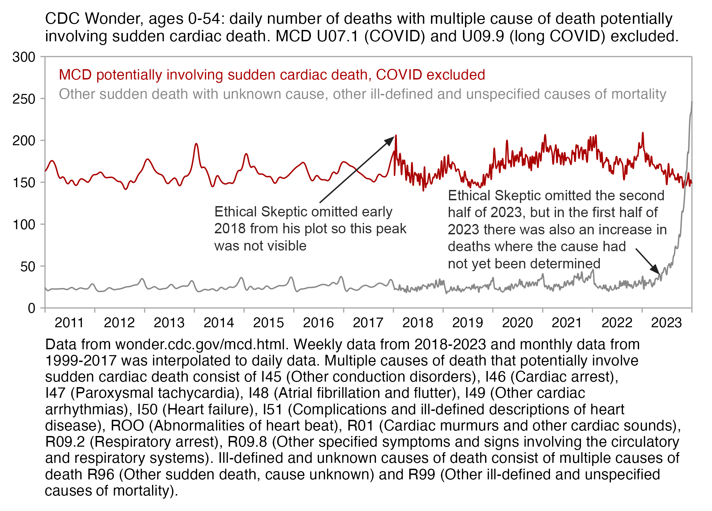
In Ethical Skeptic's plot the excess deaths looked flat in 2018-2019, but it might partially be because he fitted his baseline against data from only 2018 and 2019, because if you fit a seasonality-adjusted trend against only two years of data then it's easy to get the baseline to match the data closely. In the plot below where I fitted the baseline against data from 2021-2022, I also got my excess deaths to look roughly flat in 2021-2022:
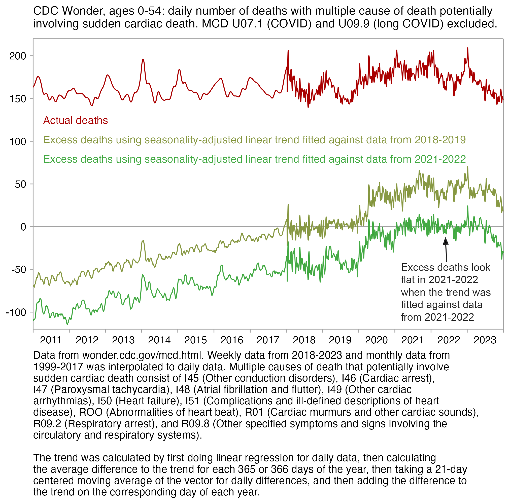
library(tempdisagg);library(ggplot2);library(stringr)
wonder=\(x){t=readLines(x);t=paste(t[1:(grep("^\"(---|Total)",t)[1]-1)],collapse="\n");read.table(sep="\t",text=t,header=T,na.strings="Not Applicable")[-1]}
old=wonder("Multiple Cause of Death, 1999-2020.txt")
old=td(data.frame(as.Date(paste(old$Month.Code,1),"%Y/%m %d"),old$Deaths)~1,,"daily","fast")$values
new=wonder("Provisional Mortality Statistics, 2018 through Last Week.txt")
covid=wonder("wondercovid.txt")
mt=match(covid$MMWR.Week.Code,new$MMWR.Week.Code)
new$Deaths[mt]=new$Deaths[mt]-covid$Deaths
new=td(data.frame(as.Date(sub(".*ending ","",new$MMWR.Week),"%B %d, %Y")+3,new$Deaths)~1,,"daily","fast")$values
ill=wonder("ill.txt")
ill=td(data.frame(as.Date(sub(".*ending ","",ill$MMWR.Week),"%B %d, %Y")+3,ill$Deaths)~1,,"daily","fast")$values
illold=wonder("illold.txt")
illold=td(data.frame(as.Date(paste(illold$Month.Code,1),"%Y/%m %d"),illold$Deaths)~1,,"daily","fast")$values
d=rbind(old[!old$time%in%new$time,],new)|>"colnames<-"(c("x","y"))
xy=cbind(d,z="Actual deaths")
ma=\(x,b=1,f=b)rowMeans(embed(c(rep(NA,b),x,rep(NA,f)),f+b+1),na.rm=T)
prediction=d$x>="2018-1-1"&d$x<="2019-12-31"
linear=predict(lm(y~x,d[prediction,]),d)
days=substr(d$x,6,10)
daily=tapply(d$y[prediction]-linear[prediction],days[prediction],mean)
daily=ma(rep(daily,3),10)[(length(daily)+1):(2*length(daily))]|>setNames(names(daily))
excess=d$y-(linear+daily[days])
xy=rbind(xy,data.frame(x=d$x,y=excess,z="Excess deaths using seasonality-adjusted linear trend fitted against data from 2018-2019"))
prediction=d$x>="2021-01-01"&d$x<="2022-12-31"
linear=predict(lm(y~x,d[prediction,]),d)
days=substr(d$x,6,10)
daily=tapply(d$y[prediction]-linear[prediction],days[prediction],mean)
daily=ma(rep(daily,3),10)[(length(daily)+1):(2*length(daily))]|>setNames(names(daily))
excess=d$y-(linear+daily[days])
xy=rbind(xy,data.frame(x=d$x,y=excess,z="Excess deaths using seasonality-adjusted linear trend fitted against data from 2021-2022"))
xy$z=factor(xy$z,unique(xy$z))
xstart=as.Date("2011-1-1");xend=as.Date("2024-1-1")
xy=xy[xy$x>=xstart&xy$x<=xend,]
xbreak=seq(xstart,xend,"6 month")
xlab=c(rbind("",2011:2023),"")
cand=c(sapply(c(1,2,5),\(x)x*10^c(-10:10)))
ymax=max(xy$y,na.rm=T);ymin=min(xy$y,na.rm=T)
ystep=cand[which.min(abs(cand-(ymax-ymin)/5))]
ystart=ystep*floor(ymin/ystep)
yend=ystep*ceiling(ymax/ystep)
ystart=-120;yend=220
ybreak=seq(-100,yend,ystep)
color=c("#aa0000","#889944","#44aa44")
labels=data.frame(x=xstart+.02*(xend-xstart),y=seq(ystart+(yend-ystart)*.72,,-(yend-ystart)/15,nlevels(xy$z)),label=levels(xy$z))
sub=str_wrap("Data from wonder.cdc.gov/mcd.html. Weekly data from 2018-2023 and monthly data from 1999-2017 was interpolated to daily data. Multiple causes of death that potentially involve sudden cardiac death consist of I45 (Other conduction disorders), I46 (Cardiac arrest), I47 (Paroxysmal tachycardia), I48 (Atrial fibrillation and flutter), I49 (Other cardiac arrhythmias), I50 (Heart failure), I51 (Complications and ill-defined descriptions of heart disease), ROO (Abnormalities of heart beat), R01 (Cardiac murmurs and other cardiac sounds), R09.2 (Respiratory arrest), and R09.8 (Other specified symptoms and signs involving the circulatory and respiratory systems).",95)
sub=paste0(sub,"\n\n",str_wrap("The trend was calculated by first doing linear regression for daily data, then calculating the average difference to the trend for each 365 or 366 days of the year, then taking a 21-day centered moving average of the vector for daily differences, and then adding the difference to the trend on the corresponding day of each year.",95))
ggplot(xy,aes(x=x,y=y,color=z))+
geom_hline(yintercept=c(ystart,0,yend),color="gray65",linewidth=.25)+
geom_vline(xintercept=c(xstart,xend),color="gray65",linewidth=.25)+
geom_line(aes(color=z),linewidth=.3)+
geom_label(data=labels,aes(x=x,y=y,label=label),fill=alpha("white",.8),label.r=unit(0,"lines"),label.padding=unit(.04,"lines"),label.size=0,color=color[1:nrow(labels)],size=2.4,hjust=0)+
labs(title=str_wrap("CDC Wonder, ages 0-54: daily number of deaths with multiple cause of death potentially involving sudden cardiac death. MCoD U07.1 (COVID) and U09.9 (long COVID) excluded.",88),x=NULL,y=NULL,caption=sub)+
coord_cartesian(clip="off",expand=F)+
scale_x_date(limits=c(xstart,xend),breaks=xbreak,labels=xlab)+
scale_y_continuous(limits=c(ystart,yend),breaks=ybreak)+
scale_color_manual(values=color)+
theme(axis.text=element_text(size=6.5,color="black"),
axis.ticks=element_line(linewidth=.25,color="gray65"),
axis.ticks.x=element_line(color=alpha("gray65",c(1,0))),
axis.ticks.length=unit(.15,"lines"),
axis.title=element_text(size=8),
legend.position="none",
panel.background=element_rect(fill="white"),
panel.grid=element_blank(),
plot.background=element_rect(fill="white"),
plot.margin=margin(.4,.65,.4,.4,"lines"),
plot.caption=element_text(size=6.7,hjust=0,margin=margin(.6,0,0,0,"lines")),
plot.title=element_text(size=7.5))
ggsave("1.png",width=4.6,height=4.5,dpi=450)
After Ethical Skeptic had published the plot that I wrote about in the previous section of this HTML file, he published an updated version of the plot where he included deaths due to accidental drug poisoning, and he included this note at the bottom of the plot: "X42-44 ((narcotics, heroin, fentanyl, meth, other drug) excess mortality surge removed (for 2020 only - lockdown impact is not trend data)". [https://theethicalskeptic.substack.com/p/the-state-of-things-pandemic-week-706] The plot now had a sudden increase in deaths between December 2020 and January 2021 which was missing from the earlier version, but it's because he removed excess deaths from drug overdoses in 2020 but not from 2021 and later years:
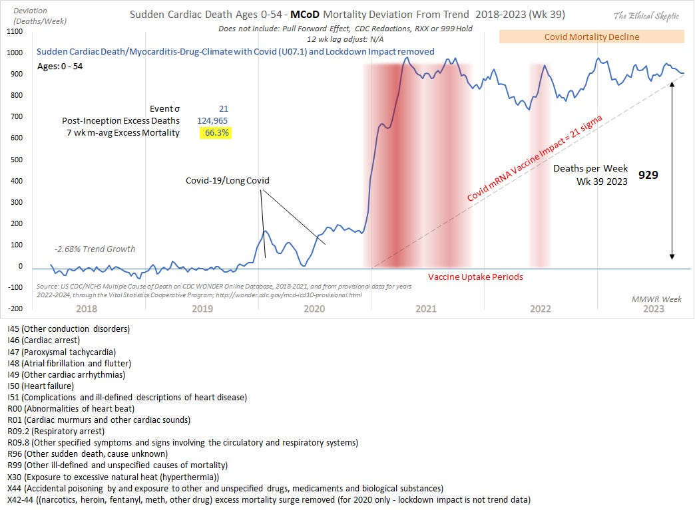
The reason why the increase between 2020 and 2021 in the plot above is not instant but it's spread over several weeks is probably because the plot displays a moving average, because Ethical Skeptic told me that he used a 7-week moving average in another similar plot even though it was not indicated anywhere in the plot. [https://theethicalskeptic.substack.com/p/the-state-of-things-pandemic-week-706/comment/53237226] In one of his earlier plots he used a moving average with a window that extended 3 weeks backwards and 2 weeks forwards. [https://www.covid-datascience.com/post/evaluating-claims-of-excess-cancer-deaths-in-the-usa-during-the-pandemic] So here the window probably also extends a few weeks both backwards and forwards, because the increase between 2020 seems to be divided across the last few weeks of 2020 and the first few weeks of 2021.
It's not clear if the plot above includes only X44 deaths or also X42 and X43 deaths, because the line at the bottom indicates that X42 to X44 deaths were removed in 2020, but the second line from the bottom seems to indicate that the plot only includes X44 deaths. In the plot below I got about equally many X44 deaths as X42 and X43 deaths combined. The plot below also shows that there's spikes in cardiac deaths during COVID waves, so most of the excess deaths in Ethical Skeptic's plot can probably be attributed to either drug deaths or COVID deaths:
In the plot above I didn't exclude deaths with MCD COVID. In 2020 to 2023 in ages 0 to 54, only about 0.5% of deaths with MCD X42 to X44 also had MCD COVID, but about 9% of deaths with MCD I45 to I51 also had MCD COVID.
In the next plot the light red line shows deaths with MCD I45-I51 but not MCD COVID. The light red line is clearly elevated in 2020 to 2023 compared to 2018 and 2019, but the period with elevated deaths already started in the second quarter of 2020 so it's difficult to blame on the vaccines, and the steady elevation in the light red line since 2020 rather seems to coincide with the elevation of drug-related deaths since 2020:
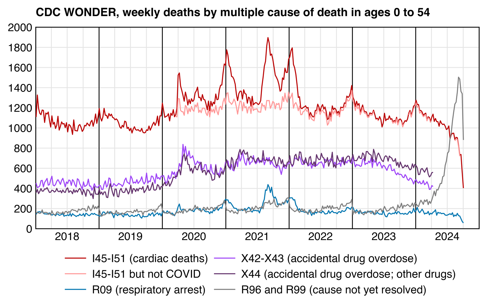
library(data.table);library(ggplot2)
t=fread("http://sars2.net/f/wonderskeptic.csv")
t=rbind(t[cause%like%"I45"],merge(t[cause%like%"I45",.(date,dead)],t[cause%like%"Cardiac",.(date,dead2=dead)],all=T)[,.(cause="I45-I51 but not COVID",dead=dead-dead2,date)],t[!cause%like%"I45|Cardiac|COVID"])
p=t[,.(x=date-3,y=as.double(dead),z=factor(cause,unique(cause)))]
xstart=as.Date("2018-1-1");xend=as.Date("2025-1-1")
xbreak=seq(xstart,xend,"6 month");xlab=c(rbind("",2018:2024),"")
ystart=0;yend=2000;ystep=200;ybreak=seq(ystart,yend,ystep)
color=c("#bb0000","#ff9999",hcl(225,100,40),hcl(280,120,50),hcl(300,40,30),"gray50")
ggplot(p,aes(x,y,color=z))+
coord_cartesian(clip="off",expand=F)+
geom_hline(yintercept=seq(ystart,yend,ystep),color="gray90",linewidth=.25)+
geom_vline(xintercept=seq(xstart,xend,"3 month"),color="gray90",linewidth=.25)+
geom_vline(xintercept=seq(xstart,xend,"year"),linewidth=.25)+
geom_hline(yintercept=c(ystart,yend),linewidth=.25,lineend="square")+
geom_vline(xintercept=c(xstart,xend),linewidth=.25,lineend="square")+
geom_line(linewidth=.3)+
labs(title="CDC WONDER, weekly deaths by multiple cause of death in ages 0 to 54",x=NULL,y=NULL)+
scale_x_continuous(limits=c(xstart,xend),breaks=xbreak,labels=xlab)+
scale_y_continuous(limits=c(ystart,yend),breaks=ybreak)+
scale_color_manual(values=color)+
guides(colour=guide_legend(ncol=2,byrow=F))+
theme(axis.text=element_text(size=7,color="black"),
axis.ticks=element_blank(),
axis.ticks.length=unit(0,"pt"),
axis.title=element_text(size=7),
legend.background=element_blank(),
legend.box.just="left",
legend.box.spacing=unit(0,"pt"),
legend.key=element_blank(),
legend.key.height=unit(10,"pt"),
legend.key.width=unit(17,"pt"),
legend.margin=margin(5,5,0,5),
legend.position="bottom",
legend.spacing.x=unit(2,"pt"),
legend.text=element_text(size=7,vjust=.5),
legend.title=element_blank(),
panel.background=element_blank(),
panel.grid=element_blank(),
plot.margin=margin(5,5,5,5),
plot.subtitle=element_text(size=7),
plot.title=element_text(size=7.3,face=2))
ggsave("1.png",width=4.3,height=2.7,dpi=400*4)
system("magick 1.png -resize 25% 1.png")
In the next plot which shows deaths by underlying cause instead of multiple cause, there is no longer such a clear increase in deaths under the cardiac ICD codes in 2020:
Ethical Skeptic had the chutzpah to say that it would equate to obfuscation if he also added excess drug deaths to his plot in 2020. He wrote: "It should be noted that an initial mid-2020 surge in excess deaths due to overdoses (X42-44) during the lockdown period has been removed from this data. This is a death-surge which is non-Natural/non-Vaccine in its basis and can be viewed as to its arrival shape and magnitude in Chart 4c above. This 2020 surge is not trend data, hence its removal in favor of the true arrival trend attributable to the mRNA vaccine. There exists a slight elevation in these deaths which remains on the chart, attributable to Covid-19, but the permanent surge in mortality arrived as a result of the Covid vaccine beginning in December (Week 52 - 14 days after the vaccine start) 2020. To conflate that pre-vaccine surge with the vaccine arrival data, would constitute obfuscation." [https://theethicalskeptic.com/2024/04/04/the-state-of-things-pandemic-week-50-2023/] He said that the excess drug deaths in 2020 were not "trend data" because the trend he was trying to find was a trend of increased deaths after the vaccine rollout. So in order to show there is a trend which fits his preconceptions, he considers data which doesn't conform to his preconceptions to not be "trend data" so he can freely discard it.
When someone asked Ethical Skeptic why there was a huge increase in deaths in early 2021 even though only few people in ages 0 to 54 had been vaccinated, he answered the deaths were caused by the vaccines but he didn't even mention that he omitted excess drug deaths from his plot in 2020 but not 2021: [https://x.com/EthicalSkeptic/status/1775757476085841999]
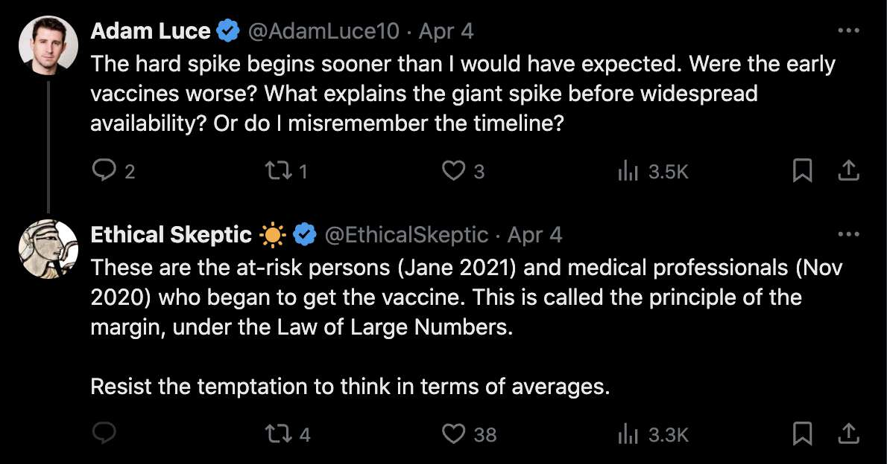
And when someone asked Ethical Skeptic why he included drug deaths in his plot, he said that the persistent increase in drug deaths was somehow caused by the vaccines: [https://x.com/EthicalSkeptic/status/1775741411524030473]
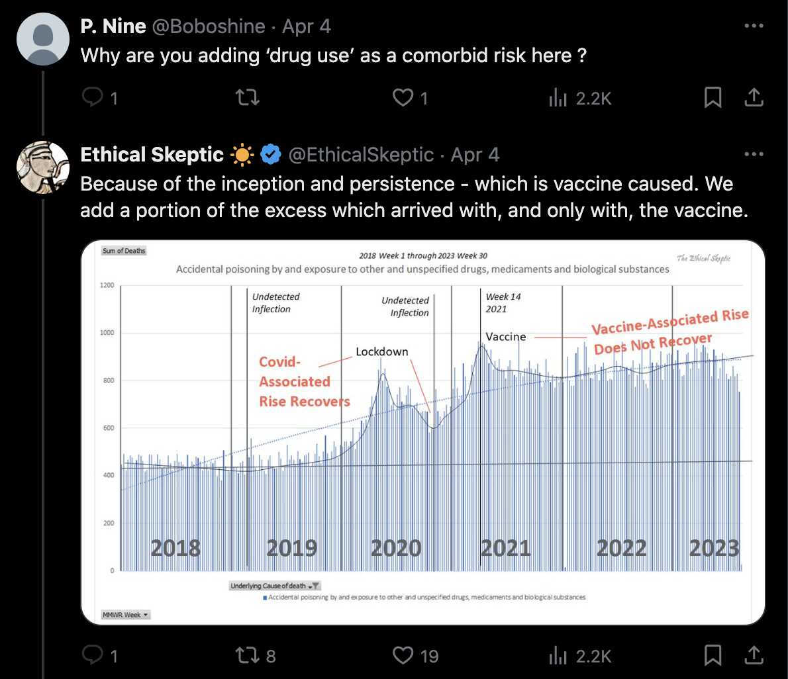
In one tweet he further explained that the reason why he included a certain proportion of drug deaths is because if someone died from a cardiac cause induced by a drug overdose, only the drug overdose would be listed as MCD because he claims there is only one MCD listed for deaths from external causes: "The reason we can and ethically should add the incremental vaccine-caused portion of these deaths (from Chart 4c) into this analysis, is because this is a multiple cause of death (MCoD) analysis, not an underlying cause of death (UCoD) analysis. MCoD analysis is used to detect prevalence and trend, when an overlap between causes is determined. However, when death is ascribed to a Non-Natural Cause, no MCoD overlap is afforded that pool of mortality, as only one cause of death is allowed - thereby depleting the sudden cardiac death trend numbers artificially. This has been abused (as one can ascertain from Chart 4c) - therefore, competent analysis on this must include the incremental portion of 'unknown drug overdose' which is clearly sensitive to the introduction of the vaccine." [https://x.com/EthicalSkeptic/status/1778166029601943622] However for example in 2021 in all ages, CDC WONDER returned 4,713 deaths where the MCD included one of the drug-related codes X42-X44 and where the MCD also included I45-I51, R00, or R01 (which were the cardiac ICD codes in his plot). So I don't think he is right that only one cause of death is allowed for deaths from non-natural causes. ChatGPT had the same opinion:
In the U.S., multiple causes of death are generally allowed and recorded on death certificates, even for deaths from non-natural causes. The death certificate typically includes:
Immediate Cause of Death: The direct cause that led to the death (e.g., gunshot wound, drowning).
Underlying Causes of Death: Conditions or events that led to the immediate cause (e.g., chronic illness, drug overdose).
Contributing Factors: Other medical conditions or external factors that played a role in the death (e.g., alcohol intoxication, diabetes).
For non-natural causes of death - such as accidents, homicides, or suicides - the certificate will often list both the immediate cause (such as the injury) and any contributing factors or circumstances.
ChatGPT also said that "for a heart attack induced by drug overdose, both causes are typically listed on the death certificate in the U.S. This allows for a more complete understanding of the sequence of events leading to death. The death certificate will show both the immediate cause of death and the underlying causes."
The GIF file below shows that an earlier version of the plot that Ethical Skeptic posted on Twitter was even more misleading, because it didn't include the line at the bottom which said: "X42-44 ((narcotics, heroin, fentanyl, meth, other drug) excess mortality surge removed (for 2020 only - lockdown impact is not trend data)": [https://x.com/EthicalSkeptic/status/1775711298061275434]
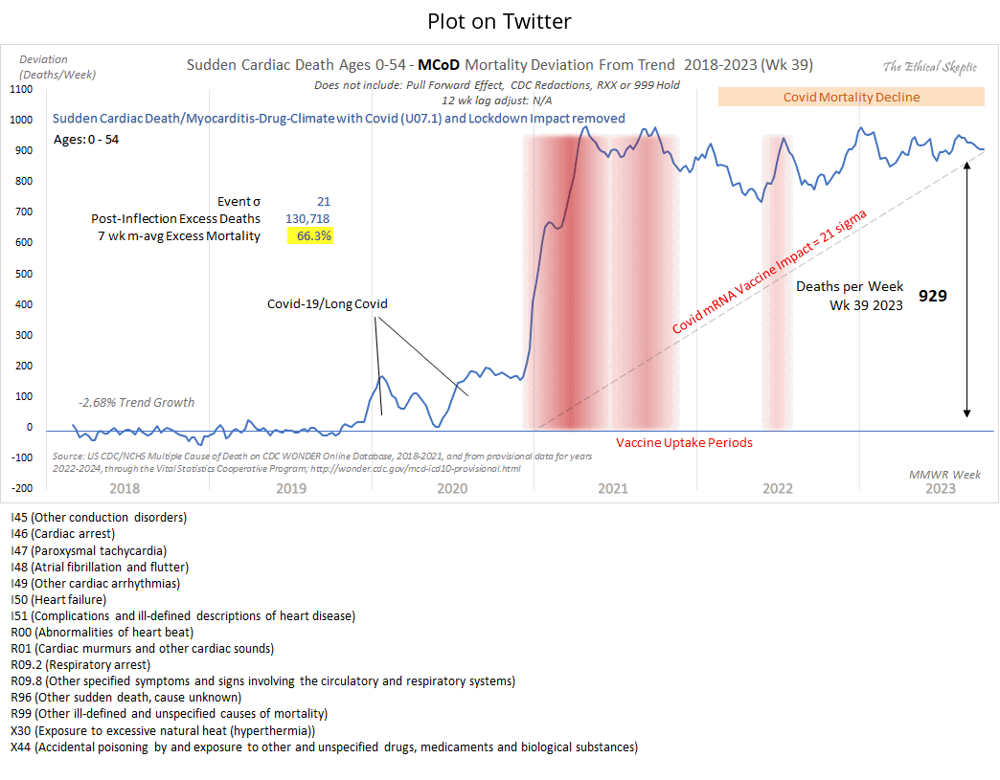
I don't know if his plot includes only X44 deaths or also X42 and X43 deaths, because the line at the bottom says that he removed X42-X44 deaths in 2020 but the line above it seems to indicate that his plot only includes X44 deaths but not X42 and X43 deaths. X42 is "Accidental poisoning by and exposure to narcotics and psychodysleptics [hallucinogens], not elsewhere classified", X43 is "Accidental poisoning by and exposure to other drugs acting on the autonomic nervous system", and X44 is "Accidental poisoning by and exposure to other and unspecified drugs, medicaments and biological substances". In the year 2021 CDC WONDER returned 45,053 deaths with MCD X42, 35 deaths with MCD X43, and 45,710 deaths with MCD X44. So there's approximately an equal number of X42 and X44 deaths but almost no X43 deaths.
Someone on Twitter asked: "Wonder what that graph looks like without that bottom code (and similar others)" (where the bottom code referred to the cause of death X44, because the version of the plot on Twitter did not yet include the line which said that excess X42-X44 deaths had been removed from 2020). [https://x.com/All_Im_sayn/status/1775728867543535904] But Ethical Skeptic replied: "It is 268 deaths per week out of the 929. Decrement that, and the injury-death tally is far below the actual vaccine impact - by conducting cherry picking to force a desired conclusion - and it does not even accomplish the task." 929 refers to the number of excess deaths on week 39 of 2023, so I guess 268 drug deaths also referred to the number of deaths on week 39 of 2023. But it was at the end of the x-axis when a lot of drug deaths were still missing because of a registration delay, so the proportion of drug deaths out of all deaths was probably higher during earlier months.
One of the three "vaccine uptake periods" that are highlighted in Ethical Skeptic's plot is in mid-2022. I don't know if it's supposed to refer to the period when people got second boosters, because the period in winter 2021-2022 when people got first boosters is not highlighted. In a CDC dataset which shows the number of vaccines administered by age group, the percentage of people in ages 25 to 49 who had received the first booster didn't increase that much after February 2022, but it's missing data for second boosters administered in younger age groups (even though the total percentage of people in ages 25 to 49 who ever got a second booster is fairly low): [https://data.cdc.gov/Vaccinations/COVID-19-Vaccination-Age-and-Sex-Trends-in-the-Uni/5i5k-6cmh]
> t=data.table::fread("COVID-19_Vaccination_Age_and_Sex_Trends_in_the_United_States__National_and_Jurisdictional_20240131.csv")
> t=t[Demographic_Category=="Ages_25-49_yrs"&Location=="US"]
> a=aggregate(t[,9:12],list(sub("(..)/../..(..).*","\\2-\\1",t$Date)),mean,na.rm=T)
> names(a)=sub("_(Pop|Vax|pct).*","",names(a))
> round(t(data.frame(a,row.names=1)))
20-12 21-01 21-02 21-03 21-04 21-05 21-06 21-07 21-08 21-09 21-10 21-11 21-12
Administered_Dose1 1 6 10 20 39 51 56 60 64 69 72 74 77
Series_Complete 0 1 6 11 23 40 49 53 56 60 63 65 67
Booster_Doses NaN NaN NaN NaN NaN NaN NaN NaN 0 1 3 10 23
Second_Booster NaN NaN NaN NaN NaN NaN NaN NaN NaN NaN NaN NaN NaN
22-01 22-02 22-03 22-04 22-05 22-06 22-07 22-08 22-09 22-10 22-11 22-12 23-01
Administered_Dose1 80 81 82 82 83 83 83 83 84 84 85 85 85
Series_Complete 68 69 70 70 70 70 71 71 71 71 72 72 72
Booster_Doses 33 38 39 40 40 41 41 41 42 42 43 43 43
Second_Booster NaN NaN NaN NaN NaN NaN NaN NaN NaN NaN NaN NaN NaN
23-02 23-03 23-04 23-05
Administered_Dose1 85 85 85 86
Series_Complete 72 72 72 72
Booster_Doses 43 43 43 43
Second_Booster NaN NaN NaN NaN
However actually the reason why Ethical Skeptic highlighted mid-2022 as a vaccine uptake period might have been because his plot had a noticeable spike in all-cause deaths around the same time. But in my plots where I split out the number of deaths by cause of death, there wasn't any cause of death which had a clear increase in deaths around mid-2022. But it might be because Ethical Skeptic's plot displayed excess deaths and not raw deaths like my plot, so his increase in mid-2022 might have been an artifact of the way he adjusted his baseline for seasonal variation in mortality.
Added later: Ethical Skeptic later posted an updated version of his plot which was now more transparent and honest, because he added a second line to his plot where he didn't omit the excess drug deaths in 2020 (even though a lot of people on Twitter still didn't seem to understand what the gray second line meant, and they didn't seem to understand that excess drug deaths were omitted from the blue line in 2020 but not 2021): [https://x.com/EthicalSkeptic/status/1846690187297919231]
Chart 4c - Excess Mortality from Overdose from Unspecified Drug and Climate Change - Yes, the combination of lockdowns and Covid-19 resulted in a temporary increase in undetermined drug overdoses. However, this is not 'trend' data. The trend begins at the end of 2020 with the introduction of the vaccine (which peaks the very week of vaccine maximum uptake). Vaccine-induced myocarditis rendered this population vulnerable to sudden cardiac death - which was then falsely attributed to drug overdose. This excess attribution, as of Week 25 2023, is in the range of 270-300 deaths per week, for 'unspecified drug' and 'climate'. A query-determined non-overlapping portion of this tally is added back into the Sudden Cardiac Death mortality totals show in DFT Chart 10 below. It suggests an alarming increase in young person Sudden Cardiac Death.
The title of the plot above says that the plot shows "Unspecified Drug and Climate Change" deaths. The only ICD code in the plot related to climate change is X30 ("Exposure to excessive natural heat (hyperthermia)") and the only drug-related ICD code is X44 ("Accidental poisoning by and exposure to other and unspecified drugs, medicaments and biological substances"). In the year 2021 CDC WONDER returned only 556 deaths with MCD X30 but 35,671 deaths with MCD X44. So deaths from hyperthermia account for such a small fraction of total deaths in Ethical Skeptic's plot that it's confusing that are included in the plot at all. When Ethical Skeptic's followers hear that there has been an increase in deaths related to climate change, they might think that there has been a large number of vaccine deaths that have been misclassified as deaths related to climate change, because it's a cliche among anti-vaxxers to say that vaccine deaths are covered up as deaths due to climate change. So Ethical Skeptic may have attempted to mislead his followers into thinking that the increase in deaths was due to the vaccines by conflating deaths from hyperthermia with drug deaths.
The plot above included only MCD X44 ("Accidental poisoning by and exposure to other and unspecified drugs, medicaments and biological substances") but not MCD X42 ("Accidental poisoning by and exposure to narcotics and psychodysleptics [hallucinogens], not elsewhere classified"). However there's about equally many deaths under X42 as X44 and both of them are common ICD codes for accidental overdoses from recreational drugs, so I don't know why Ethical Skeptic only included X44 but not X42 in his plot. But it might be because X42 had a higher peak in 2020 than 2021 and the peak in 2020 cannot be attributed to the vaccines, but X44 had a higher peak in 2021 than 2020 so it's easier to blame the deaths on the vaccines. Or it might also be because X44 had about 81% more deaths in 2021-2022 than 2018-2019 but X42 only had about 50% more deaths in 2021-2022 than 2018-2019. Or it might also be because X44 deaths have a more flat trend in 2018-2019 so the level of deaths in 2021-2023 looks like it's far above the trend in Ethical Skeptic's plot where the x-axis starts in 2018, but X42 deaths have a trend that is more sloped upwards in 2018-2019 so the level of deaths in 2022 doesn't seem that far off the trend even if the x-axis starts from 2018 so you're not seeing data for earlier years:
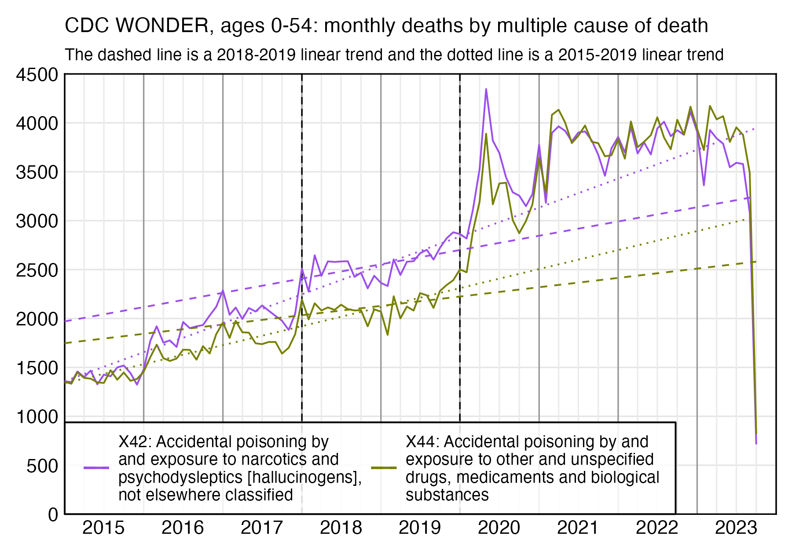
library(data.table);library(stringr);library(ggplot2)
t=fread("http://sars2.net/f/ethicalx42x44.csv")
t[,date:=as.Date(paste0(date,"-1"))]
xstart=as.Date("2015-1-1");xend=as.Date("2024-1-1")
xbreak=seq(xstart,xend,"6 month")
xlab=c(rbind("",2015:2023),"")
p=t[date>=xstart&date<=xend]
ybreak=pretty(p$dead);yend=max(ybreak)
dates=unique(p$date)
p$trend=p[year(date)%in%2018:2019,predict(lm(dead~date),.(date=dates)),cause]$V1
p$trend2=p[year(date)%in%2015:2019,predict(lm(dead~date),.(date=dates)),cause]$V1
color=c(hcl(280,110,50),hcl(90,110,50))
lab=c("X42: Accidental poisoning by and exposure to narcotics and psychodysleptics [hallucinogens], not elsewhere classified"|>str_wrap(36),"X44: Accidental poisoning by and exposure to other and unspecified drugs, medicaments and biological substances"|>str_wrap(36))
ggplot(p,aes(x=date,y=dead))+
geom_vline(xintercept=seq(xstart,xend,"3 month"),color="gray92",linewidth=.25)+
geom_hline(yintercept=seq(ystart,yend,ystep),color="gray90",linewidth=.25)+
geom_vline(xintercept=seq(xstart,xend,"year"),color="gray60",linewidth=.25)+
geom_vline(xintercept=c(as.Date("2018-1-1"),as.Date("2020-1-1")),linetype=2,linewidth=.25)+
geom_vline(xintercept=c(xstart,xend),linewidth=.25,lineend="square")+
geom_hline(yintercept=c(ystart,yend),linewidth=.25,lineend="square")+
geom_line(aes(color=cause),linewidth=.3)+
geom_line(aes(color=cause,y=trend),linetype=2,linewidth=.3)+
geom_line(aes(color=cause,y=trend2),linetype=3,linewidth=.3)+
labs(title="CDC WONDER, ages 0-54: monthly deaths by multiple cause of death",subtitle="The dashed line is a 2018-2019 linear trend and the dotted line is a 2015-2019 linear trend",x=NULL,y=NULL)+
scale_x_continuous(limits=c(xstart,xend),breaks=xbreak,labels=xlab)+
scale_y_continuous(limits=c(ystart,yend),breaks=ybreak)+
scale_color_manual(values=color,labels=lab)+
coord_cartesian(clip="off",expand=F)+
theme(axis.text=element_text(size=7,color="black"),
axis.ticks.length=unit(0,"pt"),
legend.background=element_blank(),
legend.box.background=element_rect(fill=alpha("white",1),color="black",linewidth=.25),
legend.box.just="left",
legend.justification=c(0,1),
legend.key=element_blank(),
legend.key.width=unit(17,"pt"),
legend.key.height=unit(31,"pt"),
legend.margin=margin(-3,4,3,4,"pt"),
legend.position=c(0,1),
legend.spacing.x=unit(1.5,"pt"),
legend.text=element_text(size=6.5,vjust=.5),
legend.title=element_blank(),
panel.background=element_blank(),
plot.margin=margin(5,5,5,5),
plot.subtitle=element_text(size=6.4,margin=margin(,,3)),
plot.title=element_text(size=7.3,face=2,margin=margin(1,,3)))
ggsave("1.png",width=4,height=2.8,dpi=380*4)
system("magick 1.png -resize 25% 1.png")
The plot by Ethical Skeptic started from 2018 and it only included X44 deaths, so it looked like there was an anomalous sustained increase in drug deaths in 2021-2023. But from my plot above which starts from 2015 and where X44 deaths are also included, it looks like 2022 isn't that far off the long-term trend but rather the level of deaths in mid-2021 looks elevated, and there's still probably a lot of deaths missing in 2023 because drug-related deaths have a long registration delay.
Before COVID the long-term trend in drug deaths seemed to be curved upwards, so the 2015-2019 linear trend in my plot above might be too low, and in the next plot where I used a 2010-2019 quadratic trend instead, the X42 deaths were actually below the trend in 2022 (even though X44 deaths were still above the trend in 2022):
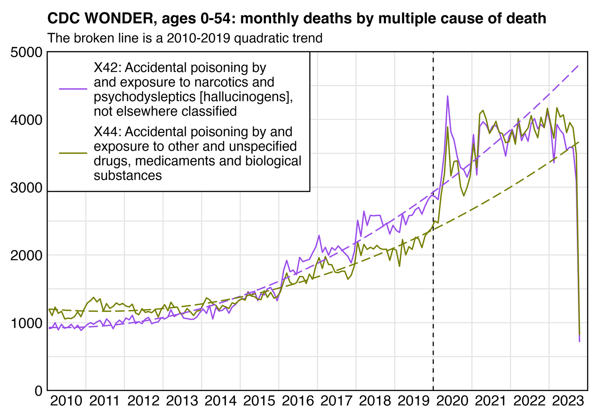
library(data.table);library(stringr);library(ggplot2)
t=fread("http://sars2.net/f/ethicalx42x44.csv")
t[,date:=as.Date(paste0(date,"-1"))]
xstart=as.Date("2010-1-1");xend=as.Date("2024-1-1")
xbreak=seq(xstart,xend,"6 month")
xlab=c(rbind("",2010:2023),"")
p=t[date>=xstart&date<=xend]
ybreak=pretty(p$dead);yend=max(ybreak)
dates=unique(p$date)
p$trend=p[year(date)<2020,predict(lm(dead~poly(as.numeric(date),2)),.(date=dates)),cause]$V1
color=c(hcl(280,110,50),hcl(90,110,50))
lab=c("X42: Accidental poisoning by and exposure to narcotics and psychodysleptics [hallucinogens], not elsewhere classified"|>str_wrap(36),"X44: Accidental poisoning by and exposure to other and unspecified drugs, medicaments and biological substances"|>str_wrap(36))
ggplot(p,aes(x=date+15,y=dead))+
geom_hline(yintercept=seq(ystart,yend,ystep),color="gray90",linewidth=.25)+
geom_vline(xintercept=seq(xstart,xend,"year"),color="gray90",linewidth=.25)+
geom_vline(xintercept=as.Date("2020-1-1"),linetype=2,linewidth=.25)+
geom_vline(xintercept=c(xstart,xend),linewidth=.25,lineend="square")+
geom_hline(yintercept=c(ystart,yend),linewidth=.25,lineend="square")+
geom_line(aes(color=cause),linewidth=.3)+
geom_line(aes(color=cause,y=trend),linetype=5,linewidth=.3)+
labs(title="CDC WONDER, ages 0-54: monthly deaths by multiple cause of death",subtitle="The broken line is a 2010-2019 quadratic trend",x=NULL,y=NULL)+
scale_x_continuous(limits=c(xstart,xend),breaks=xbreak,labels=xlab)+
scale_y_continuous(limits=c(ystart,yend),breaks=ybreak)+
scale_color_manual(values=color,labels=lab)+
coord_cartesian(clip="off",expand=F)+
theme(axis.text=element_text(size=7,color="black"),
axis.ticks.length=unit(0,"pt"),
legend.background=element_blank(),
legend.box.background=element_rect(fill=alpha("white",1),color="black",linewidth=.25),
legend.box.just="left",
legend.justification=c(0,1),
legend.key=element_blank(),
legend.key.width=unit(17,"pt"),
legend.key.height=unit(31,"pt"),
legend.margin=margin(-3,4,3,4,"pt"),
legend.position=c(0,1),
legend.spacing.x=unit(1.5,"pt"),
legend.text=element_text(size=6.5,vjust=.5),
legend.title=element_blank(),
panel.background=element_blank(),
plot.margin=margin(5,5,5,5),
plot.subtitle=element_text(size=6.4,margin=margin(,,3)),
plot.title=element_text(size=7.3,face=2,margin=margin(1,,3)))
ggsave("1.png",width=4,height=2.8,dpi=380*4)
system("magick 1.png -resize 25% 1.png")
I'm not analyzing generational or population-diluted trends (potentially misleading statistics), I am detecting deviation from trend dynamics (detecting system inflection).
I cannot use Wonder 2017 and earlier because the numbers are boosted by the small county single-record effect. This is why Wonder 2018 and beyond is a new database (shows as a variance in your chart which does not actually exist), under that HIPAA constraint. Nor can I use 2002 - 2017 data because this contain a dissipating generational effect of those Boomers who suffered cardiac arrest from specific past health impacts which are no longer salient to this age bracket. That trend line must be moved to the 65+ bracket now. This has caused a slight downtrend into 2019, which I do accommodate, yes.
I compared that baseline to a linear regression of the old growth rate (2014-2017) before hand to ensure it was 'in context'. However, I did not use a pure linear regression of 2018 and 19 for this reason. I fit the baseline to the variances linearly, but not by least-squares regression (how I avoided the early 2018 surge). There is of course not enough data to then use a non-linear function beyond that as well. That would be whipsawing fiction.
But much of this is moot, because none of these manipulations serve to make this dramatic an inflection disappear. These are trend manipulations. Four years from now, trend models will have to be adjusted again, but the inflection will still be there. The argument will be over just how much excess death there indeed is... but I anticipate that it will be moot. If you have a strong inflection like this and your trend analysis makes it disappear quickly, odds are the trend analysis is biased.
As a result, I don't have either a Jan 2018 high or 2019 lowering bias in my baseline.
I don't understand how his method of calculating a linear baseline is different from a regular linear regression or how he accounted for the low number of deaths in 2019, but he blocked me before I was able to ask him to clarify it.
The United States had a high number of deaths in early 2018 and a low number of deaths in 2019, so if you fit a regular linear baseline using only data from the years 2018 and 2019, the slope of the baseline will usually point too much downwards like in the case of my gray baseline below (even though I don't know to what extent Ethical Skeptic's undocumented regression method suffers from the same problem):
When Ethical Skeptic posted of list errors made by other analysts, this was one of the points on his list: "Add volatility of peak winter mortality periods into the trend regression, and not index off the summer base. That way a rough flu year will raise the baseline artificially to your advantage." [https://x.com/EthicalSkeptic/status/1773066903000396096] So I don't know if it means that he omits the weeks with high mortality in early 2018 when he calculates the baseline.
Ethical Skeptic has published three articles in a series called "Houston We Have a Problem" where he has explained some of his methodology. [https://theethicalskeptic.com/2024/04/04/the-state-of-things-pandemic-week-50-2023/] In the third part he included the image below where he described how he calculates his baseline, but it sounds like he's just doing a regular linear regression and he's not applying any special method to account for the low number of deaths in 2019 or for the high number of deaths in early 2018 (even though he seems to describe how he makes his plots that start from 2014 so it could be that he uses different methodology in the plots that start from 2018, or he may have revised his methodology since he made this image):
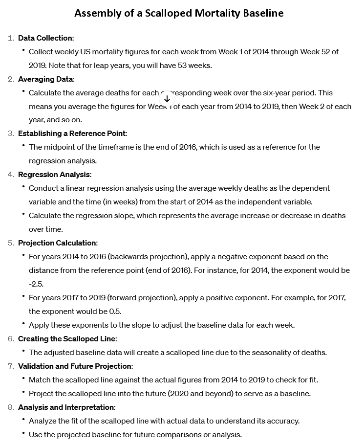
When Ethical Skeptic fits a seasonality-adjusted baseline against only two years of data, another more minor issue is that the baseline for each week number will adapt to whatever the number of deaths that week number happened to be in 2018 and 2019, so 2018 and 2019 will have low residuals of excess deaths compared to subsequent years, and therefore the z-scores of subsequent years will also be elevated. So he will often get impressively high z-scores for deaths since 2021, but he doesn't mention that the z-scores would usually be lower if he used a longer fitting period for his baseline.
The plot below shows that when I fitted a seasonality-adjusted baseline against only one year of weekly data so that the baseline was adjusted to match the actual deaths each week, there were 0% excess deaths during each week of the fitting period, so then the standard deviation of the residuals during the fitting period was zero, so I got infinite z-scores when I subsequently divided excess deaths with the standard deviation of the residuals. And similarly when I fitted a seasonality-adjusted baseline against only two years of data, I subsequently got higher absolute z-scores than when I used a 4-year fitting period. The plot demonstrates that shorter seasonality-adjusted baselines tend to produce a lower standard deviation for the residuals during the fitting period, and therefore they tend to produce higher z-scores for excess deaths:
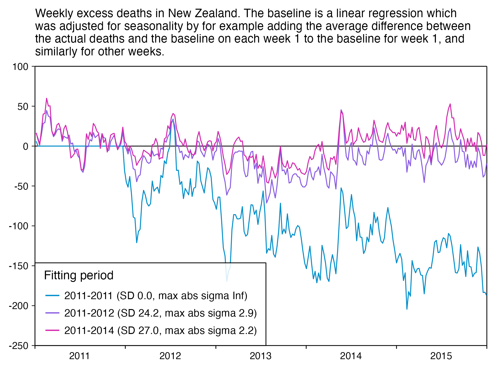
library(ggplot2)
isoweek=\(year,week,weekday=1){d=as.Date(paste0(year,"-1-4"));d-(as.integer(format(d,"%w"))+6)%%7-1+7*(week-1)+weekday}
ma=\(x,b=1,f=b)rowMeans(embed(c(rep(NA,b),x,rep(NA,f)),f+b+1),na.rm=T)
t=read.csv("https://www.mortality.org/File/GetDocument/Public/STMF/Outputs/NZL_NPstmfout.csv")|>subset(Sex=="b")
t$date=isoweek(t$Year,t$Week,4)
xy=do.call(rbind,lapply(c(2011,2012,2014),\(i){
pred=t$Year%in%2011:i
trend=predict(lm(Total~date,t[pred,]),t)
weekly=tapply(t$Total[pred]-trend[pred],t$Week[pred],mean)
ma(rep(weekly,3),0)[53:154]
o=data.frame(x=t$date,z=paste0("2011-",i),dead=t$Total)
o$trend=trend+weekly[pmin(t$Week,52)]
o$y=ma(o$dead-o$trend,1)
o$sd=sd(o$dead[pred]-o$trend[pred])
o}))
xstart=as.Date("2011-1-1");xend=as.Date("2016-1-1")
xy=xy[xy$x>=xstart&xy$x<=xend,]
xbreak=seq(xstart,xend,"6 month")
xlab=c(rbind("",2011:2015),"")
cand=c(sapply(c(1,2,5),\(x)x*10^c(-10:10)))
ymax=max(xy$y,na.rm=T);ymin=min(xy$y,na.rm=T)
ystep=cand[which.min(abs(cand-(ymax-ymin)/5))]
ystart=ystep*floor(ymin/ystep)
yend=ystep*ceiling(ymax/ystep)
ybreak=seq(ystart,yend,ystep)
color=c(hcl(c(210,260,310)+15,100,50))
sd=sprintf("%.1f",tapply(xy$sd,xy$z,unique))
sigma=c("Inf",sprintf("%.1f",tapply(abs(xy$y/xy$sd),xy$z,max))[-1])
lab=paste0(unique(xy$z)," (SD ",sd,", max abs sigma ",sigma,")")
xy$z=lab[factor(xy$z)]
tit="Weekly excess deaths in New Zealand. The baseline is a linear regression which was adjusted for seasonality by for example adding the average difference between the actual deaths and the baseline on each week 1 to the baseline for week 1, and similarly for other weeks."
ggplot(xy,aes(x=x,y=y,color=z))+
geom_hline(yintercept=c(ystart,0,yend),linewidth=.25)+
geom_vline(xintercept=c(xstart,xend),linewidth=.25)+
geom_line(aes(color=z),linewidth=.3)+
labs(title=stringr::str_wrap(tit,85),x=NULL,y=NULL)+
coord_cartesian(clip="off",expand=F)+
scale_x_date(limits=c(xstart,xend),breaks=xbreak,labels=xlab)+
scale_y_continuous(limits=c(ystart,yend),breaks=ybreak)+
scale_color_manual(values=color)+
guides(colour=guide_legend(title="Fitting period",override.aes=list(linewidth=.4)))+
theme(axis.text=element_text(size=6.5,color="black"),
axis.ticks=element_line(linewidth=.25),
axis.ticks.x=element_line(color=alpha("black",c(1,0))),
axis.ticks.length=unit(.15,"lines"),
axis.title=element_text(size=8),
legend.background=element_blank(),
legend.box.just="left",
legend.key=element_rect(fill="white"),
legend.spacing.x=unit(.15,"lines"),
legend.key.size=unit(.8,"lines"),
legend.position=c(0,0),
legend.justification=c(0,0),
legend.box.background=element_rect(fill=alpha("white",.85),color="black",linewidth=.25),
legend.margin=margin(.3,.4,.3,.4,"lines"),
legend.text=element_text(size=7,vjust=.5),
legend.title=element_text(size=8),
panel.background=element_rect(fill="white"),
panel.grid=element_blank(),
plot.background=element_rect(fill="white"),
plot.margin=margin(.4,.65,.4,.4,"lines"),
plot.caption=element_text(size=6.7,hjust=0,margin=margin(.6,0,0,0,"lines")),
plot.title=element_text(size=7.8))
ggsave("1.png",width=4.6,height=3.4,dpi=450)
Covid Deaths per 100 K population trend down as the percentage of the population vaccinated rises.
Vaccines working right?
No, this is the function which existed prior to the vaccines being rolled out (22 Jan 2020 - 4 Apr 2021).
Watch for charlatans exploiting this effect.
In actuality, when we compare both periods before & after the launch of the vax (MMWR Wk 14 2021) - we observe that there exists no difference between pre & post vax death rates by US county. It is EXACTLY the same function pre & post vaccine.
Any benefit MUST show here.
However for some reason he extended his pre-vaccination period up to April 4th 2021, even though about 30% of the US population was already vaccinated at that point (and the majority of people were vaccinated in the elderly age groups which account for most COVID deaths):
He also didn't explain how he calculated the curved trend line, and it looks too low near the end of the x-axis, and for some reason he only drew the trend up to the point where the value of the x-axis was about 85%.
In the plot below I tried plotting the percentage of vaccinated population on March 1st 2022 on the x-axis like Ethical Skeptic, but I compared COVID deaths in 2020 against COVID deaths in 2021-2022 so that I didn't include the first three months of 2021 as part of the pre-vaccination period. When I splitted a spline trend to the data, it was a lot steeper in 2021-2022 than 2020. And even in 2020 the overall trend looks more flat in my plot, because I drew the trend line up to the end of the x-axis and I didn't smooth out the trend line as heavily as Ethical Skeptic. The trend got even flatter when I weighted it by population size, because larger counties have a higher percentage of vaccinated people than smaller counties, and in 2020 there were many large northeastern counties that had a high number of COVID deaths per capita:
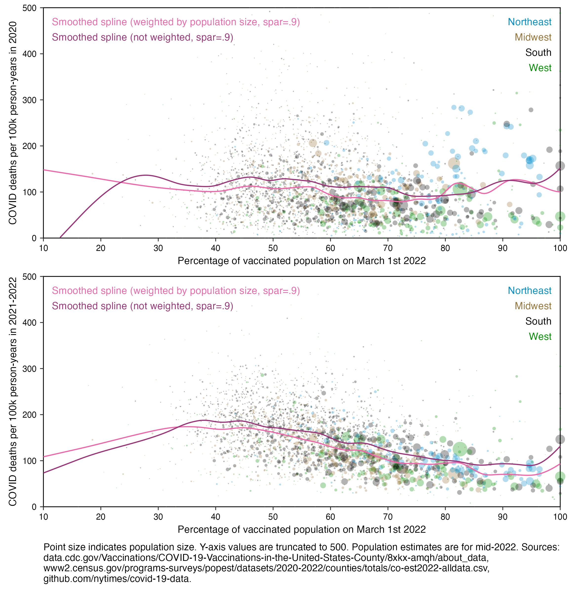
library(data.table);library(ggplot2)
# download.file("https://github.com/nytimes/covid-19-data/raw/master/us-counties-2020.csv","us-counties-2020.csv")
# download.file("https://github.com/nytimes/covid-19-data/raw/master/us-counties-2022.csv","us-counties-2022.csv")
# download.file("https://www2.census.gov/programs-surveys/popest/datasets/2020-2022/counties/totals/co-est2022-alldata.csv","uscountypop.csv")
# download manually:
# https://data.cdc.gov/Vaccinations/COVID-19-Vaccinations-in-the-United-States-County/8xkx-amqh/about_data
t=fread("COVID-19_Vaccinations_in_the_United_States_County_20240227.csv")
t=t[Date=="03/01/2022",c("FIPS","Administered_Dose1_Recip")]
names(t)=c("fips","vax")
t$fips=as.integer(t$fips)
pop=fread("uscountypop.csv")[,.(fips=as.integer(sprintf("%d%03d",STATE,COUNTY)),pop=POPESTIMATE2022)]
nyt=fread("us-counties-2022.csv")[date=="2022-12-31",.(fips,deaths)]
nyt2=fread("us-counties-2020.csv")[date=="2020-12-31",.(fips,deaths)]
nyt=merge(nyt,nyt2,by="fips")[,.(fips,deaths=(deaths.x-deaths.y)/2)]|>na.omit()
states=read.csv("https://github.com/cphalpert/census-regions/raw/master/us%20census%20bureau%20regions%20and%20divisions.csv")[,c(2,3)]
fips=read.csv("https://gist.githubusercontent.com/dantonnoriega/bf1acd2290e15b91e6710b6fd3be0a53/raw/11d15233327c8080c9646c7e1f23052659db251d/us-state-ansi-fips.csv",strip.white=T)[,c(3,2)]
states=merge(states,fips,by=1)
states=setNames(states[,2],states[,3])
me=merge(merge(t,nyt),pop)[vax>0]|>na.omit()
xy=data.frame(x=pmin(100,me$vax/me$pop*100),y=pmin(500,me$deaths/me$pop*1e5),pop=me$pop)
xy$size=pmax(.3,log(me$pop,20)-2.8)
xy$region=factor(states[sub("...$","",me$fips)],c("Northeast","Midwest","South","West"))
xstart=10;xend=100;xstep=10;ystart=0;yend=500;ystep=100
xbreak=seq(xstart,xend,xstep)
ybreak=seq(ystart,yend,ystep)
smooth1=as.data.frame(predict(smooth.spline(xy$x,xy$y,spar=.85,w=xy$pop/max(xy$pop)),seq(0,100,.1)))
smooth2=as.data.frame(predict(smooth.spline(xy,spar=.85),seq(0,100,.1)))
leg1=data.frame(x=11.4,y=seq(yend*.94,,-yend/15,2),label=c("Smoothed spline (weighted by population size, spar=.85)","Smoothed spline (not weighted, spar=.85)"))
leg2=data.frame(x=xend-1.4,y=seq(yend*.94,,-yend/15,4),label=levels(xy$region))
pal1=c("#ee66aa","#993377")
pal2=c(hcl(225,100,50),hcl(55,50,50),"black",hcl(135,100,50))
ggplot(xy,aes(x,y))+
geom_label(data=leg1,aes(x=x,y=y,label=label),fill=alpha("white",.85),label.r=unit(0,"lines"),label.padding=unit(.04,"lines"),label.size=0,size=2.3,hjust=0,color=pal1)+
geom_label(data=leg2,aes(x=x,y=y,label=label),fill=alpha("white",.85),label.r=unit(0,"lines"),label.padding=unit(.04,"lines"),label.size=0,size=2.3,hjust=1,color=pal2)+
geom_vline(xintercept=c(xstart,xend),linewidth=.25,lineend="square")+
geom_hline(yintercept=c(ystart,yend),linewidth=.25,lineend="square")+
geom_point(aes(color=region),stroke=0,size=xy$size,alpha=.3)+
geom_line(data=smooth1,color=pal1[1],linewidth=.35)+
geom_line(data=smooth2,color=pal1[2],linewidth=.35)+
labs(x="Percentage of vaccinated population on March 1st 2022",y="COVID deaths per 100k person-years in 2020",title="US counties: COVID deaths vs percentage of vaccinated population on March 1st 2022",caption="Point size indicates population size. Y-axis values are truncated to 500. Population estimates are for mid-2022. Sources:
data.cdc.gov/Vaccinations/COVID-19-Vaccinations-in-the-United-States-County/8xkx-amqh/about_data,
www2.census.gov/programs-surveys/popest/datasets/2020-2022/counties/totals/co-est2022-alldata.csv,
github.com/nytimes/covid-19-data.")+
scale_x_continuous(limits=c(xstart,xend),breaks=xbreak)+
scale_y_continuous(limits=c(ystart,yend),breaks=ybreak)+
scale_color_manual(values=pal2)+
coord_cartesian(clip="off",expand=F)+
theme(axis.text=element_text(size=5.5,color="black"),
axis.ticks=element_line(linewidth=.25),
axis.ticks.length=unit(.15,"lines"),
axis.title=element_text(size=6.5),
legend.position="none",
panel.grid=element_blank(),
panel.background=element_rect(fill="white"),
plot.margin=margin(.4,.8,.4,.4,"lines"),
plot.caption=element_text(size=6.3,hjust=0),
plot.title=element_text(size=7.3))
ggsave("1.png",width=5.2,height=3.1,dpi=450)
Ethical Skeptic wrote: "I cannot use Wonder 2017 and earlier because the numbers are boosted by the small county single-record effect. This is why Wonder 2018 and beyond is a new database (shows as a variance in your chart which does not actually exist), under that HIPAA constraint." [https://theethicalskeptic.substack.com/p/the-state-of-things-pandemic-week-706/comment/53292593]
He also wrote: "Please note however, that the provisional mortality figures for 2018-2024 are lower than the figures prior to 2018 because the NVSS suppresses county level data with fewer than nine records. We do not adjust 2018 and later mortality figures upward for this. Therefore, these excess mortality projections are lower than the reality as a result. For this reason, all inflection and DFT charts begin with the 2018 suppressed data, in order to avoid false 'downtrends' or inflections in the data." [https://theethicalskeptic.com/2024/04/04/the-state-of-things-pandemic-week-50-2023/]
1. What are the Assurance of Confidentiality constraints for vital statistics?
All statistics representing one through nine (1-9) persons are suppressed, in the provisional mortality online database for years 2018 and later.
Data reports for years 1989 and later must meet the NCHS data use restrictions. Vital statistics data are suppressed due to confidentiality constraints, in order to protect personal privacy. The term "Suppressed" replaces sub-national death counts, births counts, death rates and associated confidence intervals and standard errors, as well as corresponding population figures, when the figure represents one to nine (1-9) persons.
Ethical Skeptic may have been confused by the text which said that the deaths are suppressed "in the provisional mortality online database for years 2018 and later", as if there would have been a change in policy in the year 2018, even though I think it just means that the deaths are suppressed throughout the provisional mortality dataset which starts in 2018. Similar text is also included in the help article for the final mortality data in 1999-2020, which says that the suppression starts in the year 1999: "The term 'Suppressed' replaces death counts, births counts, death rates and associated confidence intervals and standard errors, as well as corresponding population figures, when the figure represents one to nine (1-9) persons for deaths in 1999 and later years." [https://wonder.cdc.gov/wonder/help/mcd.html]
CDC WONDER suppresses the number of deaths on rows with 1-9 deaths both in the datasets for provisional and final deaths, and I haven't noticed any differences in the suppression behavior between the datasets. For example I did a request for provisional mortality statistics here: https://wonder.cdc.gov/mcd-icd10-provisional.html. I grouped the results by residence county and month, I set the state of residence to Rhode Island, I set the year to 2020, and I set underlying cause to intentional self-harm (X60-X84). Rhode Island has 5 counties, but 2 of them had 1-9 deaths so the number of deaths was suppressed, but the suppressed counties were still included in the total number of deaths across all counties. And I got identical results when I did a similar request in the 1999-2020 final dataset:
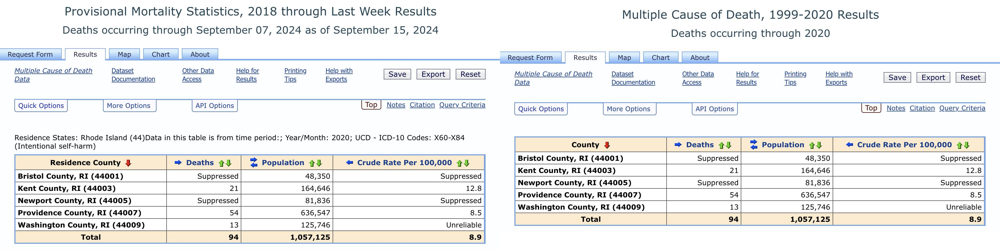
If there was some major change to the data suppression behavior in the dataset that starts in 2018, then I think it would be highlighted more clearly in the documentation.
Ethical Skeptic wrote that the reason why "Wonder 2018 and beyond is a new database" was because of the change to the suppression behavior. But actually it might be because the data from 2018 onwards includes more racial categories than the earlier data, and it includes weekly data in addition to monthly data, and it allows grouping the results by location of occurrence and not only location of residence. There's also a separate dataset for 1999-2004 which only includes 3 different race groups, which only includes yearly but not monthly data, and where Hispanic origin is not indicated:
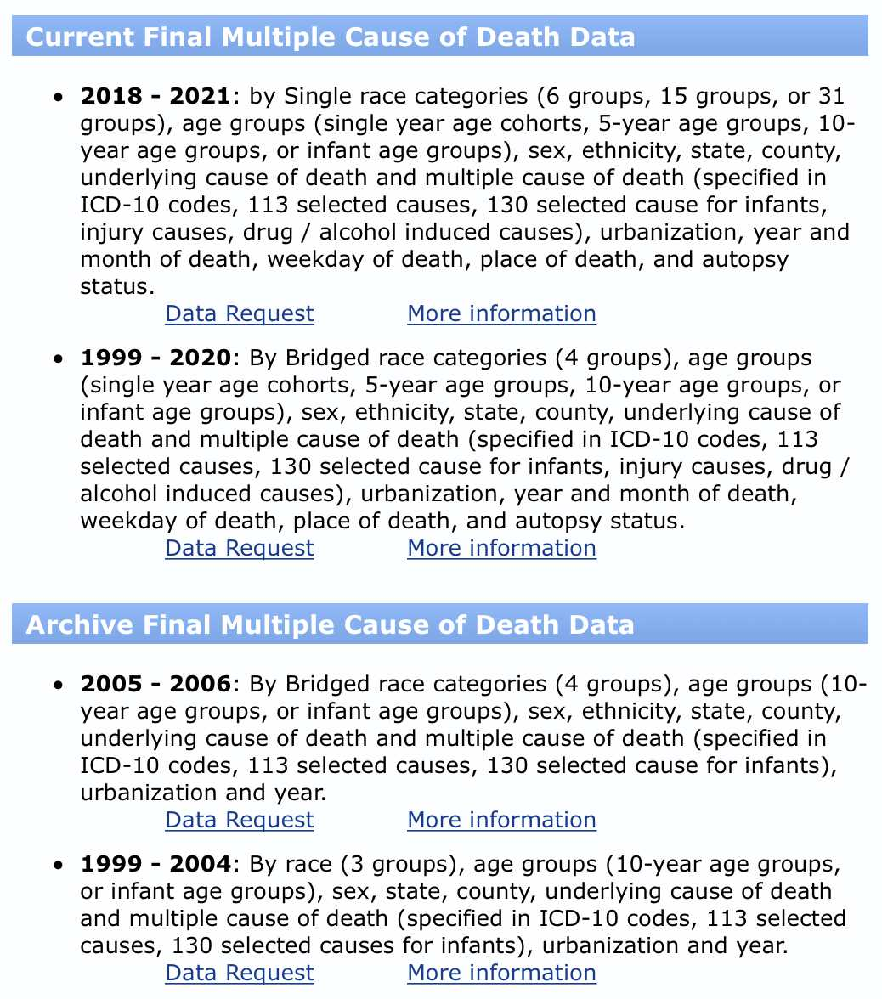
The natality data at CDC WONDER is also split off into different datasets for different ranges of years, which have different sets of racial categories and other available variables: [https://wonder.cdc.gov/natality.html]
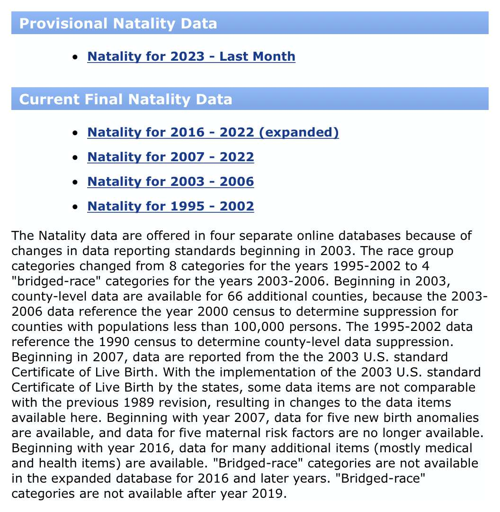
CDC has also published the mortality data at CDC WONDER as plain text files in a fixed-width field format: https://www.cdc.gov/nchs/data_access/vitalstatsonline.htm#Mortality_Multiple. There's CSV versions of the files here: https://www.nber.org/research/data/mortality-data-vital-statistics-nchs-multiple-cause-death-data. The files contain one line for each dead person, but the state and county of residence and occurrence are omitted for privacy reasons. At first I got slightly more deaths in the files than at CDC WONDER, but I got the same count of deaths after I excluded lines where the tape location 20 for resident status was not 4 (foreign residents). So for example in 2020 I got 602,350 deaths where the UCD started with the letter C, which was identical to the result I got from CDC WONDER regardless of whether I looked at the final or provisional dataset:
Ethical Skeptic posted the following plot where there was a spike in pregnancy-associated deaths that coincided with the Delta wave, but he suggested that it might have been caused by vaccines instead of COVID. He also got a steadily decreasing number of excess deaths in 2022-2023, but he suggested it might have been because the birth rate was reduced by vaccines: [https://x.com/EthicalSkeptic/status/1778268480619331786]
Not particularly good news here.
1. We don't use the 'placental disorder unspecified' like the UK.
2. Expanding query to all Maternal deaths O00-O99 for Pregnancy, Childbirth & Puerperium reveals
a. large vaccine impact b. distressing news about implied childbirth rate
Ethical Skeptic told me that in these plots which display weekly deaths from 2018 onwards, he fits the baseline using only data from 2018 and 2019. He said that his baseline is linear but it's somehow different from a regular least squares linear regression, but he didn't explain how it's different. [https://theethicalskeptic.substack.com/p/the-state-of-things-pandemic-week-706/comment/53237226]
The year 2019 had an unusually low number of deaths, so normally if you fit a linear baseline against only data from 2018 and 2019, the slope of the baseline is pointed too much downwards. However in the case of deaths with an underlying cause related to pregnancy and childbirth, 2019 actually had a higher number of deaths than 2018, so in the plot below when I fitted a linear baseline against deaths from 2018 and 2019 only, the slope of the baseline was pointed too much upwards compared to a longer-term linear trend. So it probably also explains why Ethical Skeptic's plot had a steadily decreasing trend in excess deaths in 2022-2023. But when I used a 2013-2019 baseline instead, my excess deaths remained roughly flat in 2022-2023:
In the previous plot the biggest spike in deaths was in the third quarter of 2021, so it's probably associated with the Delta wave in August-September 2021. Southeastern states had the highest excess mortality from all causes during the Delta wave, but from plot below which shows excess mortality for causes related to childbirth, you can see that in the third quarter of 2021 the excess mortality was by far the highest in southern states. But in northeastern states which had a high percentage of vaccinated people, the excess mortality in 2021 was by far the lowest:
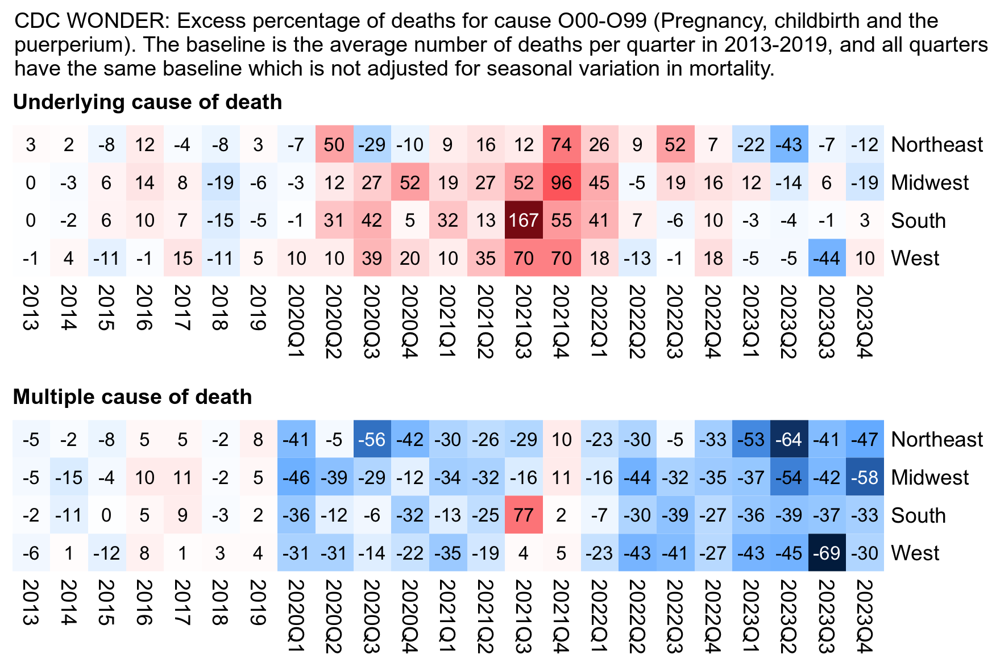
library(colorspace)
t=read.csv("http://sars2.net/f/wonderpregnancyregionquarter.csv")
y=read.csv("http://sars2.net/f/wonderpregnancyregionyearly.csv")|>subset(year%in%2013:2019)
dim=data.frame(cause=y$cause,region=factor(y$region,unique(y$region)),date=y$year)
dim=rbind(dim,data.frame(cause=t$cause,region=t$region,date=paste0(t$year,"Q",t$quarter)))
a=tapply(c(y$dead,t$dead),dim,sum)
for(i in 1:2){
m=a[i,,]
m[,1:7]=m[,1:7]/4
ave=rowMeans(m[,1:7])
disp=round((m/ave-1)*100)
m=(m-ave)/ifelse(m>ave,ave,m)
maxcolor=2
pal=hex(HSV(c(210,210,210,210,0,0,0,0,0),c(1,.8,.6,.3,0,.3,.6,.8,1),c(.3,.65,1,1,1,1,1,.65,.3)))
pheatmap::pheatmap(m,filename=paste0("i",i,".png"),display_numbers=disp,
cluster_rows=F,cluster_cols=F,legend=F,cellwidth=18,cellheight=18,fontsize=9,fontsize_number=8,
border_color=NA,na_col="gray90",
number_color=ifelse(abs(m)>maxcolor*.6,"white","black"),
breaks=seq(-maxcolor,maxcolor,,256),
colorRampPalette(pal)(256))
}
system("f=i1.png;w=`identify -format %w $f`;convert -interline-spacing -2 -gravity northwest -font Arial -pointsize 38 -size $[w-44]x \\( -splice 22x14 caption:'CDC WONDER: Excess percentage of deaths for cause O00-O99 (Pregnancy, childbirth and the puerperium). The baseline is the average number of deaths per quarter in 2013-2019, and all quarters have the same baseline which is not adjusted for seasonal variation in mortality.' \\) -pointsize 38 -font Arial-Bold \\( -splice 22x14 caption:'Underlying cause of death' \\) i1.png \\( -splice 22x14 caption:'Multiple cause of death' \\) i2.png -append 1.png")
If you look at the bottom half of the plot above which shows excess MCD deaths, for some reason the excess MCD deaths remained far below zero for most of 2020-2023. I don't know why, but there might have been some change to coding practices. I don't think I made any error in my plot either, because I got the similar results when I looked at yearly data in the whole US, where 2018 and 2019 had a much higher number of MCD deaths than 2020:
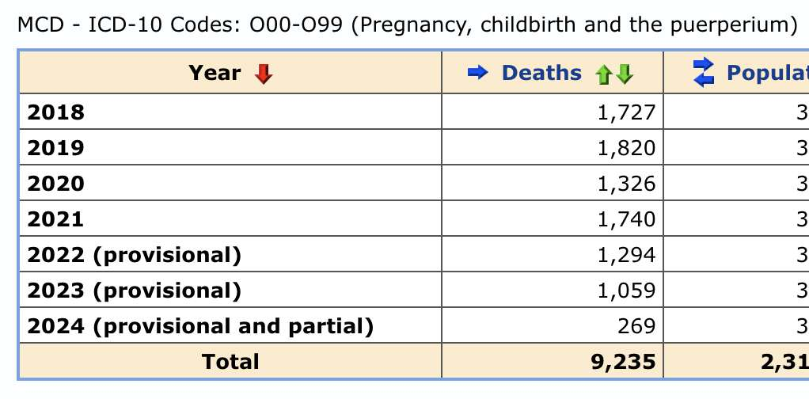
The plot below shows that in the southern states which had a high number of pregnancy-associated deaths in the third quarter of 2021, deaths with UCD COVID also accounted for a large percentage of all deaths in ages 15-44 in the third quarter of 2021. I included both sexes in the plot, because females alone would've had some months with less than 10 deaths per census region so the number of deaths would've been suppressed:
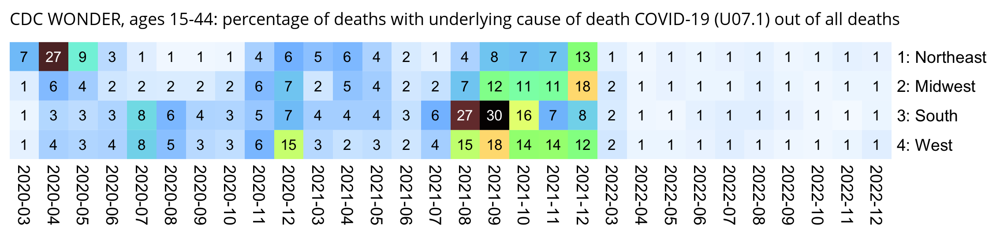
The plot below also shows that in the third quarter of 2021, the percentage of vaccinated people was the highest in the northeastern states which had a low percentage of excess deaths associated with pregnancy, but the percentage of vaccinated people was much lower in the southern states which had a high percentage of excess deaths associated with pregnancy (R code). So if the deaths were caused by the vaccines, then why wasn't there a higher percentage of excess deaths in the states where more people were vaccinated?
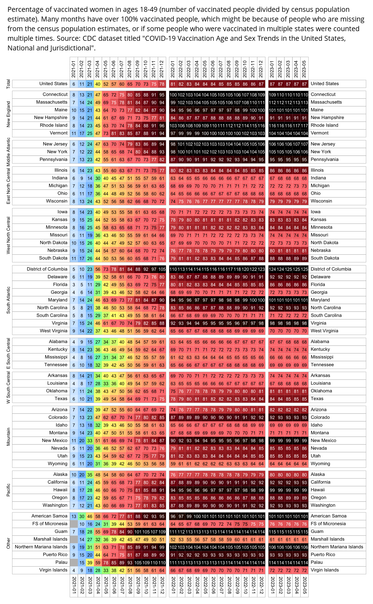
In Ethical Skeptic's plot for deaths associated with childbirth, there was a steady decrease in excess deaths in 2022 and 2023, but I think it's because he fitted his baseline using only data from 2018 and 2019 so the slope of his baseline was pointed too much upwards. He speculated that the decrease in excess deaths could've been because vaccines had caused a decrease in birth rate instead, but I don't think he's right, because in my next plot which shows the monthly number of births at CDC WONDER, the excess percentage of births relative to the prepandemic trend was about -3% in 2020 and 0% in 2021, but in 2022 and 2023 the number of births was actually above the trend:
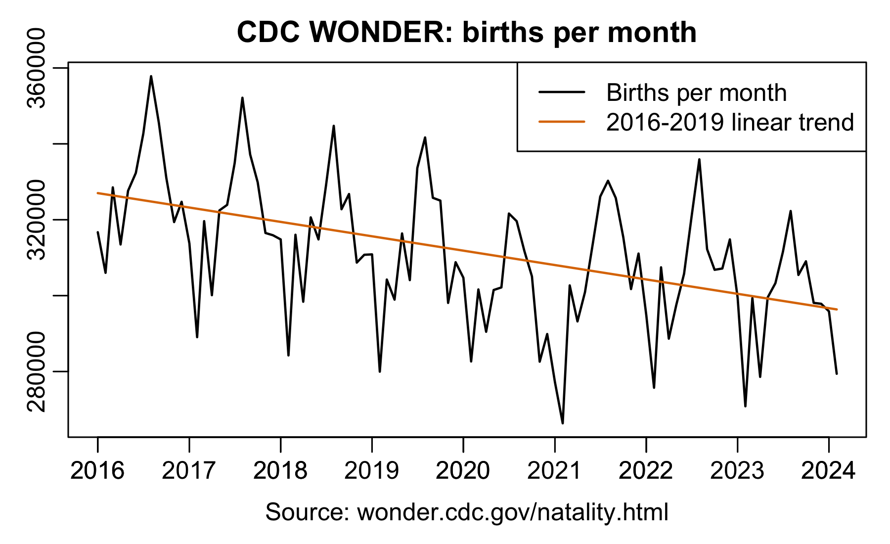
t=read.csv("http://sars2.net/f/wondernatality.csv")
t$date=as.Date(paste0(t$year,"-",t$month,"-16"))
t$born=t$born/lubridate::days_in_month(t$date)
xstart=as.Date("2016-1-1");xend=as.Date("2024-1-1")
xbreak=seq(xstart,xend,"6 month")
xlab=c(rbind(NA,2016:2023),NA)
t=t[t$date>=xstart&t$date<xend,]
ylim=extendrange(c(t$born,t$trend))
ybreak=pretty(range(t$born))
t$trend=predict(lm(born~date,subset(t,date>=xstart&date<as.Date("2020-1-1"))),t)
yearly=aggregate(t[,c("born","trend")],t[,1,drop=F],sum)
yearly=sprintf("%.1f%%",(yearly$born/yearly$trend-1)*100)
png("1.png",1850,1100,res=300)
par(mar=c(4.2,3,2.1,.8),mgp=c(0,.6,0),adj=0,lend="square")
tit="CDC WONDER: monthly births divided by number of days in month"
sub="Source: wonder.cdc.gov/natality.html. The gray numbers show the yearly
excess percent relative to the baseline."
leg=c("Births per month","2016-2019 linear trend")
plot(t$date,t$born,type="n",main=tit,xlab=NA,ylab=NA,xaxs="i",yaxs="i",yaxt="n",xaxt="n",ylim=ylim,xlim=c(xstart,xend),cex.main=1)
mtext(text=sub,side=1,line=2.7,adj=0)
axis(1,at=xbreak,labels=xlab,tck=0,padj=-.6)
axis(2,at=ybreak,labels=paste0(ybreak/1e3,"k"),las=1)
abline(v=seq(xstart,xend,"year"),col="gray90",lwd=1)
lines(t$date,t$born,lwd=1.5)
points(t$date,t$born,pch=20,cex=.6)
lines(t$date,t$trend,type="l",lty=2,lwd=1.5)
text(xbreak[c(F,T)],ylim[1],yearly,col="gray60",hjust=.5,offset=.4,pos=3,cex=.9)
rect(xstart,ylim[1],xend,ylim[2],lwd=1)
legend("topright",legend=leg,lty=c(1,2),lwd=1.5)
dev.off()
In Ethical Skeptic's plot the ASMR was the lowest in 2021, but the ASMR increased from 2021 to 2022, from 2022 to 2023, and from 2023 to 2024. However in the plot below where I used data from CDC WONDER, I wasn't able to reproduce the increase in ASMR after 2021, because got lower ASMR in 2022 and 2023 than 2021 regardless of whether I looked at only malignant neoplasms or all neoplasms:
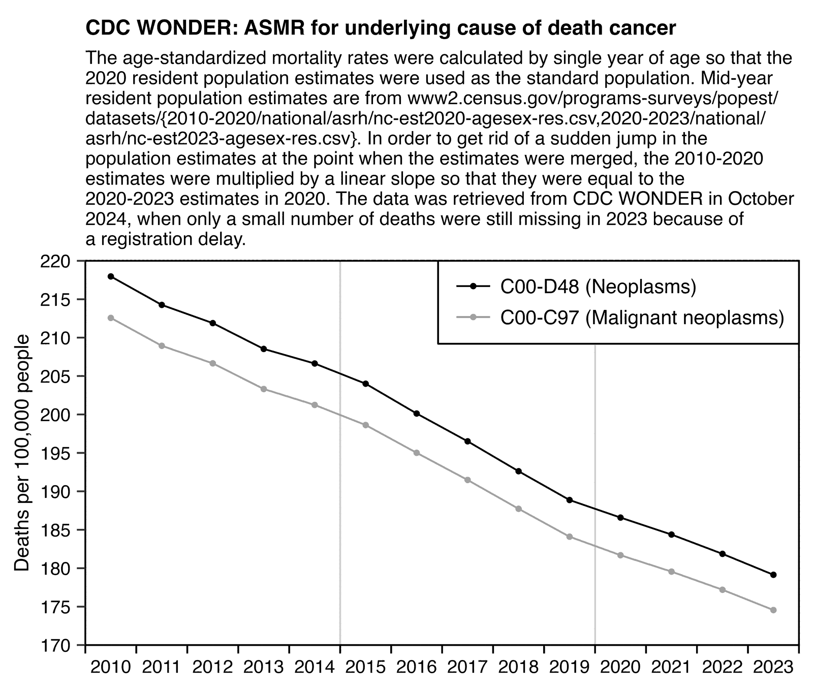
library(data.table);library(ggplot2)
t=fread("http://sars2.net/f/wondercanceryearly.csv")[,cause:=sub("^UCD ","",cause)]
pop=fread("http://sars2.net/f/uspopdead.csv")[,dead:=NULL]
t=merge(t,pop)
t=merge(pop[year==2020,.(age,std=pop/sum(pop))],t)
p=t[year%in%2010:2023,.(asmr=sum(dead/pop*std)*1e5),.(cause,year)]
p[,cause:=factor(cause,sort(unique(p$cause),T))]
cand=c(sapply(c(1,2,5),\(x)x*10^c(-10:10)))
ymin=min0(p$asmr);ymax=max0(p$asmr)
ystep=cand[which.min(abs(cand-(ymax-ymin)/6))]
ystart=ystep*floor(ymin/ystep)
yend=ystep*ceiling(ymax/ystep)
ybreak=seq(ystart,yend,ystep)
xstart=2010;xend=2023
xbreak=seq(xstart-.5,xend+.5,.5)
xlab=c(rbind("",xstart:xend),"")
sub="The age-standardized mortality rates were calculated by single year of age so that the
2020 resident population estimates were used as the standard population. Mid-year
resident population estimates are from www2.census.gov/programs-surveys/popest/
datasets/{2010-2020/national/asrh/nc-est2020-agesex-res.csv,2020-2023/national/
asrh/nc-est2023-agesex-res.csv}. In order to get rid of a sudden jump in the
population estimates at the point when the estimates were merged, the 2010-2020
estimates were multiplied by a linear slope so that they were equal to the
2020-2023 estimates in 2020. The data was retrieved from CDC WONDER in October
2024, when only a small number of deaths were still missing in 2023 because of
a registration delay."
ggplot(p,aes(x=year,y=asmr,color=cause))+
geom_vline(xintercept=seq(xstart-.5,xend+.5,5),linewidth=.3,color="gray80")+
geom_vline(xintercept=c(xstart-.5,xend+.5),linewidth=.3,lineend="square")+
geom_hline(yintercept=c(ystart,yend),linewidth=.3,lineend="square")+
geom_line(linewidth=.3)+
geom_point(size=.4)+
labs(x=NULL,y="Deaths per 100,000 people",title="CDC WONDER: ASMR for underlying cause of death cancer",subtitle=sub)+
scale_x_continuous(limits=c(xstart-.5,xend+.5),breaks=xbreak,labels=xlab)+
scale_y_continuous(limits=c(ystart,yend),breaks=ybreak)+
scale_color_manual(values=c("black","gray60"))+
coord_cartesian(clip="off",expand=F)+
theme(axis.text=element_text(size=6.5,color="black"),
axis.ticks=element_line(linewidth=.3),
axis.ticks.x=element_line(color=alpha("black",c(1,0))),
axis.ticks.length=unit(3,"pt"),
axis.title=element_text(size=7),
legend.background=element_blank(),
legend.box.background=element_rect(fill="white",color="black",linewidth=.3),
legend.box.just="left",
legend.justification=c(1,1),
legend.key.width=unit(15,"pt"),
legend.key.height=unit(11,"pt"),
legend.key=element_rect(fill=alpha("white",0)),
legend.margin=margin(-2,5,4,5),
legend.position=c(1,1),
legend.spacing.x=unit(.15,"lines"),
legend.text=element_text(size=7,vjust=.5),
legend.title=element_blank(),
panel.background=element_blank(),
panel.grid=element_blank(),
plot.margin=margin(5,5,5,5),
plot.subtitle=element_text(size=6.6,margin=margin(,,4)),
plot.title=element_text(size=7.4,face=2,margin=margin(2,,4)))
ggsave("1.png",width=4,height=3.4,dpi=400*4)
system("magick 1.png -resize 25% 1.png")
In the plot above I used population estimates that I downloaded from the website of the US Census Bureau, because CDC WONDER doesn't return population estimates for ages 85 and above and it still uses 2022 population estimates for 2023. I used vintage 2023 estimates for 2020-2023 and vintage 2020 estimates for 2010-2019.
In the next plot I used population estimates returned by CDC WONDER and I calculated ASMR by 10-year age groups and not by single year of age. CDC WONDER doesn't return population sizes for the oldest age groups when the results are grouped by 5-year age groups or by single year of age, but when the results are grouped by 10-year age groups then the oldest age group is 85+ which does have population sizes available. So therefore Ethical Skeptic might have calculated the ASMR by 10-year age groups in case he simply relied on the population sizes returned by CDC WONDER.
As of October 2024, CDC WONDER still used 2022 population estimates for 2022. It results in the CMR of elderly age groups being overestimated in 2023, because the population sizes of elderly age groups were higher in 2023 than 2022, and therefore it also results in the total ASMR being overestimated in 2023.
However even when I used the population sizes returned by CDC WONDER, I still wasn't able to reproduce the plot by Ethical Skeptic, because I got lower ASMR in 2022 and 2023 than 2021 regardless of whether I looked at UCD malignant neoplasms or UCD neoplasms:
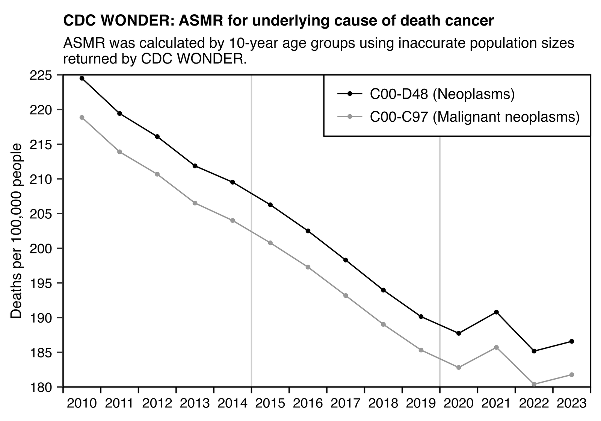
library(data.table);library(ggplot2)
t=fread("http://sars2.net/f/wondercanceryearlyten.csv")
t=merge(t,t[year==2020&cause==cause[1],.(age,std=pop/sum(pop))])
p=t[year%in%2010:2023,.(asmr=sum(dead/pop*std)*1e5),.(cause,year)]
p[,cause:=factor(cause,sort(unique(p$cause),T))]
cand=c(sapply(c(1,2,5),\(x)x*10^c(-10:10)))
ymin=min0(p$asmr);ymax=max0(p$asmr)
ystep=cand[which.min(abs(cand-(ymax-ymin)/6))]
ystart=ystep*floor(ymin/ystep)
yend=ystep*ceiling(ymax/ystep)
ybreak=seq(ystart,yend,ystep)
xstart=2010;xend=2023
xbreak=seq(xstart-.5,xend+.5,.5)
xlab=c(rbind("",xstart:xend),"")
ggplot(p,aes(x=year,y=asmr,color=cause))+
geom_vline(xintercept=seq(xstart-.5,xend+.5,5),linewidth=.3,color="gray80")+
geom_vline(xintercept=c(xstart-.5,xend+.5),linewidth=.3,lineend="square")+
geom_hline(yintercept=c(ystart,yend),linewidth=.3,lineend="square")+
geom_line(linewidth=.3)+
geom_point(size=.4)+
labs(x=NULL,y="Deaths per 100,000 people",title="CDC WONDER: ASMR for underlying cause of death cancer",subtitle="ASMR was calculated by 10-year age groups using inaccurate population sizes returned by CDC WONDER."|>stringr::str_wrap(82))+
scale_x_continuous(limits=c(xstart-.5,xend+.5),breaks=xbreak,labels=xlab)+
scale_y_continuous(limits=c(ystart,yend),breaks=ybreak)+
scale_color_manual(values=c("black","gray60"))+
coord_cartesian(clip="off",expand=F)+
theme(axis.text=element_text(size=6.5,color="black"),
axis.ticks=element_line(linewidth=.3),
axis.ticks.x=element_line(color=alpha("black",c(1,0))),
axis.ticks.length=unit(3,"pt"),
axis.title=element_text(size=7),
legend.background=element_blank(),
legend.box.background=element_rect(fill="white",color="black",linewidth=.3),
legend.box.just="left",
legend.justification=c(1,1),
legend.key.width=unit(15,"pt"),
legend.key.height=unit(11,"pt"),
legend.key=element_rect(fill=alpha("white",0)),
legend.margin=margin(-2,5,4,5),
legend.position=c(1,1),
legend.spacing.x=unit(.15,"lines"),
legend.text=element_text(size=7,vjust=.5),
legend.title=element_blank(),
panel.background=element_blank(),
panel.grid=element_blank(),
plot.margin=margin(5,5,5,5),
plot.subtitle=element_text(size=7,margin=margin(,,4)),
plot.title=element_text(size=7.3,face=2,margin=margin(2,,4)))
ggsave("1.png",width=4,height=2.8,dpi=400*4)
system("magick 1.png -resize 25% 1.png")
In the plot below I calculated ASMR using the same year 2000 US standard population that was used in the Statista dataset. [https://seer.cancer.gov/stdpopulations/stdpop.19ages.html] In the yellow line where I calculated ASMR by 10-year age groups and I used the population sizes returned by CDC WONDER, I was now able to reproduce the historical ASMR from 1999 up to 2017 exactly or nearly exactly. But my yellow line started to diverge from Ethical Skeptic's plot from 2018 onwards, so I guess he took data up to 2017 from the Statista dataset but he calculated ASMR from 2018 onwards himself using different methodology. In the red line I used a more accurate way to calculate ASMR by single year of age where I took the population estimates from the website of the US Census Bureau. But again I got lower ASMR in 2023 than 2021 for the red and yellow lines, and I was still not able to reproduce the increase in ASMR that Ethical Skeptic got from 2021 onwards:
In the plot above my yellow line has a fairly large jump up between 2020 and 2021, but it's because CDC WONDER uses population estimates based on the 2010 census for 2020 but population estimates based on the 2020 census for 2021, and the population estimates of elderly age groups were reduced by several percent in the population estimates that are based on the 2020 census:
t=fread("http://sars2.net/f/wondercanceryearlyten.csv")
t[cause%like%"Mal"&year==2020&age==85,pop]
# 6658420 (population size of ages 85+ in 2020 returned by CDC WONDER)
old=fread("https://www2.census.gov/programs-surveys/popest/datasets/2010-2020/national/asrh/nc-est2020-agesex-res.csv")
old[SEX==0&AGE%in%85:100,sum(POPESTIMATE2020)]
# 6658420 (population estimate based on the 2010 census; same as CDC WONDER)
new=fread("https://www2.census.gov/programs-surveys/popest/datasets/2020-2023/national/asrh/nc-est2023-agesex-res.csv")
new[SEX==0&AGE%in%85:100,sum(POPESTIMATE2020)]
# 6061016 (estimate based on the 2020 census; about 9% lower than the estimate based on the 2010 census)
But anyway, the reason why Ethical Skeptic got the increase in ASMR since 2021 might be if applied some of his usual adjustments to his plot, like his "excess MCD normalization" method where he adds in a gradually increasing proportion of MCD deaths to his plot in addition to UCD deaths. In fact I have only seen him apply the excess MCD normalization method to plots that show deaths with UCD cancer, so it's likely he used it here as well. And he may have also added in deaths that he estimated to be missing because of a registration delay, because he got even higher ASMR in 2024 than 2023.
In the next plot I simply used ASMR values returned by CDC WONDER instead of calculating ASMR myself, but the values returned by CDC WONDER appear to be the same as the ASMR values I calculated myself by 10-year age groups using the population sizes returned by CDC WONDER. The ASMR values returned by CDC WONDER match Ethical Skeptic's plot from 1995 to 2017. But from 2018 onwards he seems to have used his own undocumented methodology to calculate ASMR, even though he could've just used the ASMR values returned by CDC WONDER to be consistent with the older data (or he could've included one line for the ASMR values returned by CDC WONDER and another line for his own ASMR values):
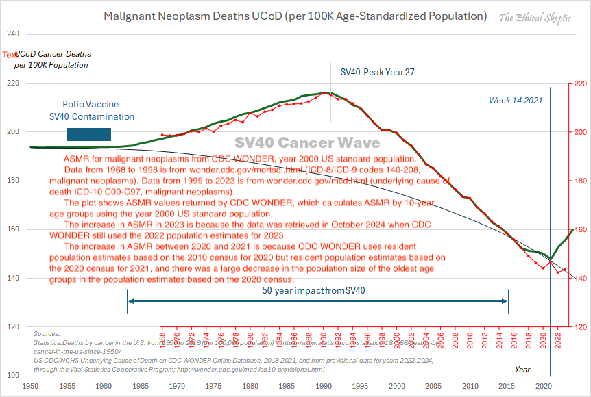
Ethical Skeptic's plot seems to imply that the SV40 virus would've been the primary determinant of the rise and fall in cancer mortality in the United States since the 1950s. But the plots below show that the increase in cancer mortality up to around 1990 seems to have been mainly driven by lung cancer, because the ASMR of other types of cancer mostly decreased or remained flat from 1950 to 1990. And a large part of the decrease in cancer ASMR since 1990 seems to also be due to a decrease in lung cancer. So did the SV40 virus disproportionately cause lung cancer as opposed to other types of cancer? [https://www.cancer.org/content/dam/cancer-org/research/cancer-facts-and-statistics/annual-cancer-facts-and-figures/2024/2024-cancer-facts-and-figures-acs.pdf]
So in summary here's my overall conclusion about Ethical Skeptic's plot, adapted from the lady detective:
One of the terms invented by Ethical Skeptic is a "paltered" baseline, which means that 2020 or later years are included in the fitting period of a baseline. The baseline that OWID uses to calculate excess deaths is fitted against data from 2015 to 2019. [https://ourworldindata.org/excess-mortality-covid#how-is-excess-mortality-measured] However for some reason in this tweet Ethical Skeptic said that the baseline used by OWID was "paltered" even though it doesn't fit his usual definition of what the term paltered means: [https://twitter.com/EthicalSkeptic/status/1720267405883027598]
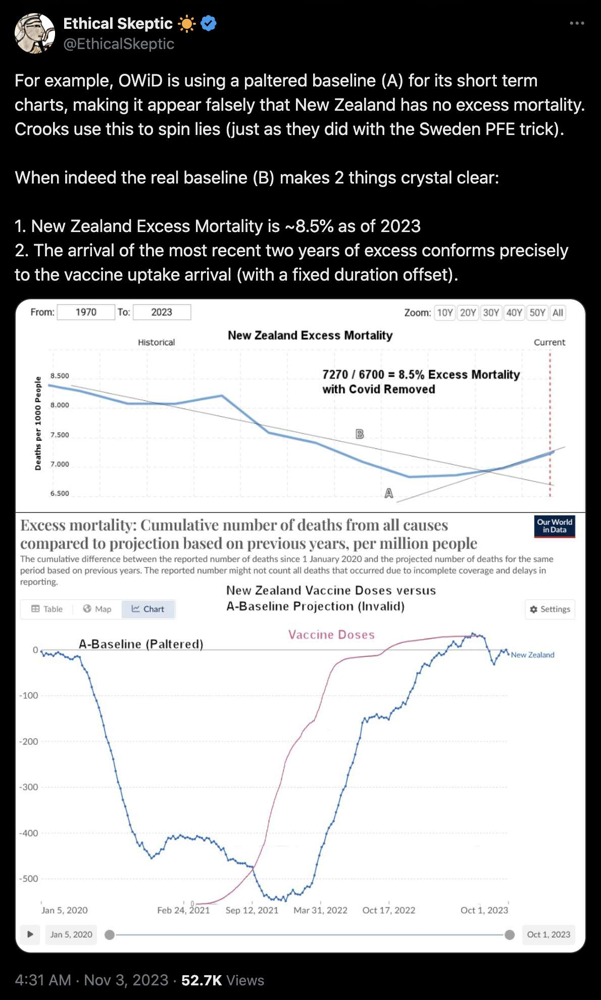
The y-axis of Ethical Skeptic's plot says "deaths per 1000 people" but the values on the y-axis are over 6,000, so I don't know if it's supposed to mean deaths per million people.
In the tweet above for some reason Ethical Skeptic calculated CMR for segments of 5 years grouped together. His A baseline roughly looks like it's fitted against the last 5-year segment displayed in the plot. But OWID's baseline is not even calculated based on CMR but based on the raw number of deaths. His plot would've been more clear if it would've showed the CMR for each individual year and not for the 5-year blocks, and if he would've calculated the 2015-2019 linear trend in deaths based on the raw number of deaths and then converted it to CMR by dividing it by the population size, so then it would've been closer to the baseline that is actually used by OWID.
I wasn't able to reproduce Ethical Skeptic's plot perfectly, but I think he used a method similar to this to calculate CMR for the 5-year blocks:
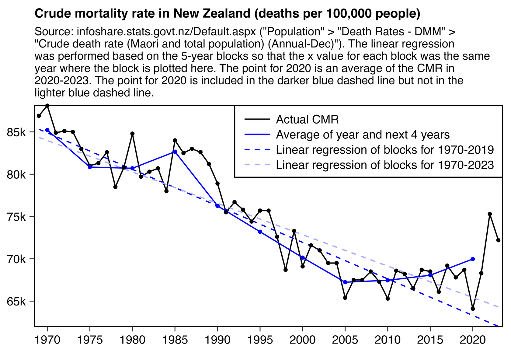
library(data.table);library(ggplot2)
t=fread("http://sars2.net/f/nzcmr.csv")
p=t[,.(x=year,y=cmr,z="Actual CMR")]
v=t[,.(y=mean(cmr),z="Average of year and next 4 years"),.(x=(year)%/%5*5)]
lin1=p[,.(x,y=v[x>=1970,predict(lm(y~x),p)],z="Linear regression of blocks for 1970-2023")]
lin2=p[,.(x,y=v[x>=1970&x<=2015,predict(lm(y~x),p)],z="Linear regression of blocks for 1970-2019")]
p=rbind(p,v,lin1,lin2)
p$y=100*p$y
xstart=1969;xend=2023
p=p[x>=xstart&x<=xend]
ybreak=pretty(p$y);ystart=min(p$y);yend=max(p$y)
color=c("black","blue","#77f","#ccf")
ggplot(p,aes(x,y))+
geom_vline(xintercept=c(xstart-.5,xend+.5),linewidth=.3,lineend="square")+
geom_hline(yintercept=c(ystart,yend),linewidth=.3,lineend="square")+
geom_line(aes(color=z,linetype=z),linewidth=.4)+
geom_point(data=p[!grep("Linear",z)],aes(color=z),size=.5,show.legend=F)+
labs(title="Crude mortality rate in New Zealand (deaths per 100,000 people)",subtitle=paste0("Source: infoshare.stats.govt.nz/Default.aspx
(\"Population\" > \"Death Rates - DMM\" > \"Crude death rate (Maori and total population) (Annual-Dec)\"). The linear regression was performed based on the 5-year blocks so that the x value for each block was the same year where the block is plotted here. The point for 2020 is an average of the CMR in 2020-2023. The point for 2020 is included in the darker blue dashed line but not in the lighter blue dashed line.")|>stringr::str_wrap(88),x=NULL,y=NULL)+
scale_x_continuous(limits=c(xstart-.5,xend+.5),breaks=seq(1900,2100,5))+
scale_y_continuous(limits=c(ystart,yend),breaks=ybreak,labels=\(x)ifelse(x>=1e3,paste0(x/1e3,"k"),x))+
scale_color_manual(values=color)+
scale_linetype_manual(values=c(1,1,2,2))+
coord_cartesian(clip="off",expand=F)+
theme(axis.text=element_text(size=7,color="black"),
axis.ticks=element_line(linewidth=.3),
axis.ticks.length=unit(3,"pt"),
legend.direction="vertical",
legend.background=element_rect(fill=alpha("white",.8),color="black",linewidth=.3),
legend.key.height=unit(9,"pt"),
legend.key.width=unit(15,"pt"),
legend.key=element_rect(fill="white"),
legend.margin=margin(-2,5,3,4),
legend.justification=c(1,1),
legend.position=c(1,1),
legend.spacing.x=unit(1.5,"pt"),
legend.text=element_text(size=7),
legend.title=element_blank(),
panel.grid.major=element_blank(),
panel.background=element_rect(fill="white"),
plot.margin=margin(3,5,4,4),
plot.subtitle=element_text(size=6.7,margin=margin(0,0,4,0)),
plot.title=element_text(size=7.5,face="bold",margin=margin(2,0,4,0)))
ggsave("0.png",width=4.2,height=2.9,dpi=400*4)
system("magick 0.png -resize 25% 1.png")
In Ethical Skeptic's plot the B baseline looks closer to my lighter blue dashed line which was fitted against the 5-year blocks for 1970-2023 than my darker blue dashed line which was fitted against the 5-year blocks for 1970-2019, or maybe the B baseline is somewhere in between my two baselines. I don't know if Ethical Skeptic just drew the B baseline by hand, but it doesn't look steep enough to be fitted against data from 1970-2019 but it looks more like it's fitted against data up to the present in his plot. (Which is not really an important point, but it would be ironic if he was simultaneously guilty of paltering his own baseline while he falsely accused OWID of paltering.)
But in any case, the age structure of the New Zealand population has completely changed since the 1970s, so it doesn't make any sense to just use a linear baseline for CMR that starts from the 70s, because the actual trend in CMR is curved due to the changing age structure. Here I only had population data that went back to 1992, but the change since the 1970s would've been even more dramatic:
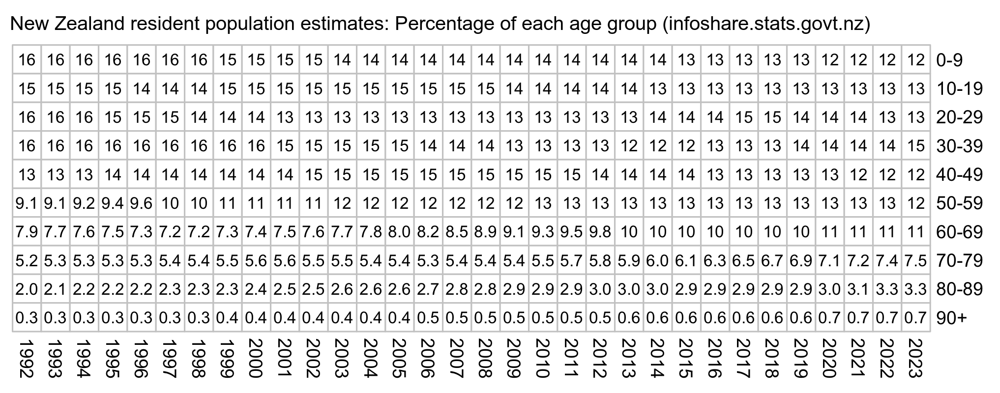
library(data.table)
agecut=\(x,y)cut(x,c(y,Inf),paste0(y,c(paste0("-",y[-1]-1),"+")),T,F)
t=fread("http://sars2.net/f/nzpopdead.csv")
m=t[,.(pop=sum(pop,na.rm=T)),.(age=agecut(age,0:9*10),year)][year>=1992,xtabs(pop~age+year)]
m=t(t(m)/colSums(m))*100
maxcolor=max(m)
disp=m;disp[]=sprintf("%.*f",ifelse(m>10,0,1),m)
pheatmap::pheatmap(m,filename="1.png",display_numbers=disp,
cluster_rows=F,cluster_cols=F,legend=F,cellwidth=14,cellheight=14,fontsize=9,fontsize_number=8,
border_color="#cccccc",number_color="black","white")
system("w=`identify -format %w 1.png`;pad=20;magick -pointsize 42 -font Arial \\( -size $[w-pad] caption:'New Zealand resident population estimates: Percentage of each age group' -splice 20x24 \\) 1.png -append 1.png")
Out of the three baselines in the next plot, I think the green baseline is the most accurate but it's far above the actual CMR in 2020:
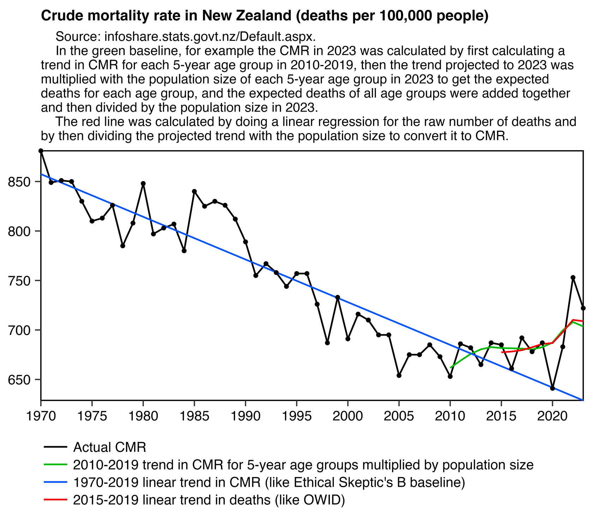
library(data.table);library(ggplot2);library(stringr)
t=fread("http://sars2.net/f/nzpopdead.csv")
a=t[,.(dead=sum(dead),pop=sum(pop,na.rm=T)),.(age=pmin(age,95),year)]
nzcmr=fread("http://sars2.net/f/nzcmr.csv")
p=nzcmr[year>=1970,.(x=year,y=cmr,z="Actual CMR")]
lm=a[year%in%2010:2019,.(year=2010:2023,trend=predict(lm(dead/pop~year),.(year=2010:2023))),age]
p=rbind(p,merge(a,lm)[,.(dead=sum(trend*pop),pop=sum(pop)),year][,.(y=dead/pop*1e5,z="2010-2019 trend in CMR by single year of age multiplied by population size"),.(x=year)])
p=rbind(p,nzcmr[year%in%1970:2019,.(x=1970:2023,y=predict(lm(cmr~year),.(year=1970:2023)),z="1970-2019 linear trend in CMR (like Ethical Skeptic's B baseline)")])
owid=a[,.(dead=sum(dead)),year][year%in%2015:2019,.(year=2010:2023,owid=predict(lm(dead~year),.(year=2010:2023)))]
p=rbind(p,merge(a[,.(pop=sum(pop)),year],owid)[,.(x=year,y=owid/pop*1e5,z="2015-2019 linear trend in deaths (like OWID)")])
p[,z:=factor(z,unique(z))]
xstart=1970;xend=2023
p=p[x>=xstart&x<=xend]
ystart=min(p$y);yend=max(p$y);ybreak=pretty(p$y)
color=c("black","#00bb00","#0055ff","#ee0000",hsv(30/36,1,.8))
cap=" Source: infoshare.stats.govt.nz."
cap=paste0(cap,"\n ","In the green baseline, for example the CMR in 2023 was calculated by first calculating a trend in CMR for each age in 2010-2019, then the trend projected to 2023 was multiplied with the population size of each age in 2023 to get the expected deaths for each age group, and the expected deaths of all age groups were added together and then divided by the population size in 2023."|>str_wrap(90))
cap=paste0(cap,"\n ","The red line was calculated by doing a linear regression for the raw number of deaths and by then dividing the projected trend with the population size to convert it to CMR."|>str_wrap(90))
ggplot(p,aes(x,y))+
geom_vline(xintercept=c(xstart-.5,xend+.5),linewidth=.25,lineend="square")+
geom_hline(yintercept=c(ystart,yend),linewidth=.25,lineend="square")+
geom_line(aes(color=z),linewidth=.35)+
geom_point(data=p[grep("Actual",z)],aes(color=z),size=.5,show.legend=F)+
labs(title="Crude mortality rate in New Zealand (deaths per 100,000 people)",subtitle=cap,x=NULL,y=NULL)+
scale_x_continuous(limits=c(xstart-.5,xend+.5),breaks=seq(1900,2100,5))+
scale_y_continuous(limits=c(ystart,yend),breaks=ybreak)+
scale_color_manual(values=color)+
coord_cartesian(clip="off",expand=F)+
theme(axis.text=element_text(size=7,color="black"),
axis.ticks=element_line(linewidth=.25),
axis.ticks.length=unit(3,"pt"),
legend.direction="vertical",
legend.key.height=unit(9,"pt"),
legend.key.width=unit(15,"pt"),
legend.key=element_rect(fill="white"),
legend.box.spacing=unit(2,"pt"),
legend.margin=margin(,,3),
legend.justification=c(0,1),
legend.position="bottom",
legend.spacing.x=unit(1.5,"pt"),
legend.text=element_text(size=7),
legend.title=element_blank(),
panel.background=element_blank(),
plot.margin=margin(3,5,4,4),
plot.subtitle=element_text(size=6.7,margin=margin(,,4)),
plot.title=element_text(size=7.5,face="bold",margin=margin(2,,4)))
ggsave("1.png",width=4.2,height=3.7,dpi=380*4)
system("magick 1.png -resize 25% 1.png")
And also if you look at ASMR instead of CMR, then there was clearly negative excess mortality in 2020 even relative to a long-term trend like my 1992 to 2019 quadratic trend in this plot:
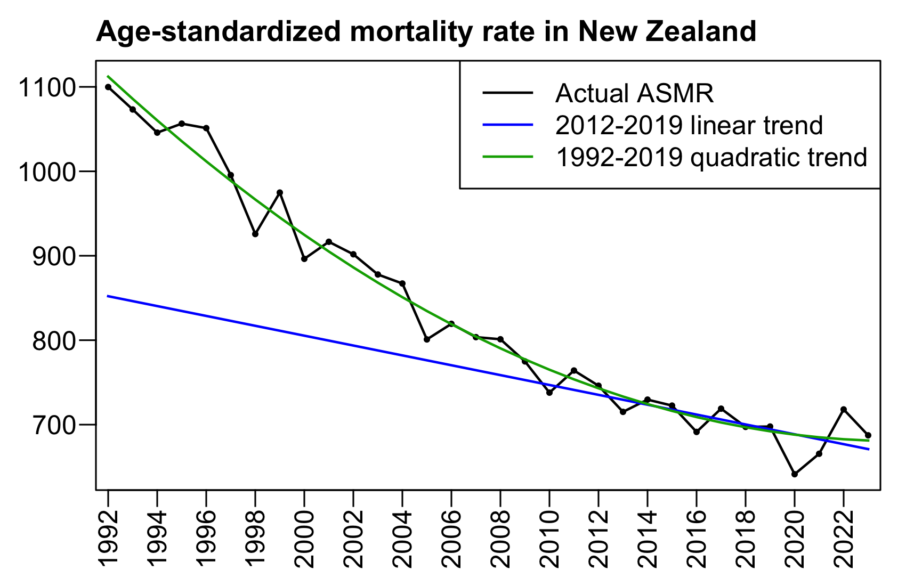
library(data.table)
t=fread("http://sars2.net/f/nzpopdead.csv")
a=t[,.(dead=sum(dead),pop=sum(pop,na.rm=T)),.(age=pmin(95,age),year)]
p=merge(a,a[year==2020,.(age,std=pop/sum(pop))])[year>=1992,.(asmr=sum(dead/pop*std*1e5)),year]
p$trend=p[year%in%2012:2019,predict(lm(asmr~year),.(year=p$year))]
p$poly=p[year%in%1992:2019,predict(lm(asmr~poly(year,2)),.(year=p$year))]
png("1.png",1700,1100,res=300)
par(mar=c(3.0,3,1.9,.8),mgp=c(0,.6,0),las=1,adj=0,lend="square")
tit="Age-standardized mortality rate in New Zealand"
leg=c("Actual ASMR","2012-2019 linear trend","1992-2019 quadratic trend")
col=c("black","#0000ff","#00aa00")
plot(p$year,p$asmr,type="l",main=tit,xlab=NA,ylab=NA,ylim=range(p[,-1]),xlim=range(p$year)+c(-.5,+.5),lwd=1.5,xaxt="n",xaxs="i",cex.main=1.1)
xbreak=seq(1992,2022,2)
axis(1,at=xbreak,labels=xbreak,las=2)
points(p$year,p$asmr,pch=20,cex=.6)
lines(p$year,p$trend,type="l",col=col[2],lwd=1.5)
lines(p$year,p$poly,type="l",col=col[3],lwd=1.5)
legend("topright",legend=leg,col=col,lty=1,lwd=1.5)
dev.off()
I believe Ethical Skeptic's baseline was fitted against data from only 2018 and 2019 like my blue baseline in the plot below, even though he may have fitted the baseline against only summer weeks but I fitted it against all months. In this case a 2018-2019 baseline is an unusually good approximation of a longer-term linear trend before COVID. But since 2020 the 2018-2019 baseline is still low compared to my green baseline here which accounts for changes to the age composition of the population:
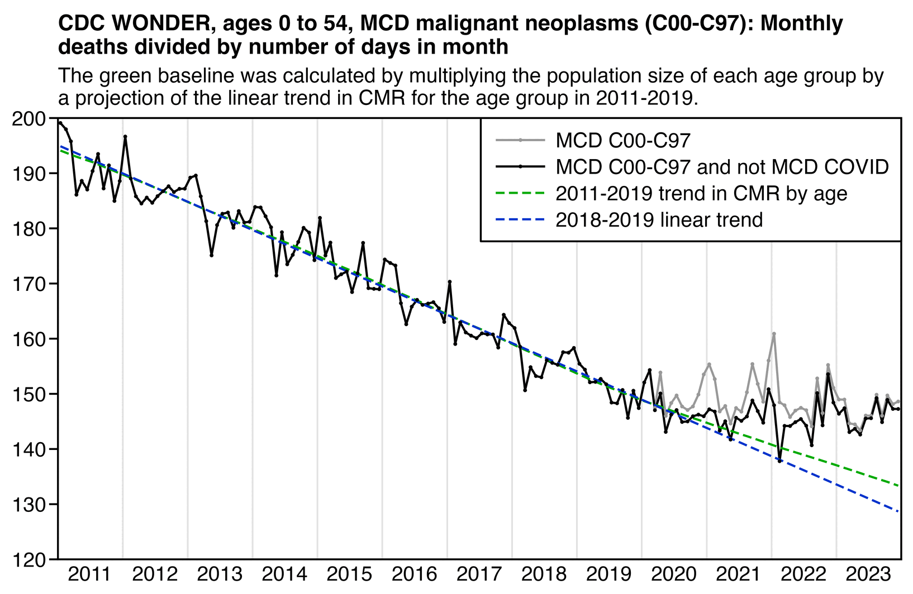
library(data.table);library(ggplot2);library(lubridate)
cul=\(x,y)y[cut(x,c(y,Inf),,T,F)]
t=fread("http://sars2.net/f/wondermalignant5year.csv")[cause%like%"Multiple",.(age,date=month,dead)]
pop=fread("http://sars2.net/f/uspopdeadmonthly.csv")
t=merge(t,pop[,.(persondays=sum(persondays),pop=sum(pop)),.(date,age=cul(age,c(0,1,1:20*5)))],all=T)
t=t[,date:=as.Date(paste0(date,"-1"))]
t[,dead:=nafill(dead/days_in_month(date),,0)]
t=t[year(date)%in%2011:2023&age<55]
t$base=t$pop*t[year(date)<2020,predict(lm(dead/pop~date),.(date=unique(t$date))),age]$V1
w=t[,.(base=sum(base),dead=sum(dead)),date]
and=fread("http://sars2.net/f/wondermalignantmcdandcovidmcd.csv")[age=="under55"&date!="2024-09"]
and=and[,date:=as.Date(paste0(date,"-1"))][,.(date,dead2=dead/days_in_month(date))]
w=merge(w,and,all.x=T)[,dead2:=dead-nafill(dead2,,0)]
w$linear=w[year(date)%in%2011:2019,predict(lm(dead~date),w)]
w$linear2=w[year(date)%in%2018:2019,predict(lm(dead~date),w)]
lab=c("MCD C00-C97","MCD C00-C97 and not MCD COVID","2011-2019 trend in CMR by age","2018-2019 linear trend")
p=w[,.(x=date,y=c(dead,dead2,base,linear),z=factor(rep(lab,each=.N),lab))]
xstart=as.Date("2011-1-1");xend=as.Date("2024-1-1")
p=p[x>=xstart&x<=xend]
xbreak=seq(xstart,xend,"6 month");xlab=ifelse(month(xbreak)==7,year(xbreak),"")
ybreak=pretty(p$y,7);ystart=ybreak[1];yend=max(ybreak)
ggplot(p,aes(x=x+14,y=y))+
geom_vline(xintercept=seq(xstart,xend,"year"),color="gray90",linewidth=.3)+
geom_hline(yintercept=c(ystart,yend),linewidth=.3,lineend="square")+
geom_vline(xintercept=c(xstart,xend),linewidth=.3,lineend="square")+
geom_line(aes(color=z,linetype=z),linewidth=.35)+
geom_point(aes(alpha=z,color=z),stroke=0,size=.6)+
labs(title="CDC WONDER, ages 0 to 54, MCD malignant neoplasms (C00-C97): Monthly\ndeaths divided by number of days in month",subtitle="The green baseline was calculated by multiplying the population size of each age group by a projection of the linear trend in CMR for the age group in 2011-2019."|>stringr::str_wrap(90),x=NULL,y=NULL)+
scale_x_continuous(limits=c(xstart,xend),breaks=xbreak,labels=xlab)+
scale_y_continuous(limits=c(ystart,yend),breaks=ybreak)+
scale_color_manual(values=c("gray60","black","#0a0","#03c"))+
scale_linetype_manual(values=c("solid","solid","42","42"))+
scale_alpha_manual(values=c(1,1,0,0))+
coord_cartesian(clip="off",expand=F)+
theme(axis.text=element_text(size=7,color="black"),
axis.text.y=element_text(margin=margin(,1)),
axis.ticks=element_line(linewidth=.3,color="black"),
axis.ticks.length.x=unit(0,"pt"),
axis.ticks.length.y=unit(3,"pt"),
axis.title=element_text(size=8),
legend.direction="vertical",
legend.justification=c(1,1),
legend.key=element_blank(),
legend.key.height=unit(9,"pt"),
legend.key.width=unit(21,"pt"),
legend.background=element_rect(color="black",linewidth=.3),
legend.margin=margin(3,4,3,3),
legend.position=c(1,1),
legend.spacing.x=unit(1.5,"pt"),
legend.spacing.y=unit(0,"pt"),
legend.text=element_text(size=7),
legend.title=element_blank(),
panel.background=element_blank(),
plot.margin=margin(4,4,3,4),
plot.subtitle=element_text(size=7,margin=margin(,,3)),
plot.title=element_text(size=7.4,face=2,margin=margin(1,,3)))
ggsave("1.png",width=4.3,height=2.8,dpi=380*4)
system("magick 1.png -resize 25% -colors 256 1.png")
In the plot above I also got a steady increase in excess deaths which started around 2020 or 2021, so the increase in excess deaths doesn't just seem to be an artifact produced by an inappropriate baseline. However the turning point in deaths seems to be around late 2020 or early 2021 so I don't know if it can be blamed on the vaccines, because cancers normally take time to develop and there weren't yet that many young people who had been vaccinated even in early 2021.
When I looked at all ages instead of only ages 0 to 54, there was not such a clear increase in deaths above the baseline in 2022-2023 (even though I guess Ethical Skeptic might argue it was because I didn't adjust sufficiently for the PFE in my baseline, because my baseline only had a slight downwards adjustment due to the reduction in population size caused by excess deaths since 2020):
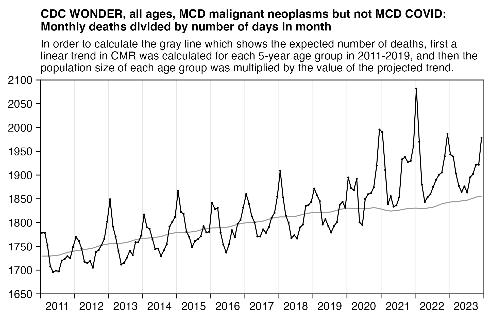
In the plot above the green baseline was not adjusted for seasonal variation in mortality, but the reason why my baseline has the wavy pattern is that the population sizes of elderly age groups are slightly higher in the winter. I calculated the baseline using monthly resident population estimates published by the US Census Bureau.
When Ed Dowd's group published a paper about deaths from neoplasms in ages 15 to 44 where they used a 2010-2019 linear baseline for CMR, I pointed out that a 1999-2019 trend in the mortality rate was curved upwards regardless of whether I looked at CMR or ASMR, so the 2010-2019 linear baseline might have been too steep and some flattening of the trend might have been expected during COVID. However that doesn't seem to be the case for deaths from malignant neoplasms in ages 0 to 54, where the 1999-2019 quadratic trend in ASMR is close to linear:
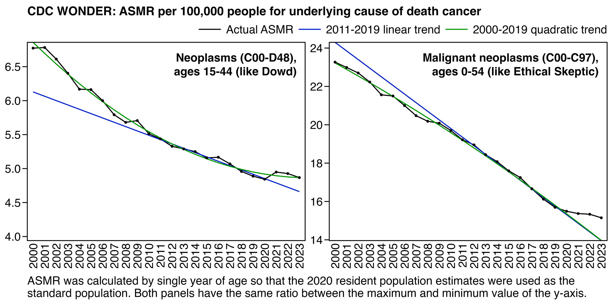
library(data.table);library(ggplot2);library(lubridate)
pop0=fread("https://www2.census.gov/programs-surveys/popest/datasets/2000-2010/intercensal/national/us-est00int-alldata.csv")
pop0=pop0[MONTH==7&AGE!=999&YEAR<2010,.(age=AGE,year=YEAR,pop=TOT_POP)]
pop=rbind(pop0,fread("http://sars2.net/f/uspopdead.csv")[year>=2010,.(age,year,pop)])
t=merge(pop,fread("http://sars2.net/f/wondercanceryearly.csv")[year<2024])
t=merge(pop[year==2020,.(age,std=pop/sum(pop))],t)
t1=cbind(t[(cause%like%"Neo"&age%in%15:44)],group="Neoplasms (C00-D48),\nages 15-44 (like Dowd)")
t2=cbind(t[(cause%like%"Malig"&age<55)],group="Malignant neoplasms (C00-C97),\nages 0-54 (like Ethical Skeptic)")
t=rbind(t1,t2)[,group:=factor(group,unique(group))]
p=t[,.(y=sum(dead/pop*std*1e5),z="Actual ASMR"),.(year,group)]
p1=p[year%in%2011:2019,.(year=2000:2023,z="2011-2019 linear trend",y=predict(lm(y~year),.(year=2000:2023))),group]
p2=p[year<2020,.(year=2000:2023,z="2000-2019 quadratic trend",y=predict(lm(y~poly(year,2)),.(year=2000:2023))),group]
p=rbind(p,p1,p2)[,z:=factor(z,unique(z))]
xstart=2000;xend=2023;xbreak=seq(xstart-.5,xend+.5,.5);xlab=c(rbind("",xstart:xend),"")
ggplot(p,aes(x=year,y=y))+
facet_wrap(~group,nrow=1,dir="v",scales="free")+
geom_text(data=p[,max(y),group],aes(label=group,y=V1),x=xend-(xend-xstart)*.01,vjust=1.4,size=grid::convertUnit(unit(7,"pt"),"mm"),hjust=1,fontface=2)+
geom_line(aes(color=z),linewidth=.3)+
geom_point(aes(color=z,alpha=z),stroke=0,size=.8,show.legend=F)+
geom_point(data=p[,max(y)/p[,max(y)/min(y),group][,max(V1)],group],aes(y=V1,x=xstart),stroke=0,size=0)+
labs(title="CDC WONDER: ASMR per 100,000 people for underlying cause of death cancer",caption="ASMR was calculated by single year of age so that the 2020 resident population estimates were used as the\nstandard population. Both panels have the same ratio between the maximum and minimum value of the y-axis.",x=NULL,y=NULL)+
scale_x_continuous(limits=c(xstart-.5,xend+.5),breaks=xbreak,labels=xlab)+
scale_y_continuous(breaks=\(x)pretty(x,6))+
scale_color_manual(values=c("black","#0022cc","#009900"))+
scale_alpha_manual(values=c(1,0,0))+
coord_cartesian(clip="off",expand=F)+
theme(axis.text=element_text(size=7,color="black"),
axis.text.x=element_text(angle=90,vjust=.5,hjust=1.2),
axis.text.y=element_text(margin=margin(,1)),
axis.ticks=element_line(linewidth=.25,color="black"),
axis.ticks.length.x=unit(0,"pt"),
axis.ticks.length.y=unit(3,"pt"),
axis.title=element_text(size=8),
legend.background=element_blank(),
legend.box.spacing=unit(0,"pt"),
legend.justification="right",
legend.key=element_blank(),
legend.key.height=unit(10,"pt"),
legend.key.width=unit(17,"pt"),
legend.margin=margin(,,3),
legend.position="top",
legend.spacing.x=unit(1.5,"pt"),
legend.text=element_text(size=7,vjust=.5),
legend.title=element_blank(),
panel.background=element_blank(),
panel.border=element_rect(fill=NA,linewidth=.25),
panel.spacing=unit(3,"pt"),
plot.caption=element_text(hjust=0,size=7,margin=margin(1,,1)),
plot.margin=margin(3,3,3,3),
plot.title=element_text(size=7.4,face=2,margin=margin(1,,2)),
strip.background=element_blank(),
strip.text=element_blank())
ggsave("1.png",width=5.2,height=2.6,dpi=400*4)
system("magick 1.png -resize 25% -colors 256 1.png")
system("qlmanage -p ~/1.png&>/dev/null")
But in conclusion I didn't find any major flaw in Ethical Skeptic's plot for cancer deaths in ages 0 to 54, and there seems to be a genuine turning point in the mortality around the year 2020 or 2021.
Ethical Skeptic posted this plot for deaths from malignant neoplasms where he employed a trick he calls "excess-MCOD normalization". I believe it means that he plotted UCD deaths up to week 9 of 2022, after which he added in a gradually increasing proportion of MCD deaths to his plot so that the proportion reached the maximum level on week 20 of 2023 after which it remained at the maximum level: [https://theethicalskeptic.com/2024/04/04/the-state-of-things-pandemic-week-50-2023/]
Chart 6 - Excess Cancer Mortality (USA) - stands at 5.9% or 747 persons per week over the last three weeks on average. More alarmingly however, is the novel compound annualized growth rate (CAGR) of 2.2%, a significant departure from the old growth rate of 0.23%, normalized from the years 2014-2019 (dark orange line). This chart is expertly adjusted for reporting lag (procedure here), Pull Forward Effect (345 week PFE method is depicted in Charts 3b and 6), and excess MCoD attributions (critical data mining method depicted in Chart 5 above). In other words it is showing the true cancer UCoD rate (shorted by pressure on physicians to not report cancers unless 'proven' by multiple tests). Despite all these shorts in the data collection, the raw (and misleading) UCoD data nonetheless shows a rise - which can be seen by clicking here.
He justified the use of his trick by showing that the ratio of MCD to UCD deaths for malignant neoplasms has remained elevated since 2020, so he assumes that some cancer deaths which should've been classified as UCD were classified as MCD instead:
The green-to-red line in Chart 5 below shows the CDC Wonder Excess Attributions of underlying cause of death Cancer to multiple cause of death Cancer, per week for the two years prior, as well as years-of and years-post the pandemic. The dotted baseline is normalized from the years 2018-2019, and indexed to the last 7 week average as compared to those same 7 weeks of 2018/19, so it is not a 'regression'. Since this is a relative index, it should exhibit no trend or growth rate (outside the context of Covid mortality peak periods of course). The current excess of 321 deaths reflects cancer deaths which are concealed from the underlying cause of death ICD code, and must be added back into the mix in order to make Excess Cancer Mortality comparable to its past baseline. We reconcile this into Chart 6 below, applying it only after the pandemic period ended.
Chart 5 - Cancer Concealment by Excess MCOD Attribution - stands at 394 concealed cancer deaths per week. In this practice, cancers are moved from the underlying cause of death line in Part I of the death certificate, to one of the multiple cause of death lines above the UCoD line, in excess of past practice. Once Covid has abated, this balance should trend back to zero. It has not. Therefore, in order to capture the true cancer mortality increase, these cancer deaths falsely attributed to Covid and other underlying causes must be added back into the total in the Excess Cancer Mortality chart below. These missing deaths are phased back in from Week 10 of 2022 (point of large decline in Covid mortality) onward.
However the x-axis in the plot above started from 2018 so you couldn't see that there had been an increasing trend in the MCD to UCD ratio since approximately 2015. And in my next plot if you look at the light gray line where I subtracted deaths with both MCD COVID and MCD cancer from the MCD cancer deaths, the MCD to UCD ratio since 2020 has remained below the prepandemic trend on average, so basically all of the increase in the MCD to UCD ratio since 2020 can be explained by either a continuation of the prepandemic trend or by deaths with MCD COVID:
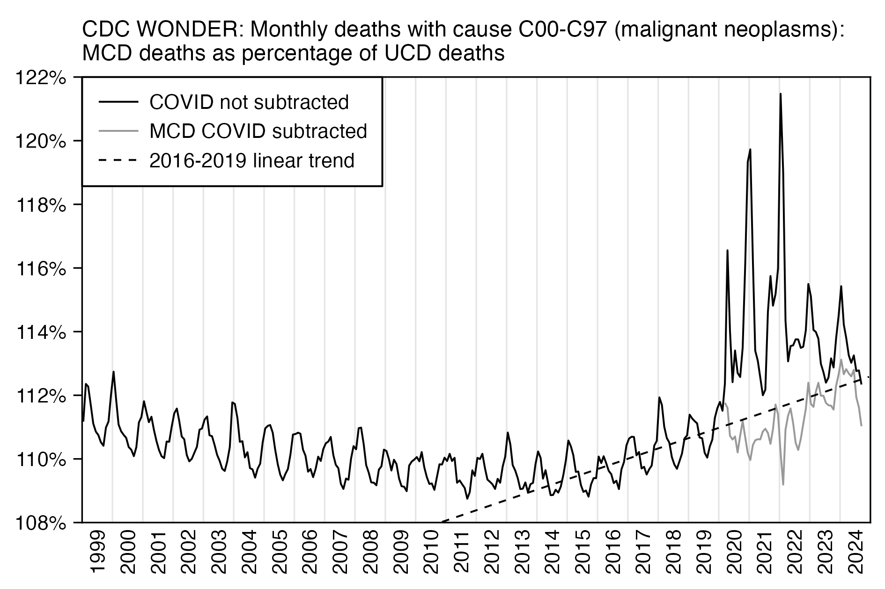
library(data.table);library(ggplot2)
t=fread("http://sars2.net/f/wondermalignantmonthly.csv")
p=t[cause=="MCD malignant neoplasms",.(date,dead,cause="COVID not subtracted")]
p=rbind(p,merge(p,t[cause=="MCD malignant neoplasms and MCD COVID",.(and=dead,date)])[,.(date,dead=dead-nafill(and,,0),cause="MCD COVID subtracted")])
p=merge(t[cause=="UCD malignant neoplasms",.(date,under=dead)],p)
p=p[date!="2024-10"]
p=p[,.(x=as.Date(paste0(date,"-1")),y=dead/under*100,z=cause)]
xstart=as.Date("1999-1-1");xend=as.Date("2025-1-1")
xbreak=seq(xstart,xend,"6 month")
xlab=c(rbind("",1999:2024),"")
ybreak=pretty(p[z=="COVID not subtracted",y]);ystart=ybreak[1];yend=max(ybreak)
color=c("black","gray60","black")
months=seq(xstart,xend,"month")
p=rbind(p[,.(x,y,z)],p[z=="COVID not subtracted"&year(x)%in%2016:2019,.(x=months,y=predict(lm(y~x),.(x=months)),z="2016-2019 linear trend")])
p[,z:=factor(z,unique(z))]
seg=p[x==D("2022-1-1")&!z%like%"MCD"]
ggplot(p,aes(x=x+14,y=y))+
geom_vline(xintercept=seq(xstart,xend,"year"),color="gray90",linewidth=.25)+
geom_hline(yintercept=c(ystart,yend),linewidth=.25,lineend="square")+
geom_vline(xintercept=c(xstart,xend),linewidth=.25,lineend="square")+
geom_line(aes(color=z,linetype=z),linewidth=.3)+
labs(title="CDC WONDER: Monthly deaths with cause C00-C97 (malignant neoplasms): MCD deaths as percentage of UCD deaths"|>stringr::str_wrap(70),x=NULL,y=NULL)+
scale_x_continuous(limits=c(xstart,xend),breaks=xbreak,labels=xlab)+
scale_y_continuous(limits=c(ystart,yend),breaks=ybreak,labels=\(x)paste0(x,"%"))+
scale_color_manual(values=color)+
scale_linetype_manual(values=c(1,1,2))+
coord_cartesian(clip="off",expand=F)+
theme(axis.text=element_text(size=7,color="black"),
axis.text.x=element_text(angle=90,vjust=.5,hjust=1),
axis.ticks.x=element_line(color=alpha("black",c(1,0))),
axis.ticks=element_line(linewidth=.25,color="black"),
axis.ticks.length=unit(3,"pt"),
axis.ticks.length.x=unit(0,"pt"),
axis.title=element_text(size=8),
legend.background=element_blank(),
legend.box.just="left",
legend.justification=c(0,1),
legend.key=element_blank(),
legend.key.height=unit(10,"pt"),
legend.key.width=unit(17,"pt"),
legend.position=c(0,1),
legend.spacing.x=unit(2,"pt"),
legend.box.background=element_rect(fill="white",color="black",linewidth=.3),
legend.margin=margin(-2,5,4,4,"pt"),
legend.text=element_text(size=7,vjust=.5),
legend.title=element_blank(),
panel.background=element_blank(),
plot.margin=margin(5,5,5,5),
plot.title=element_text(size=7.6,margin=margin(2,,4)))
ggsave("1.png",width=4.2,height=2.8,dpi=450)
In the plot below if you look at the black line for UCD deaths, it remained near the baseline in 2020 and 2021 but by 2023 it had risen clearly above the baseline. And similarly if you look at the light gray line for MCD deaths with COVID subtracted, it also remained close to the baseline in 2020 and 2021 but it rose clearly above the baseline in 2023. So there seems to be a genuine increase in cancer deaths above the trend in 2023 even if you only look at UCD deaths, even though it's much smaller than the increase Ethical Skeptic gets when he applies his excess MCD normalization and PFE adjustment tricks to the data:
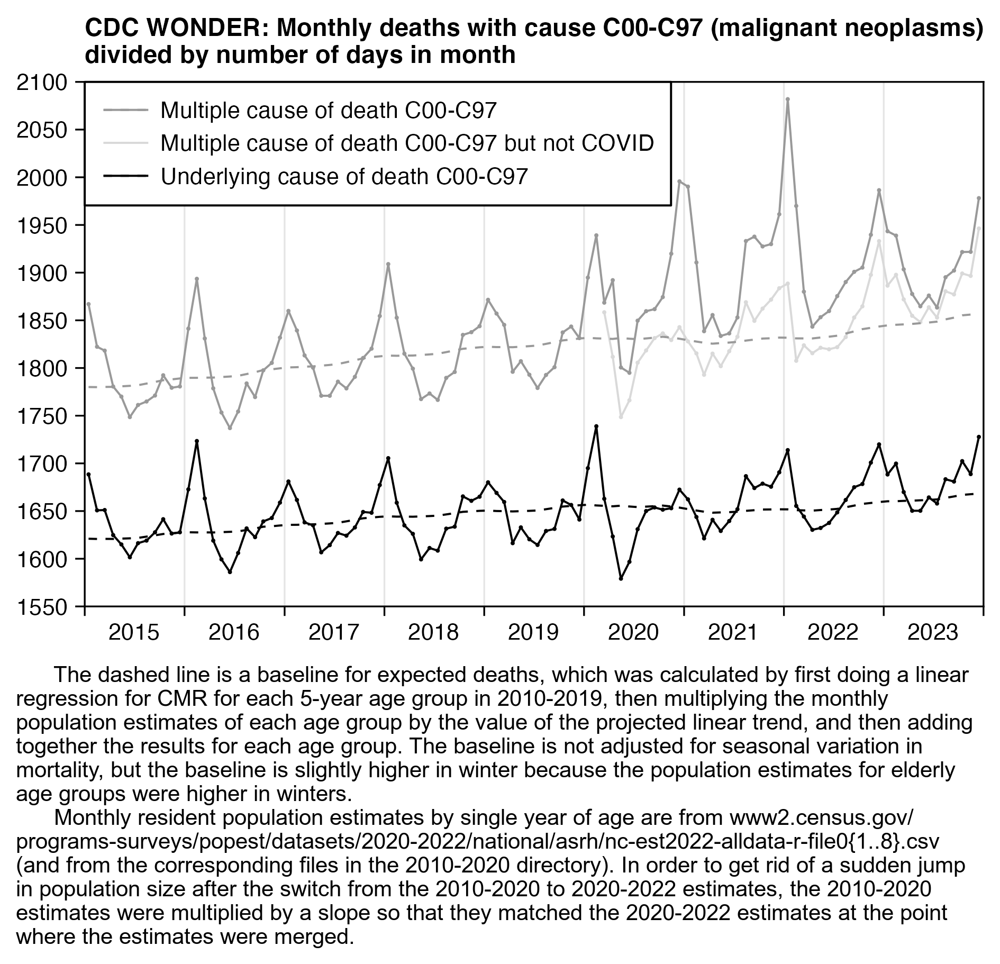
library(data.table);library(ggplot2);library(lubridate)
cul=\(x,y)y[cut(x,c(y,Inf),,T,F)]
t=fread("http://sars2.net/f/wondermalignant5year.csv")
pop=fread("http://sars2.net/f/uspopdeadmonthly.csv")
t=merge(t,pop[,.(pop=sum(pop)),.(month=date,age=cul(age,c(0,1,1:20*5)))])
t=t[,month:=as.Date(paste0(month,"-1"))]
t[,dead:=dead/days_in_month(month)]
months=sort(unique(t$month))
base=t[!grepl("COVID",cause)&year(month)%in%2011:2019][,dead:=nafill(dead,,0)]
t=merge(base[,.(month=months,base=predict(lm(dead/pop~month),.(month=months))),.(age,cause)],t)
t[,base:=base*pop]
p=t[,.(base=sum(base),dead=sum(dead)),.(date=month,cause)]
and=fread("http://sars2.net/f/wondermalignantmcdandcovidmcd.csv")[age=="all"]
and=and[,date:=as.Date(paste0(date,"-1"))][,.(date,andcovid=dead/days_in_month(date))]
p=rbind(p,merge(and,p[cause%like%"Multiple"])[,.(date,base=NA,cause="Multiple cause of death C00-C97 but not COVID",dead=dead-andcovid)])
xstart=as.Date("2015-1-1");xend=as.Date("2024-1-1")
p=p[date>=xstart&date<=xend]
xbreak=seq(xstart,xend,"6 month")
xlab=c(rbind("",2015:2023),"")
cand=c(sapply(c(1,2,5),\(x)x*10^c(-10:10)))
ymin=p[,min(base,dead,na.rm=T)];ymax=p[,max(base,dead,na.rm=T)]
ystep=cand[which.min(abs(cand-(ymax-ymin)/7))]
ystart=ystep*floor(ymin/ystep)
yend=ystep*ceiling(ymax/ystep)
ybreak=seq(ystart,yend,ystep)
color=c("gray60","gray85","black")
ggplot(p,aes(x=date+14,y=dead,color=cause))+
geom_vline(xintercept=seq(xstart,xend,"year"),color="gray90",linewidth=.25)+
geom_hline(yintercept=c(ystart,yend),linewidth=.25,lineend="square")+
geom_vline(xintercept=c(xstart,xend),linewidth=.25,lineend="square")+
geom_line(linewidth=.3)+
geom_point(stroke=0,size=.6,show.legend=F)+
geom_line(aes(y=base),linetype=2,linewidth=.3)+
labs(title="CDC WONDER: Monthly deaths with cause C00-C97 (malignant neoplasms) divided by number of days in month"|>stringr::str_wrap(70),x=NULL,y=NULL)+
scale_x_continuous(limits=c(xstart,xend),breaks=xbreak,labels=xlab)+
scale_y_continuous(limits=c(ystart,yend),breaks=ybreak)+
scale_color_manual(values=color)+
coord_cartesian(clip="off",expand=F)+
theme(axis.text=element_text(size=7,color="black"),
axis.ticks.x=element_line(color=alpha("black",c(1,0))),
axis.ticks=element_line(linewidth=.25,color="black"),
axis.ticks.length=unit(.2,"lines"),
axis.title=element_text(size=8),
legend.background=element_blank(),
legend.box.just="left",
legend.justification=c(0,1),
legend.key=element_blank(),
legend.key.height=unit(10,"pt"),
legend.key.width=unit(17,"pt"),
legend.position=c(0,1),
legend.spacing.x=unit(2,"pt"),
legend.box.background=element_rect(fill="white",color="black",linewidth=.3),
legend.margin=margin(-2,5,4,4,"pt"),
legend.text=element_text(size=7,vjust=.5),
legend.title=element_blank(),
panel.background=element_blank(),
plot.margin=margin(5,5,5,5),
plot.title=element_text(size=7.6,face=2,margin=margin(2,,4)))
ggsave("1.png",width=4.3,height=2.8,dpi=450)
sub="\u00a0 The dashed line is a baseline for expected deaths, which was calculated by first doing a linear regression for CMR for each 5-year age group in 2011-2019, then multiplying the monthly population estimates of each age group by the value of the projected linear trend, and then adding together the results for each age group. The baseline is not adjusted for seasonal variation in mortality, but the baseline is slightly higher in winter because the population estimates for elderly age groups were higher in winters.
Monthly resident population estimates by single year of age are from www2.census.gov/
programs-surveys/popest/datasets/2020-2022/national/asrh/nc-est2022-alldata-r-file0{1..8}.csv, and from the corresponding files in the 2010-2020 directory. In order to get rid of a sudden jump in population size after the switch from the 2010-2020 to 2020-2022 estimates, the 2010-2020 estimates were multiplied by a slope so that they matched the 2020-2022 estimates at the point where the estimates were merged."
system(paste0("f=1.png;mar=30;w=`identify -format %w $f`;magick \\( $f -chop 0x10 \\) \\( -size $[w-mar*2]x -font Arial -interline-spacing -3 -pointsize 42 caption:'",sub,"' -gravity southwest -splice $[mar]x20 \\) -append 1.png"))
However I don't think the method of excess MCD normalization is justified, because there was already an increasing trend in the MCD to UCD ratio before COVID, and because deaths with MCD COVID account for basically all of the increase in the MCD to UCD ratio above the prepandemic trend.
And if there would be some other cause of death which had a reduced MCD to UCD ratio since 2020 compared to the ratio before 2020, should people be applying a "negative excess MCD normalization" where they subtract a part of deaths when they plot UCD deaths?
I think Ethical Skeptic hasn't documented what precise calculation he used to determine the magnitude of the excess MCD normalization, or how he picked week 10 of 2022 as the date when he started applying the normalization or week 20 of 2023 as the date when he stopped increasing the amount of added deaths. If he didn't pick the variables programmatically but based on some kind of subjective criteria, it would be difficult for other people to reproduce his work systematically or so that people would be able to apply the same methodology to other causes of death.
In any case in his plot that has a line that shows weekly deaths with excess MCD normalization, he should've also included another line that would've showed the number of deaths without the normalization, so it would've been clearer to his followers what the magnitude of the normalization was and when it started.
The increase in the MCD to UCD ratio might be due to an increase in the survival rate from cancer, which might cause there to be more people who have cancer at the time of death but who don't end up dying of cancer. Cancer ASMR in the United States has been decreasing faster than the age-standardized incidence of cancer: [https://acsjournals.onlinelibrary.wiley.com/doi/full/10.3322/caac.21820]
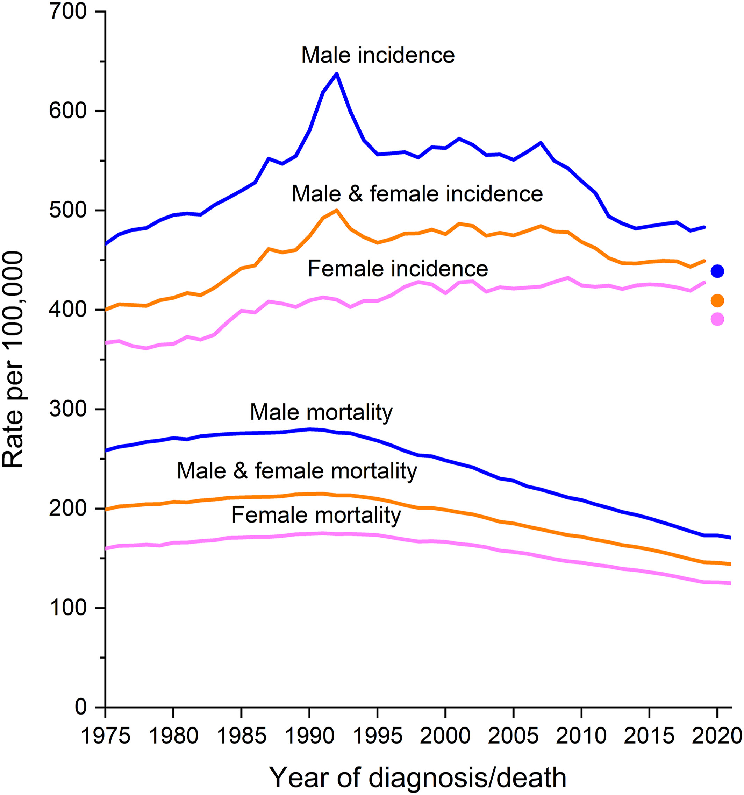
(Ethical Skeptic uses the acronym "MCoD" or "MCOD" to refer to multiple cause of death but CDC WONDER uses the acronym "MCD", so I'm following the convention of CDC WONDER on this website.)
Added later: Chris Martenson posted this reply to me: "I don't think we can explain that above-trend line jump with 'Covid.' Covid can't explain anything in post-Omicron world, which is from Dec-21 onward. It just doesn't kill people in those numbers. Sure, it gets written down on death certs, but that's explained by incentives and poor reporting thresholds ('with vs of' and all that). So 'with MCD Covid' is not a valid explanation to me." [https://x.com/chrismartenson/status/1850667452901781740] But I replied by posting the plot below and pointing out that during the Omicron spike in January 2022, deaths with UCD COVID account for about 77% of the extra MCD cancer deaths above the 2016-2019 baseline. And why would my black line for the MCD to UCD ratio even have the sharp spike in January 2022 if it wasn't caused by Omicron? However later on in 2023 and 2024 if you look at my blue line where I subtracted UCD COVID deaths from the MCD cancer deaths, the blue line is clearly elevated above the 2016-2019 baseline, even though it could be that my baseline is too low in case the real trend in the MCD to UCD ratio is curved upwards (or it could also be that COVID has been underdiagnosed as a cause of death in 2023 and 2024, or that the UCD COVID deaths don't capture all extra deaths caused by COVID):
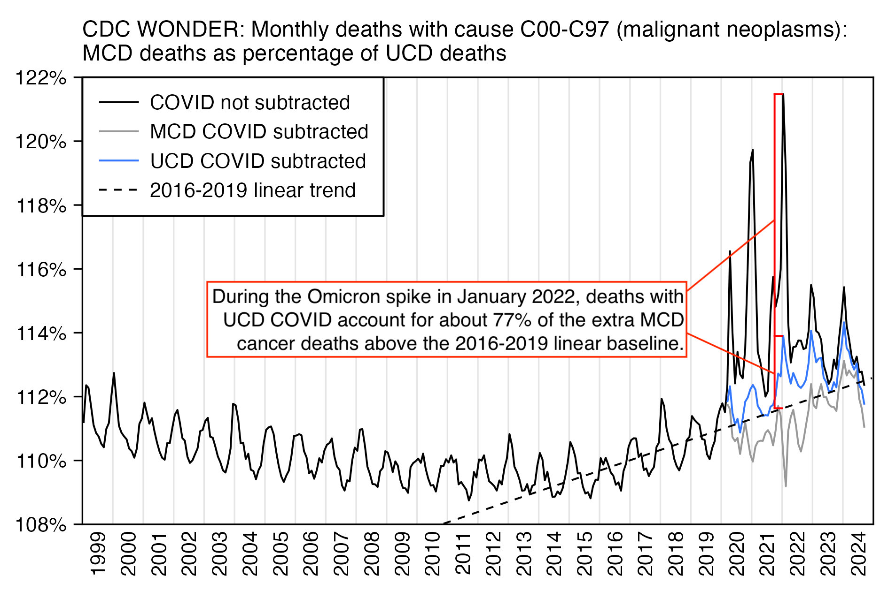
library(data.table);library(ggplot2)
t=fread("http://sars2.net/f/wondermalignantmonthly.csv")
p=t[cause=="MCD malignant neoplasms",.(date,dead,cause="COVID not subtracted")]
p1=merge(p,t[cause=="MCD malignant neoplasms and MCD COVID",.(and=dead,date)])[,.(date,dead=dead-nafill(and,,0),cause="MCD COVID subtracted")]
p2=merge(p,t[cause=="MCD malignant neoplasms and UCD COVID",.(and=dead,date)])[,.(date,dead=dead-nafill(and,,0),cause="UCD COVID subtracted")]
p=rbind(p,p1,p2)
p=merge(t[cause=="UCD malignant neoplasms",.(date,under=dead)],p)
p=p[date!="2024-10"]
p=p[,.(x=as.Date(paste0(date,"-1")),y=dead/under*100,z=cause)]
xstart=as.Date("1999-1-1");xend=as.Date("2025-1-1")
xbreak=seq(xstart,xend,"6 month")
xlab=c(rbind("",1999:2024),"")
ybreak=pretty(p[z=="COVID not subtracted",y]);ystart=ybreak[1];yend=max(ybreak)
color=c("black","gray60",hsv(22/36,.8,1),"black")
months=seq(xstart,xend,"month")
p=rbind(p[,.(x,y,z)],p[z=="COVID not subtracted"&year(x)%in%2016:2019,.(x=months,y=predict(lm(y~x),.(x=months)),z="2016-2019 linear trend")])
p[,z:=factor(z,unique(z))]
seg=p[x==D("2022-1-1")&!z%like%"MCD"]
ggplot(p,aes(x=x+14,y=y))+
geom_vline(xintercept=seq(xstart,xend,"year"),color="gray90",linewidth=.25)+
geom_hline(yintercept=c(ystart,yend),linewidth=.25,lineend="square")+
geom_vline(xintercept=c(xstart,xend),linewidth=.25,lineend="square")+
geom_line(aes(color=z,linetype=z),linewidth=.3)+
labs(title="CDC WONDER: Monthly deaths with cause C00-C97 (malignant neoplasms): MCD deaths as percentage of UCD deaths"|>stringr::str_wrap(70),x=NULL,y=NULL)+
geom_segment(data=seg,aes(x=x-90,y=y,xend=x,yend=y),linewidth=.3,color="red",lineend="square")+
annotate(geom="segment",x=seg$x[1]-90,xend=seg$x[1]-90,y=min(seg$y),yend=max(seg$y),lineend="square",color="red",linewidth=.3)+
scale_x_continuous(limits=c(xstart,xend),breaks=xbreak,labels=xlab)+
scale_y_continuous(limits=c(ystart,yend),breaks=ybreak,labels=\(x)paste0(x,"%"))+
scale_color_manual(values=color)+
scale_linetype_manual(values=c(1,1,1,2))+
coord_cartesian(clip="off",expand=F)+
theme(axis.text=element_text(size=7,color="black"),
axis.text.x=element_text(angle=90,vjust=.5,hjust=1),
axis.ticks.x=element_line(color=alpha("black",c(1,0))),
axis.ticks=element_line(linewidth=.25,color="black"),
axis.ticks.length=unit(3,"pt"),
axis.ticks.length.x=unit(0,"pt"),
axis.title=element_text(size=8),
legend.background=element_blank(),
legend.box.just="left",
legend.justification=c(0,1),
legend.key=element_blank(),
legend.key.height=unit(10,"pt"),
legend.key.width=unit(17,"pt"),
legend.position=c(0,1),
legend.spacing.x=unit(2,"pt"),
legend.box.background=element_rect(fill="white",color="black",linewidth=.3),
legend.margin=margin(-2,5,4,4,"pt"),
legend.text=element_text(size=7,vjust=.5),
legend.title=element_blank(),
panel.background=element_blank(),
plot.margin=margin(5,5,5,5),
plot.title=element_text(size=7.6,margin=margin(2,,4)))
ggsave("1.png",width=4.2,height=2.8,dpi=450)
My green line matches Ethical Skeptic's line from 2018 to 2020. But for some reason his line already starts to rise slightly above from my line around the start of 2021 even though he is supposed to have only started applying the excess MCD normalization on week 10 of 2022. So I don't know if he also applied some additional adjustment that already started in 2021.
I took data for 2017 from the same CDC dataset that Ethical Skeptic listed as his source, but my number of deaths is slightly higher in 2017 because he seems to have excluded deaths in District of Columbia. My green line shows deaths where the jurisdiction of occurrence was listed as United States, but I got my green line to match Ethical Skeptic's plot when I excluded DC so that I summed together deaths for all jurisdictions except United States, Puerto Rico, and District of Columbia. However I don't think it's correct to exclude DC because DC is not part of any state. In the CDC dataset the total number of cancer deaths in all jurisdictions except United States and Puerto Rico is only 79 lower than the number of deaths in the jurisdiction of United States, which is explained by 11 rows where the number of deaths was suppressed because it was below 10.
Ethical Skeptic's plot shows that he got 94,700 excess cancer deaths since MMWR week 14 of 2021. But I got only about 18,000 excess deaths between week 14 of 2021 and week 26 of 2024 (where I excluded later weeks because there's too many deaths missing because of a registration delay).
My light green baseline was calculated based on a simple linear regression of raw deaths, which is inaccurate in two ways that end up partially canceling each other out. My baseline is too low because it doesn't account for changes to the size or age composition of the population. But my baseline is also too high because it doesn't account for the reduced population size due to COVID deaths. So overall I think my baseline is probably too high in 2021 and 2022 but by 2024 it might already be too low.
Around November 1st 2024 Ethical Skeptic updated his plot for the MCD to UCD ratio so he started the x-axis from 2017 instead of 2018. [https://x.com/EthicalSkeptic/status/1852385322543219017] I was able to reproduce the plot from 2018 onwards as is shown by the magenta line below, but I don't even know where to get weekly MCD cancer deaths for 2017. I only found weekly UCD deaths here: https://catalog.data.gov/dataset/weekly-counts-of-deaths-by-state-and-select-causes-2014-2018. The bottom of his plot only lists CDC WONDER as a source, but I don't think it has weekly data for 2017. Ethical Skeptic may have added the data for 2017 to his plot in order to address my criticism about how there had been an increasing trend in the MCD to UCD ratio since around 2015 or 2016, because I had pointed it out on Twitter multiple times, and I'm sure he saw it at least once even though he has blocked me because I told about it to Steve Kirsch who relayed my criticism to Ethical Skeptic and posted Ethical Skeptic's response to me on DM. There's even a note at the bottom of the updated plot which specifically says that the trend in 2017 to 2019 is flat, even though the trend was clearly increasing in my plot for monthly data. However Ethical Deceptic seems to have inserted fake data for 2017, because the shape of his line for 2017 looks too similar to the line for 2018:
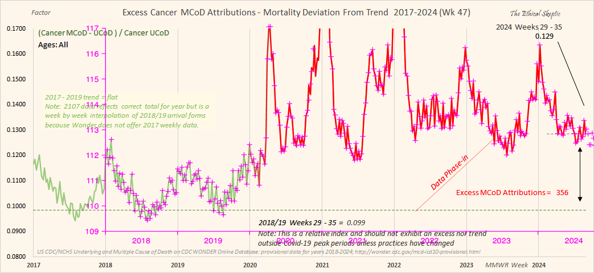
The line for 2017 looks like it was produced by adding random noise to the line for 2018, except weeks 1 and 3 may been possibly been lowered manually because they have the biggest difference between 2018 and 2017. The lines for 2017 and 2018 have peaks on the same week numbers:
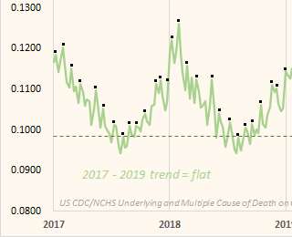
Here the line for 2017 is shown in purple over the line for 2018. Looks like clear fraud:
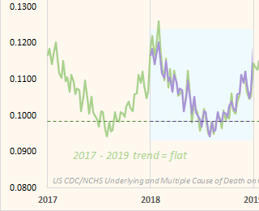
Ethical Skeptic even had the chutzpah to say it was "indicative of a darkened heart" if someone plotted regular UCD cancer deaths without applying his trick of excess MCD normalization, even though he seems to have forged data in order to justify his method of excess MCD normalization: [https://x.com/EthicalSkeptic/status/1854044515604308023]
The following code corrects these shortcomings of the population estimates returned by CDC WONDER:
CDC WONDER takes about a year to add the new resident population estimates published by the US Census Bureau. For example the Census Bureau published mid-year resident population population for 2023 in December 2023, but as of October 2024 CDC WONDER was still using the 2022 population estimates for 2023.
CDC WONDER doesn't return population sizes for ages 85 and above, even though the US Census Bureau has published population estimates by single year of age up to ages 100+ for 2010 and later years. (The 2000-2010 population estimates by single year of age only go up to ages 85+ however, so in the following code I only included population estimates for 2010 and later years.)
CDC WONDER uses population estimates based on the 2010 census for 2010 to 2020 but population estimates based on the 2020 census for 2021 and later years, so some age groups have a big jump in the population size between 2020 and 2021. The same problem does not exist between the switch from the estimates based on the 2000 census to the estimates based on the 2010 census, because CDC WONDER uses 2000-2010 intercensal estimates for 2000-2009 which were modified to eliminate the jump in population size between 2010 and 2011, but the 2010-2020 intercensal estimates are not scheduled to be published until 2025.
CDC WONDER uses vintage 2021 population estimates for 2021, vintage 2022 estimates for 2022, and so on, even though in later vintages the earlier estimates have often been revised considerably, and the Census Bureau recommends people to generally use the latest-vintage estimates.
In order to get rid of a sudden jump in the population estimates at the point when the new and old estimates are merged, the old estimates are multiplied by a linear slope so that they are the same in 2020 as the new estimates. For example for the age 80, the vintage 2023 population estimate for 2020 is 1,450,396 and the vintage 2020 estimate for 2020 is 1,526,957, so their ratio is about 0.9499, so I'm multiplying the old estimate by about .9+.1*0.9499 for 2011, by about .8+.2*0.9499 for 2012, and so on. (However a slight problem with my approach is that the mid-year population estimates for 2020 had already been reduced by COVID deaths, so COVID deaths in the first half of 2020 are reflected in the slope by which the population estimates for 2011 to 2019 are multiplied.)
old=fread("https://www2.census.gov/programs-surveys/popest/datasets/2010-2020/national/asrh/nc-est2020-agesex-res.csv")
new=fread("https://www2.census.gov/programs-surveys/popest/datasets/2020-2023/national/asrh/nc-est2023-agesex-res.csv")
old=old[SEX==0&AGE!=999,.(age=AGE,pop=unlist(.SD[,-(1:4)]),year=rep(2010:2020,each=.N))]
new=new[SEX==0&AGE!=999,.(age=AGE,pop=unlist(.SD[,-(1:3)]),year=rep(2020:2023,each=.N))]
# determine the ratio between new and old population estimates for 2020
o=merge(merge(old[year==2020,.(age,old=pop)],new[year==2020,.(age,new=pop)])[,.(age,ratio=new/old)],old)
# multiply old population estimates by a linear slope so they match new estimates in 2020
o=rbind(o[year!=2020,.(year,age,pop=round(pop*(1-(((year-2010)/10))*(1-ratio))))],new)
# include population projections for 2024-2025
proj=fread("https://www2.census.gov/programs-surveys/popproj/datasets/2023/2023-popproj/np2023_d1_mid.csv")
proj=proj[SEX==0&ORIGIN==0&RACE==0&YEAR%in%2024:2025,.(year=YEAR,age=rep(0:100,each=.N),pop=unlist(.SD[,-(1:5)]))]
o=rbind(o,proj)
# add a column for yearly deaths for the sake of convenience in calculating prepandemic mortality trends
o=merge(o,fread("d/cd/usyearlydead.csv"),all=T)
fwrite(o[order(year,age)],"uspopdead.csv",na="")
The next script generates a similar file for monthly data. The script also includes population projections for 2024 and 2025, which were calculated by doing a spline interpolation of the population estimate on December 2023 and the Census Bureau's mid-year population projections for 2024 to 2026. I uploaded the output here: f/uspopdeadmonthly.csv.
url="https://www2.census.gov/programs-surveys/popest/datasets/"
new=do.call(rbind,lapply(paste0(url,"2020-2023/national/asrh/nc-est2023-alldata-r-file0",1:8,".csv"),\(x)fread(x)))
old=do.call(rbind,lapply(paste0(url,"2010-2020/national/asrh/NC-EST2020-ALLDATA-R-File",sprintf("%02d",1:24),".csv"),\(x)fread(x)))
mult=new[YEAR==2020&MONTH==4.2,.(age=AGE,new=TOT_POP)]
mult=merge(mult,old[YEAR==2020&MONTH==4,.(age=AGE,old=TOT_POP)])[,.(mult=new/old,age)]
oldpop=old[YEAR!=2021&MONTH!=4.2&AGE!=999,.(year=YEAR,month=floor(MONTH),pop=TOT_POP,age=AGE)]
newpop=new[AGE!=999,.(year=YEAR,month=floor(MONTH),pop=TOT_POP,age=AGE)]
oldmod=oldpop[!(year==2020&month>4)]
oldmod=merge(mult,oldmod[,.(year,month,pop,slope=seq(0,1,,.N)),age])
oldmod=oldmod[,.(age,year,month,pop=pop*(slope*mult+(1-slope)*1))]
proj=fread("https://www2.census.gov/programs-surveys/popproj/datasets/2023/2023-popproj/np2023_d1_mid.csv")
proj=proj[SEX==0&ORIGIN==0&RACE==0&YEAR%in%2024:2026,.(x=seq(7,,12,3),age=rep(0:100,each=.N),pop=unlist(.SD[,-(1:5)]))]
proj=rbind(newpop[year==2023&month==12,.(x=0,pop,age)],proj)
proj=proj[,spline(x,pop,xout=1:24),age][,.(age,year=rep(2024:2025,each=12),month=1:12,pop=round(y))]
pop=rbind(oldmod[!(year==2020&month==4)],newpop,proj)
dead=fread("http://sars2.net/f/usdeadmonthly.csv") # downloaded from CDC WONDER in November 2024
o=merge(dead,pop,all=T)[,date:=sprintf("%d-%02d",year,month)][,.(age,year,month,date,dead,pop)]
o[,persondays:=pop*lubridate::days_in_month(as.Date(paste0(date,"-1")))]
fwrite(o,"uspopdeadmonthly.csv",na="")
This shows that particularly ages 90+ have a huge jump in population size between the switch from the estimates based on the 2010 census to the estimates based on the 2020 census:
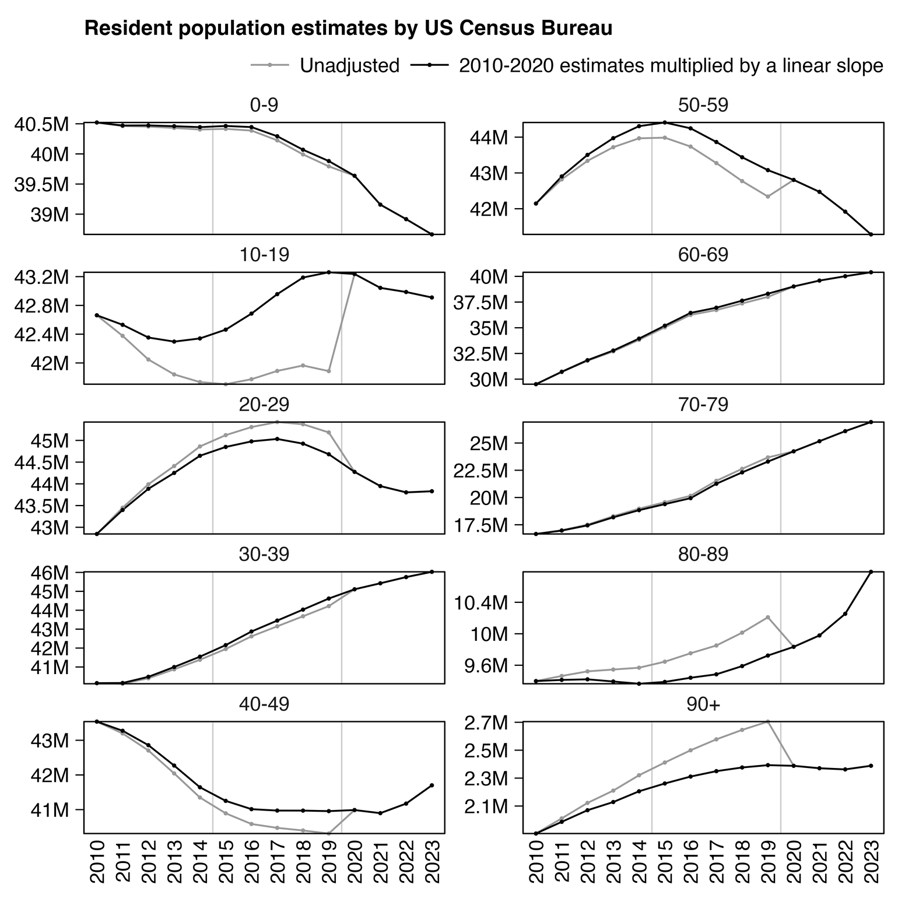
library(data.table);library(ggplot2)
agecut=\(x,y)cut(x,c(y,Inf),paste0(y,c(paste0("-",y[-1]-1),"+")),T,F)
kim=\(x)ifelse(x>=1e3,ifelse(x>=1e6,paste0(x/1e6,"M"),paste0(x/1e3,"k")),x)
new=fread("https://www2.census.gov/programs-surveys/popest/datasets/2020-2023/national/asrh/nc-est2023-agesex-res.csv")
old=fread("https://www2.census.gov/programs-surveys/popest/datasets/2010-2020/national/asrh/nc-est2020-agesex-res.csv")
old=old[SEX==0&AGE!=999,.(age=AGE,pop=unlist(.SD[,-(1:4)]),year=rep(2010:2020,each=.N))]
new=new[SEX==0&AGE!=999,.(age=AGE,pop=unlist(.SD[,-(1:3)]),year=rep(2020:2023,each=.N))]
me=merge(merge(old[year==2020,.(age,old=pop)],new[year==2020,.(age,new=pop)])[,.(age,ratio=new/old)],old)
p=rbind(me[year!=2020,.(year,age,pop=round(pop*(1-(((year-2010)/10))*(1-ratio))))],new)
p$group="2011-2019 estimates multiplied by a linear slope"
p=rbind(p,rbind(old[year!=2020],new)[,group:="Unadjusted"])
p[,group:=factor(group,unique(group))]
p=p[,.(pop=sum(pop)),.(group,year,age=agecut(age,0:9*10))]
xstart=2010;xend=2023
p=p[year%in%xstart:xend]
levels(p$age)=p[year==2019,sprintf("%s (%.1f%%)",age,(pop[group!="Unadjusted"]/pop[group=="Unadjusted"]-1)*100)]
ggplot(p,aes(x=year,y=pop,color=group))+
coord_cartesian(clip="off",expand=F)+
facet_wrap(~age,ncol=2,dir="v",scales="free_y")+
geom_vline(xintercept=c(2014.5,2019.5),color="gray80",linewidth=.23)+
geom_line(linewidth=.3)+
geom_point(stroke=0,size=.7)+
labs(title="Mid-year resident population estimates by US Census Bureau",subtitle="The number after the age group shows the percentage change between the unadjusted and adjusted estimates for 2019."|>stringr::str_wrap(78),x=NULL,y=NULL)+
scale_x_continuous(limits=c(xstart-.5,xend+.5),breaks=seq(xstart-.5,xend+.5,.5),labels=c(rbind("",xstart:xend),""))+
scale_y_continuous(labels=kim,breaks=\(x)pretty(x,3))+
scale_color_manual(values=c("gray60","black"))+
theme(axis.text=element_text(size=7,color="black"),
axis.text.x=element_text(angle=90,vjust=.5,hjust=1),
axis.ticks=element_line(linewidth=.2,color="black"),
axis.ticks.length=unit(3,"pt"),
axis.ticks.length.x=unit(0,"pt"),
legend.background=element_blank(),
legend.box.spacing=unit(0,"pt"),
legend.justification="right",
legend.key=element_blank(),
legend.key.height=unit(10,"pt"),
legend.key.width=unit(17,"pt"),
legend.margin=margin(,,-2),
legend.position="top",
legend.spacing.x=unit(2,"pt"),
legend.text=element_text(size=7,vjust=.5),
legend.title=element_blank(),
panel.background=element_blank(),
panel.border=element_rect(fill=NA,linewidth=.23),
panel.spacing=unit(-2,"pt"),
panel.spacing.x=unit(3,"pt"),
plot.margin=margin(5,5,5,5),
plot.subtitle=element_text(size=7,margin=margin(,,3)),
plot.title=element_text(size=7.4,face=2,margin=margin(1,,4)),
strip.background=element_blank(),
strip.text=element_text(size=7,vjust=-.3))
ggsave("1.png",width=4.4,height=4.4,dpi=350*4)
system("magick 1.png -resize 25% 1.png")
The reason why the population size of ages 90+ decreased by over 10% in the new population estimates might partially be due to COVID deaths in case COVID deaths are accounted for in the mid-year population estimates for 2020. But COVID deaths would probably only explain a small part of the decrease, because in the first half of 2020 CDC WONDER returned 21,600 deaths with UCD COVID in ages 90+, which is only about 0.9% of the total population size of ages 90+ based on the vintage 2023 resident population estimates for the year 2020. However in case the population estimates are calculated based on yearly data for deaths, it might also be that the mid-year population estimates for 2020 are affected by COVID deaths in the second half of 2020, but even in the whole of 2020 the number of COVID deaths in ages 90+ was only about 2.5% of the resident population estimate for ages 90+ in 2020.
There's often fairly large changes to old population estimates in newer vintages. For example the resident population estimate of ages 80-84 in 2021 was increased by about 1.9% between the 2021 and 2022 vintages, but it was again reduced by about 1.8% between the 2022 and 2023 vintages:
Here you can see how the 2000-2010 intercensal estimates have been adjusted to get rid of the jump between the population estimates based on the 2000 census and the population estimates based on the 2010 census:
Competence Question: If young age-bracket cancer mortality is up 20+%, while old age-bracket cancer mortality is down 3 to 6% due to PFE pool depletion, what is the underlying rate of cancer increase?
Answer: The young age bracket rate. Especially in the circumstance where the former young rate was negative (prior to inflection).
Beware of analysts who don't comprehend this.
In his plots which display weekly deaths starting from 2018, I believe Ethical Skeptic calculates some kind of a linear baseline based on data from 2018 and 2019 only, because he erroneously believes that CDC WONDER has different suppression behavior for the data before 2018 than the data from 2018 onwards. When I asked him that isn't a trend that is only fitted against data from 2018 and 2019 biased because there was a low number of deaths in 2019 and a high number of deaths in early 2018, he answered that the method he uses to fit the baseline is somehow different from a regular linear regression, but he didn't explain how: "However, I did not use a pure linear regression of 2018 and 19 for this reason. I fit the baseline to the variances linearly, but not by least-squares regression (how I avoided the early 2018 surge)." [https://theethicalskeptic.substack.com/p/the-state-of-things-pandemic-week-706/comment/53237226]
But in any case, fitting a linear trend based on raw deaths is inaccurate, and it's especially inaccurate when you're fitting the trend based on only two years of data. And it's even more inaccurate if you're plotting deaths within an age group 75 to 84, because its population size has increased dramatically since 2021 because the baby boomers started turning 75 in 2021.
In the next plot I believe the gray 2018-2019 baseline is somewhat similar to the baseline used by Ethical Skeptic, except he fits his baseline using weekly and not yearly data, and his method of regression might be somehow different from the regular linear regression I used here. But anyway I calculated the black baseline using a more accurate method, where for each single year of age I first calculated the linear trend in crude mortality rate in 2010 to 2019, and then I multiplied the value of the projected linear trend with the population size to get the expected deaths for each age. My method of calculating the baseline gave me close to 0% excess mortality each year since 2020 for ages 85+. But my plot also shows that the 2018-2019 linear trend is way too high in ages 85+, which probably explains why Ethical Skeptic got such low excess mortality in ages 85+:
library(data.table);library(ggplot2)
agecut=\(x,y)cut(x,c(y,Inf),paste0(y,c(paste0("-",y[-1]-1),"+")),T,F)
kim=\(x)ifelse(x>=1e3,ifelse(x>=1e6,paste0(x/1e6,"M"),paste0(x/1e3,"k")),x)
t=fread("http://sars2.net/f/wondermalignantyearly.csv")
t=t[year%in%2010:2023&cause%like%"MCD"]
t=merge(t[!cause%like%"COVID"],t[cause%like%"COVID",.(year,age,and=dead)],all=T)
# Some ages below 45 have less than 10 deaths with both MCD cancer and
# MCD COVID per year, so the deaths are suppressed when the results
# are grouped by single year of age, but here I retrieved deaths for
# ages 0-44 aggregated together to avoid the supression.
t[age<45,and:=0][age==0&year>=2020,and:=c(311,495,477,130)]
t=t[,.(year,age,dead=dead-nafill(and,,0))]
t=merge(t,fread("http://sars2.net/f/uspopdead.csv")[,dead:=NULL])
t=merge(t,t[year%in%2010:2019,.(year=2010:2023,trend=predict(lm(dead/pop~year),.(year=2010:2023))),age])
p=t[,.(dead=sum(dead),base=sum(trend*pop)),.(year,group=agecut(age,c(0,45,55,65,75,85)))]
p=p[p[year%in%2018:2019,.(year=2010:2023,linear=predict(lm(dead~year),.(year=2010:2023))),group],on=c("group","year")]
minmax=p[,.(min=min(dead,base,linear),max=max(dead,base,linear)),group]
p=merge(minmax[,.(group,min=max/minmax[,max(max/min)])],p)
xstart=2010;xend=2023
p=p[,.(group,year,min,y=c(dead,base,linear),z=rep(c("Actual deaths","2010-2019 trend in CMR by age","2018-2019 linear trend for raw deaths"),each=.N))]
p[,z:=factor(z,unique(z))]
ggplot(p,aes(year,y))+
facet_wrap(~group,ncol=2,dir="v",scales="free_y",strip.position="top")+
geom_vline(xintercept=c(2014.5,2019.5),color="gray85",linewidth=.25)+
geom_line(aes(color=z,linetype=z),linewidth=.3)+
geom_point(data=p[z=="Actual deaths"],stroke=0,size=.6,show.legend=F)+
geom_point(aes(y=min),size=0,stroke=0)+
labs(title="CDC WONDER: Yearly deaths with MCD malignant neoplasms but not MCD COVID",x=NULL,y=NULL)+
scale_x_continuous(limits=c(xstart-.5,xend+.5),breaks=seq(xstart-.5,xend+.5,.5),labels=c(rbind("",xstart:xend),""))+
scale_y_continuous(labels=kim)+
scale_color_manual(values=c("black","black","gray60"))+
scale_linetype_manual(values=c(1,2,2))+
coord_cartesian(clip="off",expand=F)+
theme(axis.text=element_text(size=7,color="black"),
axis.text.x=element_text(angle=90,vjust=.5,hjust=1),
axis.ticks.x=element_line(color=alpha("black",c(1,0))),
axis.ticks=element_line(linewidth=.3,color="black"),
axis.ticks.length=unit(.2,"lines"),
axis.title=element_text(size=8),
legend.background=element_blank(),
legend.box.spacing=unit(0,"pt"),
legend.key=element_blank(),
legend.key.height=unit(10,"pt"),
legend.key.width=unit(17,"pt"),
legend.position="top",
legend.margin=margin(2,,),
legend.justification="left",
legend.spacing.x=unit(2,"pt"),
legend.text=element_text(size=7,vjust=.5),
legend.title=element_blank(),
panel.background=element_blank(),
panel.border=element_rect(fill=NA,linewidth=.3),
panel.spacing=unit(0,"pt"),
panel.spacing.x=unit(3,"pt"),
plot.margin=margin(5,5,5,5),
plot.title=element_text(size=7.6,face=2,margin=margin(2,,2)),
strip.background=element_blank(),
strip.text=element_text(size=7))
ggsave("1.png",width=5,height=4.1,dpi=380*4)
system("magick 1.png -resize 25% 1.png")
My method of calculating the baseline implements a weak adjustment for the pull-forward effect in elderly age groups, because when I'm multiplying the trend in CMR with the population size, the baseline deaths are reduced from 2020 onwards because the population size has been lowered by COVID deaths. But my adjustment is usually not nearly as strong as Ethical Skeptic's PFE adjustment. And my adjustment doesn't have much effect in young age groups, because it would have little effect on their population size even if they had double the normal number of deaths.
In the next plot where I plotted ASMR instead of raw deaths and I used the 2010-2019 linear trend in ASMR as the baseline, ages 85+ got positive excess ASMR each year from 2020 to 2023:
library(data.table);library(ggplot2)
agecut=\(x,y)cut(x,c(y,Inf),paste0(y,c(paste0("-",y[-1]-1),"+")),T,F)
t=fread("http://sars2.net/f/wondermalignantyearly.csv")
t=t[cause%like%"MCD"&year%in%2010:2023]
t=merge(t[!cause%like%"COVID"],t[cause%like%"COVID",.(year,age,and=dead)],all=T)
t[age<45,and:=0][age==0&year>=2020,and:=c(311,495,477,130)]
t=t[,.(dead=sum(dead-nafill(and,,0))),.(year,age)]
pop=fread("http://sars2.net/f/uspopdead.csv")[,dead:=NULL]
t=merge(pop[year==2020,.(age,std=pop/sum(pop))],merge(t,pop))
p=t[,.(asmr=sum(dead/pop*std*1e5)),.(year,group=agecut(age,c(0,45,55,65,75,85)))]
p=merge(p,p[year%in%2010:2019,.(year=2010:2023,trend=predict(lm(asmr~year),.(year=2010:2023))),group])
minmax=p[,.(max=max(asmr,trend),min=min(asmr,trend)),group]
p=merge(minmax[,.(group,max,min=max/minmax[,max(max/min)])],p)
xstart=2010;xend=2023
ggplot(p,aes(x=year,y=asmr))+
facet_wrap(~group,ncol=2,dir="v",scales="free_y")+
geom_vline(xintercept=c(2014.5,2019.5),color="gray80",linewidth=.25)+
geom_line(linewidth=.3)+
geom_line(aes(y=trend),linetype=2,linewidth=.3)+
geom_point(stroke=0,size=.6)+
geom_point(aes(y=min),size=0,stroke=0)+
geom_label(data=p[!duplicated(group)],aes(label=paste0("\n ",group," \n"),y=(max+min)/2),x=xstart-.5,lineheight=.3,hjust=0,vjust=.5,size=grid::convertUnit(unit(7,"pt"),"mm"),label.r=unit(0,"pt"),label.padding=unit(0,"pt"),label.size=.3)+
labs(title="CDC WONDER: ASMR per 100k for deaths with MCD malignant neoplasms but not MCD COVID",subtitle="The dashed line is a linear trend fitted against the ASMR in 2010 to 2019. The ASMR was calculated by single year of age so that the 2020 resident population estimates were used as the standard population."|>stringr::str_wrap(104),x=NULL,y=NULL)+
scale_x_continuous(limits=c(xstart-.5,xend+.5),breaks=seq(xstart-.5,xend+.5,.5),labels=c(rbind("",xstart:xend),""))+
scale_y_continuous(breaks=pretty)+
coord_cartesian(clip="off",expand=F)+
theme(axis.text=element_text(size=7,color="black"),
axis.text.x=element_text(angle=90,vjust=.5,hjust=1),
axis.ticks=element_line(linewidth=.3,color="black"),
axis.ticks.x=element_line(color=alpha("black",c(1,0))),
axis.ticks.length=unit(3,"pt"),
axis.ticks.length.x=unit(0,"pt"),
axis.title=element_text(size=8),
legend.position="none",
panel.background=element_blank(),
panel.border=element_rect(fill=NA,linewidth=.3),
panel.spacing=unit(0,"pt"),
panel.spacing.x=unit(3,"pt"),
plot.margin=margin(5,5,5,5),
plot.subtitle=element_text(size=7,margin=margin(,,4)),
plot.title=element_text(size=7.2,face=2,margin=margin(1,,4)),
strip.background=element_blank(),
strip.text=element_blank())
ggsave("1.png",width=4.9,height=3.6,dpi=380*4)
system("magick 1.png -resize 25% 1.png")
So basically my plots show that if you calculate the baseline in a way that accounts for the changing population size of age groups, then you don't necessarily even need to adjust for the pull-forward effect.
Excess Non-Covid Natural Cause Mortality Ages 0-24
Elevated 30% or 8-sigma
We broke out of a 2023 plateau. This rise appears to be related to annual winter virus dynamics, perhaps indicating immune system impairment in our youngest population.
Not good news for anyone. 😞
Ethical Skeptic didn't exclude deaths under ICD chapter R from his plot, so some of his excess deaths in 2024 and to a less extent late 2023 might be due to deaths from external causes where the cause has not yet been resolved. His plot included the first 15 weeks of 2024. He posted the plot in October 2024 but I don't know if he retrieved the data earlier.
In the plot below where I plotted R deaths separately from A to Q deaths, there was a slight elevation in deaths under R codes during the first 3 to 4 months of 2024 but it was not that massive. But I wasn't able to reproduce Ethical Skeptic's steady increase in excess deaths that started in 2021, and my excess deaths peaked in December 2022 and not in early 2024 like in his plot:
library(data.table);library(ggplot2);library(lubridate)
cul=\(x,y)y[cut(x,c(y,Inf),,T,F)]
t=fread("http://sars2.net/f/wondernatural.csv")[age<25]
pop=fread("http://sars2.net/f/uspopdeadmonthly.csv")
t=merge(t,pop[,.(pop=sum(pop)),.(date,age=cul(age,c(0,1,5,15,25)))])
t=t[,date:=as.Date(paste0(date,"-1"))]
t[,dead:=dead/days_in_month(date)]
months=sort(unique(t$date))
base=t[cause=="A-Q"&year(date)%in%2011:2019][,dead:=nafill(dead,,0)]
t=merge(base[,.(date=months,base=predict(lm(dead/pop~date),.(date=months))),.(age,cause)],t,all=T)
t[,base:=base*pop]
p=t[,.(base=sum(base),dead=sum(dead)),.(date,cause)]
p[,cause:=factor(cause,unique(cause))]
levels(p$cause)=c("A-Q (natural causes)","R (unresolved cause; symptoms and signs; abnormal findings)")
xstart=as.Date("2015-1-1");xend=as.Date("2025-1-1")
p=p[date>=xstart&date<=xend]
xbreak=seq(xstart,xend,"6 month")
xlab=c(rbind("",2015:2024),"")
cand=c(sapply(c(1,2,5),\(x)x*10^c(-10:10)))
ymax=p[,max(base,dead,na.rm=T)]
ystep=cand[which.min(abs(cand-ymax/7))]
ystart=0
yend=ystep*ceiling(ymax/ystep)
ybreak=seq(ystart,yend,ystep)
color=c("black","gray60")
ggplot(p,aes(x=date+14,y=dead,color=cause))+
geom_vline(xintercept=seq(xstart,xend,"year"),color="gray90",linewidth=.25)+
geom_hline(yintercept=c(ystart,yend),linewidth=.25,lineend="square")+
geom_vline(xintercept=c(xstart,xend),linewidth=.25,lineend="square")+
geom_line(linewidth=.3)+
geom_point(stroke=0,size=.6,show.legend=F)+
geom_line(aes(y=base),linetype=2,linewidth=.3)+
labs(title="CDC WONDER, ages 0 to 24: Monthly deaths by underlying cause of death divided by number of days in month"|>stringr::str_wrap(70),x=NULL,y=NULL)+
scale_x_continuous(limits=c(xstart,xend),breaks=xbreak,labels=xlab)+
scale_y_continuous(limits=c(ystart,yend),breaks=ybreak)+
scale_color_manual(values=color)+
coord_cartesian(clip="off",expand=F)+
theme(axis.text=element_text(size=7,color="black"),
axis.ticks.x=element_line(color=alpha("black",c(1,0))),
axis.ticks=element_line(linewidth=.25,color="black"),
axis.ticks.length=unit(.2,"lines"),
axis.title=element_text(size=8),
legend.background=element_blank(),
legend.justification=c(0,.5),
legend.key=element_blank(),
legend.key.height=unit(10,"pt"),
legend.key.width=unit(17,"pt"),
legend.position=c(0,.5),
legend.spacing.x=unit(2,"pt"),
legend.box.background=element_rect(fill="white",color="black",linewidth=.3),
legend.margin=margin(-2,5,4,4,"pt"),
legend.text=element_text(size=7,vjust=.5),
legend.title=element_blank(),
panel.background=element_blank(),
plot.margin=margin(5,5,5,5),
plot.title=element_text(size=7.6,face=2,margin=margin(2,,4)))
ggsave("1.png",width=4.3,height=2.8,dpi=450)
sub="\u00a0 This plot does not include deaths with underlying cause V01-Y89 (external causes of morbidity and mortality) or U00-U99 (codes for special purposes; includes COVID).
The dashed line is a baseline for expected deaths, which was calculated by first doing a linear regression for CMR for each age group in 2011-2019, then multiplying the monthly population estimates of each age group by the value of the projected linear trend, and then adding together the results for each age group.
Monthly resident population estimates by age are from www2.census.gov/
programs-surveys/popest/datasets/2020-2022/national/asrh/nc-est2022-alldata-r-file0{1..8}.csv, and from the corresponding files in the 2010-2020 directory. In order to get rid of a sudden jump in population size after the switch from the 2010-2020 to 2020-2022 estimates, the 2010-2020 estimates were multiplied by a slope so that they matched the 2020-2022 estimates at the point where the estimates were merged. The population estimates for 2024 are probably not accurate because they were derived by a linear extrapolation of past population estimates."
system(paste0("f=1.png;mar=30;w=`identify -format %w $f`;magick \\( $f -chop 0x10 \\) \\( -size $[w-mar*2]x -font Arial -interline-spacing -3 -pointsize 42 caption:'",sub,"' -gravity southwest -splice $[mar]x20 \\) -append 1.png"))
I think Ethical Skeptic's heavy adjustment for the pull forward effect is not warranted in young age groups, because do ages 0 to 24 really have that many people who were on the verge of death so they would've died soon anyway if they hadn't died of COVID? There weren't even that many COVID deaths in ages 0 to 24.
In my plot above where I didn't use a PFE-adjusted baseline, there seems to have been a reduced number of deaths in late 2020, but after that deaths from natural causes remained close to the baseline until June 2022 after which they remained consistently above the baseline. So I would say the inflection rather occurred in 2022 and not in early 2021, even though I don't know how to explain the inflection.
But anyway, the increase above the baseline doesn't seem that impressive impressive in my plot where the monthly number of excess deaths peaks at only about 15% above the baseline.
When Ethical Skeptic fits a seasonality-adjusted baseline against only two years of data, it's easy for him to get close to zero excess deaths during the fitting period because the baseline adapts to whatever the number of deaths happened to be during the fitting period, so therefore he gets a low standard deviation for his residuals during the fitting period and he subsequently gets high sigma values after his fitting period. But he would've probably gotten lower sigma values if he would've employed a longer fitting period or if wouldn't have adjusted his baseline for seasonality.
In a similar plot Ethical Skeptic posted on July 8th 2023 UTC, he plotted deaths up to week ending June 17th 2023. So in his old plot he only excluded approximately the last 3 weeks of data instead of about 18 weeks like in the newer plot (assuming that he retrieved the data from CDC WONDER shortly before he tweeted the plots). So therefore his old plot had an even more R99 deaths at the end of the x-axis: [https://x.com/EthicalSkeptic/status/1677513127468974081]
But in his newer plot many of the R99 deaths in 2023 had now been assigned under external causes, so there was no longer the huge increase in excess deaths in 2023:
Since Kidney-related mortality was our #1 death excess this week, I took a look at its DFT chart.
While there is a Covid/Treatment effect in 2020. The overall arrival form still fits the VERY familiar Wk 14 2021 inflection/death taper.
This is the mRNA vaccine = 49% excess
The reason why he got relatively high excess deaths in 2023 compared to 2022 might be if he fitted the baseline against data from only 2018 and 2019 as is demonstrated by my plot below. My plot also shows that the number of deaths under his ICD codes had a sudden jump up at the start of 2011 and a sudden jump down at the start of 2013, which may have been due to changes in coding practices. So the increase in deaths since 2020 might have similarly been due to changes to coding practices, because its magnitude is similar to the magnitude of the drop between 2012 and 2013:
library(data.table);library(ggplot2)
t=fread("http://sars2.net/f/wonderkidney064.csv")[date<="2024-08"]
t=merge(t[cause=="MCD"],t[cause=="MCD and COVID",.(date,and=dead)],all=T)
t=t[,.(x=as.Date(paste0(date,"-1")),y=dead-nafill(and,,0),z="Actual deaths")]
t[,y:=y/lubridate::days_in_month(x)]
a=rbind(copy(t)[,group:=2018],copy(t)[,group:=2013])
a[,month:=month(x)]
a=merge(a,a[year(x)<2020&year(x)>=group,.(x=t$x,base=predict(lm(y~x),t)),group])
a=merge(a[year(x)<2020&year(x)>=group,.(monthly=mean(y-base)),.(month,group)],a)
p=rbind(a[,.(x,y=base+monthly,z=paste0(group,"-2019 linear regression"))],t)
p=rbind(p,a[,.(x,y=y-(base+monthly),z=paste0("Excess deaths (",group,"-2019)"))])
p[,z:=factor(z,unique(z))]
xstart=as.Date("1999-1-1");xend=as.Date("2025-1-1")
xbreak=seq(xstart,xend,"6 month")
xlab=c(rbind("",1999:2024),"")
ybreak=pretty(p$y,6)[-1];ystart=ybreak[1];yend=max(ybreak)
color=c("black",hsv(21/36,1,.8),hsv(27/36,1,.8))[c(2,3,1,2,3)]
ggplot(p,aes(x+15,y))+
geom_vline(xintercept=seq(xstart,xend,"year"),color="gray90",linewidth=.25)+
geom_vline(xintercept=as.Date(paste0(c(2013,2018,2020),"-1-1")),linetype=2,linewidth=.25)+
geom_hline(yintercept=c(ystart,0,yend),linewidth=.25,lineend="square")+
geom_vline(xintercept=c(xstart,xend),linewidth=.25,lineend="square")+
geom_line(aes(y=y,color=z,alpha=z,linewidth=z))+
labs(title="CDC WONDER, ages 0 to 64: Deaths with kidney-related MCD but not MCD COVID,\nmonthly deaths divided by number of days in month (ICD-10 113 cause list\n\"Nephritis, nephrotic syndrome and nephrosis\"; N00-07, N17-19, N25-27)",subtitle="The baseline was calculated by first doing a linear regression for the fitting period, and then the average difference between actual deaths and the baseline on each January of the fitting period was added to the baseline for every January, and similarly for other months. The data was retrieved on October 24th 2024 UTC."|>stringr::str_wrap(93),x=NULL,y=NULL)+
coord_cartesian(clip="off",expand=F)+
scale_x_continuous(limits=c(xstart,xend),breaks=xbreak,labels=xlab)+
scale_y_continuous(limits=c(ystart,yend),breaks=ybreak)+
scale_color_manual(values=color)+
scale_linewidth_manual(values=c(.3,.3,.3,.23,.23))+
scale_alpha_manual(values=c(1,1,1,.6,.6))+
theme(axis.text=element_text(size=7,color="black"),
axis.ticks.x=element_line(color=alpha("black",c(1,0))),
axis.ticks.length.x=unit(0,"pt"),
axis.text.x=element_text(angle=90,vjust=.5,hjust=1),
axis.ticks=element_line(linewidth=.25,color="black"),
axis.ticks.length=unit(3,"pt"),
legend.background=element_blank(),
legend.box.just="left",
legend.key=element_blank(),
legend.spacing.x=unit(2,"pt"),
legend.key.height=unit(8,"pt"),
legend.key.width=unit(17,"pt"),
legend.position=c(0,0),
legend.justification=c(0,0),
legend.box.background=element_rect(fill="white",color="black",linewidth=.3),
legend.margin=margin(-3,4,3,4),
legend.text=element_text(size=7,vjust=.5),
legend.title=element_blank(),
panel.background=element_blank(),
plot.margin=margin(5,5,5,5),
plot.subtitle=element_text(size=6.8,margin=margin(,,4)),
plot.title=element_text(size=7,face=2,margin=margin(1,,3)))
ggsave("1.png",width=4.2,height=2.8,dpi=380*4)
system("magick 1.png -resize 25% 1.png")
The ICD codes in Ethical Skeptic's plot are the same codes that are included on the ICD 113 cause list under the label "Nephritis, nephrotic syndrome and nephrosis". Most of the increase under the label since 2020 is accounted by N17.9 (acute renal failure, unspecified). However the label is missing N28.8 (other specified disorders of kidney and ulcer) which has had a massive decrease since 2020 that has coincided with the increase in N17.9:
library(data.table)
kimi=\(x){na=is.na(x);x[na]=0;e=floor(log10(ifelse(x==0,1,abs(x))));e2=pmax(e,0)%/%3+1;x[]=ifelse(abs(x)<1e3,round(x),paste0(sprintf(paste0("%.",ifelse(e%%3==0,1,0),"f"),x/1e3^(e2-1)),c("","k","M","B","T")[e2]));x[na]="NA";x}
t=fread("http://sars2.net/f/wonderbyicd.csv.gz")[type=="MCD"&code%like%"N[012]"]
t=merge(t,fread("http://sars2.net/f/wonderkidneyandcovid.csv")[,.(code,year,and=dead)],all=T)
t=t[,.(code,year,cause,dead=dead-nafill(and,,0))]
t=t[code%in%t[,sum(dead),code][V1>=5e3,code]]
t=t[order(code)][year<2024]
pick="N0[0-7]|N1[789]|N2[567]"
t1=t[code%like%pick];t2=t[!code%like%pick]
t=rbind(t1,t2)
t=t[,label:=paste0(code,": ",cause)][,label:=factor(label,unique(label))]
m=t[,xtabs(dead~label+year)]
maxcolor=max(m)
exp=.6
pal=hsv(c(21,21,12,6,3,0,0)/36,c(0,.5,.5,.5,.5,.5,0),rep(1:0,c(6,1)))
rows1=t1[,length(unique(cause))]
maps=list(m[1:rows1,],m[(rows1+1):nrow(m),]);
for(i in 1:2){
sub=maps[[i]]
pheatmap::pheatmap(sub^exp,filename=paste0("i",i,".png"),
display_numbers=ifelse(sub<10,sub,kimi(sub)),
cluster_rows=F,cluster_cols=F,legend=F,cellwidth=19,cellheight=15,fontsize=9,fontsize_number=8,
border_color=NA,na_col="gray90",
number_color=ifelse(abs(sub^exp)>maxcolor^exp*.8,"white","black"),
breaks=seq(0,maxcolor^exp,,256),
colorRampPalette(pal)(256))}
system("w=`identify -format %w i1.png`;pad=24;magick -pointsize 44 -font Arial \\( -size $[w-pad] caption:'CDC WONDER: Yearly deaths with kidney-related MCD but not MCD COVID (causes with at least 5,000 total deaths shown)' -splice $[pad]x24 -gravity south -splice x10 \\) -gravity northwest -font Arial-Bold -pointsize 40 \\( -size $[w-pad*2] caption:'113 cause list \"Nephritis, nephrotic syndrome and nephrosis\" (N00-N07, N17-N19, N25-N27)' -splice $[pad]x1 \\) i1.png \\( -size $[w-pad*2] caption:'Other kidney-related causes of death' -splice $[pad]x1 \\) i2.png -append 1.png;magick 1.png -dither none -colors 256 1.png")
From the next table which shows deaths by UCD instead of MCD, you cansee that acute renal failure isn't as common as an underlying cause of death as chronic kidney disease, and deaths with UCD chronic kidney disease have remained roughly stable since 2019. You can also see that in addition to the decrease in N28.8 (Other specified disorders of kidney and ureter), the increase in N17.9 has also been mirrored by a decrease in N19 (unspecified renal failure):
In my first plot of kidney-related deaths pre month, I only included causes of death that were included on the ICD 113 cause list under the label "Nephritis, nephrotic syndrome and nephrosis". But in the next plot where I included all ICD codes between N00 and N28, there was no longer any clear increase in deaths above the prepandemic baseline since 2020, and in fact the deaths were far below the baseline in 2023 and 2024 (even though it might be due to a change in coding practices similar to the jump down at the start of 2011):
I thought that there might have been some particular underlying cause of death that would've accounted for the increase in deaths from MCD acute renal failure, but the next plot shows that the deaths seem to be distributed fairly evenly across various underlying causes, apart from about 70,000 deaths with UCD COVID. John Beaudoin has been saying that there have been about 155,000 excess deaths from acute renal failure in the United States, but he means MCD and not UCD deaths, and about half of his 155,000 excess deaths seem to have the underlying cause COVID:
Relative to the 2018-2019 average baseline I used in my plot, since 2020 there have been about 1.5 times as many excess deaths with MCD I10 ("Essential (primary) hypertension") as excess deaths with MCD N17.9 ("Acute renal failure, unspecified"). So is there also a hypertension Holocaust according to John Beaudoin? Or is the primary cause of most excess deaths not actually hypertension?
library(data.table)
kimi=\(x){na=is.na(x);x[na]=0;e=floor(log10(ifelse(x==0,1,abs(x))));e2=pmax(e,0)%/%3+1;x[]=ifelse(abs(x)<1e3,round(x),paste0(sprintf(paste0("%.",ifelse(e%%3==0,1,0),"f"),x/1e3^(e2-1)),c("","k","M","B","T")[e2]));x[na]="NA";x}
t=fread("http://sars2.net/f/wonderbyicd.csv.gz")[year>=2018&type=="MCD"]
me=merge(t,t[year<2020,mean(dead),code])
m=me[,tapply(dead-V1,.(paste0(code,": ",substr(cause,1,67)),year),c)]
m=m[order(-rowSums(m[,-(1:2)],na.rm=T)),]
m=m[rowSums(m,na.rm=T)>0,][1:24,]
maxcolor=max(abs(m),na.rm=T)
exp=.8
pal=hsv(rep(c(21,0)/36,5:4),c(1,.8,.6,.3,0,.3,.6,.8,1),c(.3,.65,1,1,1,1,1,.65,.3))
pheatmap::pheatmap(sign(m)*abs(m)^exp,filename="1.png",display_numbers=kimi(m),
cluster_rows=F,cluster_cols=F,legend=F,cellwidth=18,cellheight=14,fontsize=9,fontsize_number=8,
border_color=NA,na_col="gray90",
number_color=ifelse(!is.na(m)&abs(m)^exp>.7*(maxcolor^exp),"white","black"),
breaks=seq(-maxcolor^exp,maxcolor^exp,,256),
colorRampPalette(pal)(256))
system("w=`identify -format %w 1.png`;pad=26;magick -pointsize 44 -font Arial \\( -size $[w-pad] caption:'CDC WONDER: Excess number of deaths by multiple cause of death relative to 2018-2019 average, top 24 causes shown sorted by 2020-2024 total' -splice $[pad]x24 \\) 1.png -append 1.png")
From the fixed-width files for the NVSS data it's possible to see which set of causes of death each person had: stat.html#Download_fixed_width_and_CSV_files_for_the_NVSS_data_used_at_CDC_WONDER. In the following code I retrieved the complete MCD list of 10 random people who died with MCD N17 in 2022. Two of them fairly young persons of age 54 and 64 with underlying cause of death COVID, and the other person also had bacterial pneumonia due to staphylocccus listed as MCD. But only one out of the ten people had a kidney-related UCD, even though that person's causes of death also included respiratory failure and cardiac arrest:
system("wget https://ftp.cdc.gov/pub/Health_Statistics/NCHS/Datasets/DVS/mortality/mort2022us.zip;unzip mort2022us.zip")
library(readr);library(readxl)
t=setDT(read_fwf("VS22MORT.DUSMCPUB_r20240307",fwf_cols(restatus=c(20,20),age=c(70,73),ucod=c(146,149),enicon_1=c(167,170),enicon_2=c(174,177),enicon_3=c(181,184),enicon_4=c(188,191),enicon_5=c(195,198),enicon_6=c(202,205),enicon_7=c(209,212),enicon_8=c(216,219),enicon_9=c(223,226),enicon_10=c(230,233),enicon_11=c(237,240),enicon_12=c(244,247),enicon_13=c(251,254),enicon_14=c(258,261),enicon_15=c(265,268),enicon_16=c(272,275),enicon_17=c(279,282),enicon_18=c(286,289),enicon_19=c(293,296),enicon_20=c(300,303))))
t=t[restatus!=4][,age:=ifelse(age%/%1000%in%c(1,9),age%%1000,0)]
set.seed(0);sub=t[rowSums(t=="N179",na.rm=T)>0][sample(.N,10)]
icd=setkey(fread("http://sars2.net/f/wonderbyicd.csv.gz")[rowid(code)==1][,code:=sub(".","",code,fixed=T)],"code")
l=na.omit(sub[,.(id=.I,age,pos=rep(0:20,each=.N),code=unlist(.SD[,-(1:2)],,F))])
l$cause=icd[l$code,cause]
l[,cat(paste0("age ",age[1],", ",paste0(ifelse(pos==0,"UCD ",paste0("MCD ",pos,": ")),code," ",cause,collapse="\n"),"\n\n")),id]
# age 83, UCD M628 Other specified disorders of muscle
# MCD 1: A419 Septicaemia, unspecified
# MCD 2: N179 Acute renal failure, unspecified
# MCD 3: M628 Other specified disorders of muscle
#
# age 83, UCD I350 Aortic (valve) stenosis
# MCD 1: A419 Septicaemia, unspecified
# MCD 2: J152 Pneumonia due to staphylococcus
# MCD 3: I509 Heart failure, unspecified
# MCD 4: I350 Aortic (valve) stenosis
# MCD 5: J960 Acute respiratory failure
# MCD 6: R090 Asphyxia
# MCD 7: N179 Acute renal failure, unspecified
# MCD 8: N189 Chronic renal failure, unspecified
#
# age 67, UCD K566 Other and unspecified intestinal obstruction
# MCD 1: J960 Acute respiratory failure
# MCD 2: R090 Asphyxia
# MCD 3: R068 Other and unspecified abnormalities of breathing
# MCD 4: N179 Acute renal failure, unspecified
# MCD 5: N183 Chronic kidney disease, stage 3
# MCD 6: K566 Other and unspecified intestinal obstruction
# MCD 7: I509 Heart failure, unspecified
# MCD 8: E872 Acidosis
# MCD 9: R579 Shock, unspecified
# MCD 10: K720 Acute and subacute hepatic failure
# MCD 11: K922 Gastrointestinal haemorrhage, unspecified
#
# age 86, UCD F03 Unspecified dementia
# MCD 1: J969 Respiratory failure, unspecified
# MCD 2: N179 Acute renal failure, unspecified
# MCD 3: E86 Volume depletion
# MCD 4: R636 Insufficient intake of food and water due to self neglect
# MCD 5: F03 Unspecified dementia
# MCD 6: F03 Unspecified dementia
# MCD 7: R636 Insufficient intake of food and water due to self neglect
# MCD 8: E86 Volume depletion
# MCD 9: E878 Other disorders of electrolyte and fluid balance, not elsewhere classified
#
# age 79, UCD J841 Other interstitial pulmonary diseases with fibrosis
# MCD 1: I959 Hypotension, unspecified
# MCD 2: N179 Acute renal failure, unspecified
# MCD 3: J841 Other interstitial pulmonary diseases with fibrosis
#
# age 64, UCD U071 COVID-19
# MCD 1: J960 Acute respiratory failure
# MCD 2: U071 COVID-19
# MCD 3: J189 Pneumonia, unspecified
# MCD 4: J152 Pneumonia due to staphylococcus
# MCD 5: G931 Anoxic brain damage, not elsewhere classified
# MCD 6: N179 Acute renal failure, unspecified
#
# age 54, UCD U071 COVID-19
# MCD 1: J960 Acute respiratory failure
# MCD 2: U071 COVID-19
# MCD 3: J189 Pneumonia, unspecified
# MCD 4: U071 COVID-19
# MCD 5: J189 Pneumonia, unspecified
# MCD 6: J982 Interstitial emphysema
# MCD 7: J939 Pneumothorax, unspecified
# MCD 8: A419 Septicaemia, unspecified
# MCD 9: N179 Acute renal failure, unspecified
# MCD 10: E878 Other disorders of electrolyte and fluid balance, not elsewhere classified
#
# age 75, UCD N179 Acute renal failure, unspecified
# MCD 1: R090 Asphyxia
# MCD 2: J969 Respiratory failure, unspecified
# MCD 3: J841 Other interstitial pulmonary diseases with fibrosis
# MCD 4: N179 Acute renal failure, unspecified
# MCD 5: I469 Cardiac arrest, unspecified
# MCD 6: F179 Mental and behavioural disorders due to use of tobacco, unspecified mental and behavioural disorder
#
# age 80, UCD C900 Multiple myeloma - Malignant neoplasms
# MCD 1: N179 Acute renal failure, unspecified
# MCD 2: A419 Septicaemia, unspecified
# MCD 3: R688 Other specified general symptoms and signs
# MCD 4: C900 Multiple myeloma - Malignant neoplasms
#
# age 78, UCD I64 Stroke, not specified as haemorrhage or infarction
# MCD 1: I64 Stroke, not specified as haemorrhage or infarction
# MCD 2: N179 Acute renal failure, unspecified
# MCD 3: N189 Chronic renal failure, unspecified
# MCD 4: J449 Chronic obstructive pulmonary disease, unspecified
# MCD 5: D649 Anaemia, unspecified
# MCD 6: I509 Heart failure, unspecified
In the UK there has actually been a large decrease in deaths with UCD acute renal failure (N17) since 2018, even though UCD chronic kidney disease (N18) has remained more stable: [https://www.nomisweb.co.uk/query/161.1/advanced.aspx]
dlf=\(x,y,...){if(missing(y))y=sub(".*/","",x);for(i in 1:length(x))download.file(x[i],y[i],quiet=T,...)}
dlf("https://files.digital.nhs.uk/89/67CEF6/hosp-epis-stat-admi-diag-2023-24-tab.xlsx")
dlf("https://files.digital.nhs.uk/7A/DB1B00/hosp-epis-stat-admi-diag-2022-23-tab_V2.xlsx")
dlf("https://files.digital.nhs.uk/0E/E70963/hosp-epis-stat-admi-diag-2021-22-tab.xlsx")
dlf("https://files.digital.nhs.uk/5B/AD892C/hosp-epis-stat-admi-diag-2020-21-tab.xlsx")
dlf("https://files.digital.nhs.uk/37/8D9781/hosp-epis-stat-admi-diag-2019-20-tab%20supp.xlsx")
dlf("https://files.digital.nhs.uk/1C/B2AD9B/hosp-epis-stat-admi-diag-2018-19-tab.xlsx")
dlf("https://files.digital.nhs.uk/B2/5CEC8D/hosp-epis-stat-admi-diag-2017-18-tab.xlsx")
dlf("https://files.digital.nhs.uk/publication/7/d/hosp-epis-stat-admi-diag-2016-17-tab.xlsx")
dlf("https://files.digital.nhs.uk/publicationimport/pub22xxx/pub22378/hosp-epis-stat-admi-diag-2015-16-tab.xlsx")
r=do.call(rbind,lapply(2015:2023,\(i){
t=data.table(readxl::read_excel(Sys.glob(paste0("hosp-epis-stat-admi-diag-",i,"*")),sheet=3))
t[grep("^N17",t[[1]]),.(cause=paste0(.SD[[1]],": ",.SD[[2]]),count=as.integer(.SD[[9]]),year=i)]}))
print(r,r=F) # the years start in April and end in March of the next year
# cause count year
# N17: Acute renal failure 48239 2015
# N17: Acute renal failure 49771 2016
# N17: Acute renal failure 50155 2017
# N17: Acute renal failure 53203 2018
# N17: Acute renal failure 53938 2019
# N17: Acute renal failure 51397 2020
# N17: Acute renal failure 54942 2021
# N17: Acute renal failure 55723 2022
# N17: Acute renal failure 56420 2023
In the Czech Republic there was an increasing trend in the number of deaths with UCD N17 before COVID, but the number of deaths from 2020 onwards roughly fell along the prepandemic trend, except the number of deaths was slightly above the trend in 2021 and slightly below the trend in 2022: [czech2.html#Deaths_by_ICD_code_region_age_group_and_year]
t=fread("http://sars2.net/f/czicd.csv.gz")
p=t[icd=="N17",.(dead=sum(dead)),year]
p$trend=p[year<2020,predict(lm(dead~year),p)]
png("1.png",1500,900,res=300)
par(mar=c(2.6,2.7,1.8,.7),mgp=c(0,.6,0),adj=0,lend="square")
tit="Deaths with UCD N17 (acute renal failure) in Czechia"
leg=c("Deaths with UCD N17","2013-2019 linear trend")
ybreak=pretty(c(0,p$dead,p$trend));ylim=range(ybreak)
xstart=min(p$year);xend=max(p$year)
xbreak=xstart:xend
plot(p$year,p$trend,type="n",main=tit,xlab=NA,ylab=NA,xaxs="i",yaxs="i",yaxt="n",xaxt="n",ylim=ylim,xlim=c(xstart-.5,xend+.5),cex.main=1)
axis(2,at=ybreak,las=1)
mtext(xbreak,side=1,line=.3,at=xbreak,las=2)
lines(p$year,p$dead,lwd=1.5)
points(p$year,p$dead,pch=20,cex=.6)
lines(p$year,p$trend,type="l",lty=2,lwd=1.5)
legend("topleft",legend=leg,lty=c(1,2),lwd=1.5)
dev.off()
Excess Non-Covid Natural Cause Mortality = 760,000 US Citizens (+6,058 for Week 41 2024)
All the other excess natural cause mortality factors are mostly gone, yet Excess Non-Covid Natural Cause Mortality is still running around 6,000 excess deaths per week.
Only one differential remains in the populace -> the mRNA vaccine. The very event around which this curve inflected as its beginning.
In the plot above a large part of the excess deaths from natural causes seem to be due to the PFE adjustment. You can roughly see the magnitude of the PFE adjustment by comparing the straight orange baseline against the PFE-adjusted baseline at the point when deaths are the lowest in the summer, which shows that the PFE adjustment accounted for the majority of excess deaths by summer 2023 and essentially all excess deaths by summer 2024.
Ethical Skeptic used a linear baseline fitted against raw deaths, which is inaccurate in many developed countries like Sweden because the trend in the raw number of deaths is curved upwards due to the aging population. The plot below shows that in Sweden the blue baseline which was calculated based on the raw number of deaths is much lower in 2023 than the green baseline which was calculated in a more accurate way, but in the United States the blue and green baselines have around the same height in 2023. In the United States the green baseline has a clear depression in 2021 and 2022 because the population size has been reduced by COVID deaths, so it causes the blue baseline to be too high in 2021 and 2022 compared to the green baseline which is more accurate. So basically the blue baseline is inaccurate in two ways which end up partially canceling each other out, because it's too high because it doesn't account for the reduced population size due to COVID deaths, but it's also too low because it doesn't account for the aging population. But by 2023 the two ways in which the blue baseline is inaccurate seem to have roughly canceled each other out in the United States. But in Sweden there was lower total COVID ASMR than in the United States, so in Sweden the blue baseline is much lower than the green baseline in 2023 because the population size has not been reduced as much by COVID deaths:
library(data.table);library(ggplot2)
kim=\(x)ifelse(x>=1e3,ifelse(x>=1e6,paste0(x/1e6,"M"),paste0(x/1e3,"k")),x)
years=2011:2023
t=fread("http://sars2.net/f/uspopdead.csv")[,country:="United States"]
t=rbind(t,fread("http://sars2.net/f/swedenpopdead.csv")[,country:="Sweden"])
t[,country:=factor(country,unique(country))]
t=t[year%in%years,.(dead=sum(dead),pop=sum(pop)),.(year,age,country)]
t=merge(t,t[year<2020,.(year=years,base=predict(lm(dead/pop~year),.(year=years))),.(age,country)])
t=t[,.(dead=sum(dead),base=sum(base*pop)),.(year,country)]
t=merge(t,t[year%in%2013:2019,.(year=years,base2=predict(lm(dead~year),.(year=years))),country])
p=t[,.(x=year,country,y=unlist(.SD[,-(1:2)]),z=rep(names(.SD)[-(1:2)],each=.N))]
lv=c("Actual deaths","2011-2019 linear baseline based on CMR by age","2013-2019 linear baseline for raw deaths")
p[,z:=`levels<-`(factor(z,unique(z)),lv)]
xstart=min(p$x);xend=max(p$x)
ybreak=pretty(p$y);ystart=ybreak[1];yend=max(ybreak)
color=c("black","#00aa00",hsv(21/36,1,.8))
minpoint=p[,.(min=min(y),max=max(y)),country]
yratio=minpoint[,max(max/min)]
minpoint=minpoint[,.(country,y=max/yratio)]
ggplot(p,aes(x,y))+
facet_wrap(~country,ncol=2,scales="free")+
geom_line(linewidth=.3,aes(color=z))+
geom_point(aes(alpha=z),size=.5)+
geom_point(data=minpoint,alpha=0,x=xstart)+
geom_line(data=p[z=="Actual deaths"],linewidth=.3,show.legend=F)+
geom_text(data=p[,.(y=max(y)),country],aes(label=paste0("\n ",country," \n")),x=(xend+xstart)/2,size=grid::convertUnit(unit(7,"pt"),"mm"),vjust=.7,fontface="bold")+
labs(title="Yearly deaths in United States and Sweden",subtitle=paste0("The green baseline was calculated by first doing a linear regression for CMR for each single year of age in 2011-2019, and then the yearly population sizes of each age were multiplied by the value of the projected trend. The 2013-2019 linear trend is based simply on the total number of deaths each year in all ages aggregated together. Both countries have the same ratio between the maximum and minimum value of the y-axis (about ",sprintf("%.2f",yratio),").")|>stringr::str_wrap(95),x=NULL,y=NULL)+
scale_x_continuous(expand=expansion(0),limits=c(xstart-.5,xend+.5),breaks=xstart:xend)+
scale_y_continuous(breaks=pretty,labels=kim,expand=expansion(.03))+
scale_color_manual(values=color)+
scale_alpha_manual(values=c(1,0,0))+
coord_cartesian(clip="off")+
theme(axis.text=element_text(size=7,color="black"),
axis.text.x=element_text(angle=90,vjust=.5,hjust=1,margin=margin(3)),
axis.ticks=element_line(linewidth=.3,),
axis.ticks.length=unit(3,"pt"),
axis.ticks.length.x=unit(0,"pt"),
axis.title=element_text(size=8),
legend.background=element_blank(),
legend.justification="left",
legend.box.spacing=unit(0,"pt"),
legend.direction="vertical",
legend.key=element_rect(fill="white"),
legend.spacing.x=unit(1,"pt"),
legend.key.size=unit(9,"pt"),
legend.key.width=unit(17,"pt"),
legend.position="top",
legend.margin=margin(-7,,3),
legend.text=element_text(size=7,vjust=.5),
legend.title=element_blank(),
panel.background=element_blank(),
panel.border=element_rect(fill=NA,linewidth=.3),
panel.spacing=unit(3,"pt"),
plot.margin=margin(5,5,5,5),
plot.subtitle=element_text(size=7,margin=margin(,,4)),
plot.title=element_text(size=7.3,face=2,margin=margin(1,,4)),
strip.background=element_blank(),
strip.text=element_blank())
ggsave("1.png",width=4.6,height=2.9,dpi=400*4)
system("mogrify -resize 25% 1.png")
Ethical Skeptic's unadjusted baseline is similar to my blue baseline in the plot above and his PFE-adjusted baseline is a much more extreme version of my green baseline. By 2023 my green baseline has risen close to the blue baseline, but Ethical Skeptic's PFE-adjusted baseline is so low in 2023 that it's about as low as his unadjusted baseline was in 2018. I think his adjustment for mortality displacement is too heavy, and in addition to the PFE adjustment he should also adjust his baseline upwards because of the changing age structure.
If Ethical Skeptic would plot ASMR instead of raw deaths, then he wouldn't even need to adjust for PFE to account for the reduction in population size due to COVID deaths. In the next plot which shows ASMR from natural causes, I got only about -0.1% total excess ASMR in 2023:
library(data.table);library(ggplot2);library(lubridate)
t=fread("http://sars2.net/f/wondernaturalsingle.csv")
pop=fread("http://sars2.net/f/uspopdeadmonthly.csv")
t=merge(t,pop[,.(date,age,pop=persondays)])[,date:=as.Date(paste0(date,"-1"))]
t=merge(t,fread("http://sars2.net/f/uspopdead.csv")[year==2020,.(age,std=pop/sum(pop))])
t=t[year(date)%in%2011:2023]
a=t[,.(y=sum(dead/pop*std*365e5),z="Actual ASMR"),.(x=date)]
p=copy(a)
dates=unique(a$x)
a[,month:=month(x)]
a=merge(a,a[year(x)<2020,.(x=dates,base=predict(lm(y~x),a))])
a=merge(a[year(x)<2020,.(monthly=mean(y-base)),.(month)],a)
p=a[,.(x,y,base=base+monthly,group="ASMR")]
p=rbind(p,p[,.(y=(y/base-1)*100,x,base=NA,group="Excess ASMR percent")])
p[,group:=factor(group,unique(group))]
xstart=min(dates);xend=as.Date("2024-1-1");xbreak=seq(xstart,xend,"6 month");xlab=c(rbind("",2011:2023),"")
color=c("black","gray60")
sub="\u00a0 Chapter R is excluded (symptoms, signs, and unresolved cause).
ASMR was calculated by single year of age up to ages 100+ so that the vintage 2023 resident population estimates for the year 2020 were used as the standard population. Population estimates were downloaded from www2.census.gov/programs-surveys/popest/tables. Vintage 2020 resident population estimates are used for 2011 to 2019 and vintage 2023 resident population estimates are used for 2020 to 2023. In order to get rid of a sudden jump in the population estimates between 2019 and 2020, the population estimates for each age in 2011 to 2019 were multiplied by a linear slope.
The gray baseline was calculated by doing a linear regression against the monthly ASMR values in 2011 to 2019, and then the average difference between the actual ASMR and the baseline on each January of 2011 to 2019 was added to the baseline for each January, and similarly for other months. The gray number above the year shows the yearly total excess mortality percent."
yearly=p[group=="ASMR",.(label=sprintf("%.1f%%",(sum(y)/sum(base)-1)*100)),.(x=year(x))]
yearly=cbind(yearly,p[group=="Excess ASMR percent",.(y=min(y)),group])
ggplot(p,aes(x+15,y))+
facet_wrap(~group,ncol=1,scales="free")+
geom_vline(xintercept=seq(xstart,xend,"year"),color="gray88",linewidth=.2)+
geom_vline(xintercept=as.Date("2020-1-1"),linetype=5,linewidth=.25)+
geom_hline(aes(yintercept=ifelse(group=="ASMR",NA,0)),linewidth=.25,linetype=5)+
geom_line(aes(y=base),color="gray60",linewidth=.3)+
geom_line(linewidth=.3)+
geom_label(data=p[,max(y,base,na.rm=T),group],aes(label=paste0("\n ",group," \n"),y=V1),x=xstart,lineheight=.5,hjust=0,vjust=1,size=grid::convertUnit(unit(7,"pt"),"mm"),label.r=unit(0,"pt"),label.padding=unit(0,"pt"),label.size=.3)+
geom_point(stroke=0,size=.8,show.legend=F)+
geom_text(data=yearly,aes(x=as.Date(paste0(x,"-7-1")),label=label),vjust=-.6,color="gray60",size=2.3)+
labs(title="CDC WONDER: Monthly ASMR per 100,000 person-years for underlying cause of death A to Q (natural causes excluding COVID and chapter R)"|>stringr::str_wrap(74),x=NULL,y=NULL)+
scale_x_date(limits=c(xstart,xend),breaks=xbreak,labels=xlab,expand=expansion(0))+
scale_y_continuous(breaks=\(x)pretty(x,6),labels=\(x)ifelse(x<100,paste0(x,"%"),ifelse(x>1e3,paste0(x/1e3,"k"),x)))+
scale_color_manual(values=color)+
coord_cartesian(clip="off",expand=F)+
theme(axis.text=element_text(size=7,color="black"),
axis.ticks=element_line(linewidth=.25,color="black"),
axis.ticks.length=unit(3,"pt"),
axis.ticks.length.x=unit(0,"pt"),
axis.title=element_text(size=8),
legend.background=element_blank(),
legend.box.spacing=unit(0,"pt"),
legend.direction="horizontal",
legend.justification="right",
legend.key=element_rect(fill=alpha("white",0)),
legend.key.height=unit(10,"pt"),
legend.key.width=unit(17,"pt"),
legend.margin=margin(,,2),
legend.position="top",
legend.spacing.x=unit(1.5,"pt"),
legend.text=element_text(size=7,vjust=.5),
legend.title=element_blank(),
panel.background=element_blank(),
panel.border=element_rect(fill=NA,linewidth=.25),
panel.spacing=unit(2,"pt"),
plot.margin=margin(5,5,3,5),
plot.title=element_text(size=7.2,face=2,margin=margin(,,4)),
strip.background=element_blank(),
strip.text=element_blank())
ggsave("1.png",width=4.4,height=3.4,dpi=400*4)
system("magick 1.png -resize 25% 1.png")
system(paste0("f=1.png;mar=30;w=`identify -format %w $f`;magick $f \\( -size $[w-mar*2]x -font Arial -interline-spacing -3 -pointsize 36 caption:'",sub,"' -gravity southwest -splice $[mar]x14 \\) -append 1.png"))
system("qlmanage -p ~/1.png&>/dev/null")
Often called 'walking pneumonia': - cough/sore throat - low grade fever - fatigue/body aches
Antibiotics of limited help. Immunocompromised individuals are vulnerable.
In the plot above the PFE adjustment seems too extreme, because were there really that many people in ages 0 to 54 who were on the verge of death so they would've died soon anyway if they hadn't died of COVID in 2020?
But anyway, when I did a query for deaths in ages 0-54 with UCD J15.7 (pneumonia due to Mycoplasma pneumoniae), there was a total of only 52 deaths in 2018-2024:
The small text at the bottom of Ethical Skeptic's plot shows that the plot also includes deaths from J18 (pneumonia unspecified), which actually accounts for virtually all deaths in his plot:
Deaths with cause
2018
2019
2020
2021
2022
2023
2024
MCD J15.7 (Pneumonia due to Mycoplasma pneumoniae)
17
31
28
19
1-9
11
21
MCD J20.0 (Acute bronchitis due to Mycoplasma pneumoniae)
0
0
0
0
0
0
1-9
MCD J18 (Pneumonia, organism unspecified)
10241
9889
22620
44348
17906
11110
8054
MCD J18 (Pneumonia, organism unspecified) but not MCD COVID (U07)
10241
9889
10778
9854
9787
10139
7512
Ethical Skeptic has said that in his plots that display weekly data from 2018 onwards, he fits the baseline against deaths from only 2018 and 2019, so I suspect it was also the case here. However it probably causes the slope of his baseline to be pointed too much downwards like the gray baseline here:
I suspect some of the excess deaths with MCD J18 and not MCD COVID may have been due to deaths that included COVID as an undiagnosed cause of death, because the number of MCD J18 deaths was about 5 times the baseline level in 2021 but nearly all excess MCD J18 deaths in 2021 also had MCD COVID. So if a diagnosis for COVID was missing for even a small part of deaths that should've had MCD COVID, it might explain a large part of excess deaths in my bottom panel that shows deaths with MCD J18 but not MCD COVID.
And in any case I don't know if the increase in J18 deaths can be attributed to vaccines, because the period with elevated J18 deaths seems to have already started in 2020. In my plot above the percentage of excess deaths for UCD J18 is about 15% in 2020 but close to zero in 2021, 2022, and 2023.
Ethical Skeptic said that he got about 40% excess deaths relative to his PFE-adjusted baseline, but in the bottom panel of my plot above which shows deaths with MCD J18 but not MCD COVID, I got only about 20% excess deaths in 2023 even relative to the light gray baseline that was fitted against deaths from 2018-2019. However Ethical Skeptic fitted his baseline against weekly data which might cause it to be steeper than my baseline fitted against yearly data, because there was a high number of deaths in early 2018.
In the next plot I calculated the baseline by first doing a linear regression of weekly data for the MMWR years 2018 and 2019, and then I calculated the average difference between the actual deaths and the baseline on MMWR week 1 of 2018 and 2019 and I added the difference to the baseline for MMWR week 1 of each year, and similarly for other week numbers. My baseline pointed even further downwards than Ethical Skeptic's baseline, so I got over 100% excess deaths on every week in the second half of 2023. But on the other hand I didn't get high excess deaths on the first weeks of 2018 like Ethical Skeptic, which might be if he excluded early weeks of 2018 from his baseline fitting period, which would also explain why the slope of his baseline was not as extreme as in my plot:
library(data.table);library(ggplot2)
ma=\(x,b=1,f=b){x[]=rowMeans(embed(c(rep(NA,b),x,rep(NA,f)),f+b+1),na.rm=T);x}
t=fread("http://sars2.net/f/wonderj18weekly.csv")[,date:=date-3]
t=merge(t[cause=="MCD J18"],t[cause%like%"and",.(date,and=dead)],all=T)
p=t[,.(date,year,week,dead=dead-nafill(and,,0))]
p[,dead:=ma(dead,3,2)]
p$base=p[year<2020,predict(lm(dead~date),p)]
z=c("Actual deaths","2018-2019 seasonality-adjusted linear baseline","2018-2019 linear baseline")
facet=c("Moving average of weekly deaths","Excess deaths relative to seasonality-adjusted baseline")
p=merge(p[year<2020,mean(dead-base),week],p)[,.(x=date,y=c(dead,base+V1,base,dead-(base+V1)),z=rep(z[c(1:3,1)],each=.N),facet=rep(facet,c(.N*3,.N)))]
p[,z:=factor(z,unique(z))][,facet:=factor(facet,unique(facet))]
ybreak=pretty(p$y)
xstart=as.Date("2018-1-1");xend=as.Date("2025-1-1")
xbreak=seq(xstart,xend,"6 month");xlab=c(rbind("",2018:2024),"")
lab=p[,.(x=xstart+(xend-xstart)/2,y=max(pretty(y,8))),facet]
x1=t[year==2021&week==14,date]
xy2=p[facet==tail(facet,1)][y==max(y)]
x2=xy2$x;y2=xy2$y;y1=0
sigma=y2/p[year(x)<2020&facet==tail(facet,1),sd(y)]
ggplot(p,aes(x,y))+
coord_cartesian(clip="off",expand=F)+
facet_wrap(~facet,ncol=1,scales="free")+
geom_vline(xintercept=seq(xstart,xend,"month"),color="gray92",linewidth=.23)+
geom_vline(xintercept=seq(xstart,xend,"year"),color="gray70",linewidth=.3)+
geom_hline(yintercept=0,linewidth=.3,color="gray70")+
geom_segment(data=data.table(facet=levels(p$facet)[2]),x=x1,y=y1,xend=x2,yend=y2,linewidth=.3,color="red")+
geom_text(data=data.table(facet=levels(p$facet)[2]),x=x1+(x2-x1)/2+25,y=45,size=2.46,label=sprintf("Run σ = %.1f !!!",sigma),color="red",angle=22)+
geom_segment(data=data.table(facet=levels(p$facet)[2]),color="red",x=x1,xend=x1,y=0,yend=p[facet==levels(facet)[2],max(y)],linetype="42",linewidth=.3)+
geom_text(data=data.table(facet=levels(p$facet)[2]),x=x1+22,y=129,size=2.46,label="Week 14 of 2021: Factor \\ / inception",color="red",hjust=0)+
geom_line(aes(color=z,linetype=z),linewidth=.3)+
geom_label(data=lab,aes(label=paste0("\n ",facet," \n")),lineheight=.4,hjust=.5,vjust=1,size=2.46,label.r=unit(0,"pt"),label.padding=unit(0,"pt"),label.size=0,fontface=2)+
labs(x=NULL,y=NULL,title="CDC WONDER, ages 0 to 54: Weekly deaths with MCD J18 (Pneumonia, organism unspecified) but not MCD COVID",caption="The window of the moving average extends 3 weeks backwards and 2 weeks forwards.")+
scale_x_continuous(limits=c(xstart,xend),breaks=xbreak,labels=xlab)+
scale_y_continuous(limits=\(x)range(pretty(x,8)),breaks=\(x)pretty(x,8))+
scale_color_manual(values=c("black","gray60","gray60"))+
scale_linetype_manual(values=c("solid","solid","42"))+
theme(axis.text=element_text(size=7,color="black"),
axis.text.y=element_text(margin=margin(,1.5)),
axis.ticks=element_line(linewidth=.25,color="black"),
axis.ticks.length=unit(3,"pt"),
axis.ticks.length.x=unit(0,"pt"),
axis.title=element_text(size=8),
legend.background=element_blank(),
legend.box.spacing=unit(0,"pt"),
legend.direction="horizontal",
legend.justification="right",
legend.key=element_rect(fill=alpha("white",0)),
legend.key.height=unit(10,"pt"),
legend.key.width=unit(18,"pt"),
legend.margin=margin(,,3),
legend.position="top",
legend.spacing.x=unit(1.5,"pt"),
legend.spacing.y=unit(0,"pt"),
legend.text=element_text(size=7,vjust=.5),
legend.title=element_blank(),
panel.background=element_blank(),
panel.border=element_rect(fill=NA,linewidth=.25),
panel.spacing=unit(2,"pt"),
plot.margin=margin(4,4,3,4),
plot.caption=element_text(size=7,margin=margin(3,,1)),
plot.title=element_text(size=7,face=2,margin=margin(1,,2),hjust=1),
strip.background=element_blank(),
strip.text=element_blank())
ggsave("1.png",width=5.5,height=3.5,dpi=400*4)
system("magick 1.png -resize 25% 1.png")
Even though deaths with MCD COVID were excluded from the plot above, there's still a clear spike in excess deaths during the COVID wave in spring 2020. So even after spring 2020 a part of the excess deaths are probably explained by COVID (but most excess deaths are of course explained by the incorrect slope of the baseline).
On a list of crimes committed by other analysts, Ethical Skeptic included this point: "Add volatility of peak winter mortality periods into the trend regression, and not index off the summer base. That way a rough flu year will raise the baseline artificially to your advantage." [https://x.com/EthicalSkeptic/status/1773066903000396096] I don't know what method he uses to exclude winter peaks from the regression or to "index off the summer base", or if he applied the methods in his plot for J18 deaths. But in the next plot I determined the slope of the baseline by doing a regression for only weeks 15 to 35 of 2018 and 2019, which gave me a more realistic slope of the baseline than in the previous plot, even though my number of excess deaths in the early weeks of 2018 was still much lower than in Ethical Skeptic's plot:
1. Regression is applied to stable troughs, not all data points, which may include volatile isolated surges - otherwise it is Gaussian blindness paltering (using a dishonest baseline).
2. If 1.6 million EXCESS old persons die over a couple years, you must lower the anticipated death rate in subsequent years, or you are doing torfuscation (hiding the dead bodies).
Both are dishonest and/or incompetent.
In the plot by Truth in Numbers, the average ASMR on weeks 40 of 2018 and 2019 was drawn as a baseline, but if he would've used a prepandemic linear regression as the baseline then he might have gotten positive excess ASMR in 2024. He used 2010-based population estimates for 2018 to 2020 and 2020-based population estimates for 2021 onwards, which exaggerated his ASMR in 2024 relative to 2018 and 2019, because the population sizes of the oldest age groups dropped dramatically between the 2010-based and 2020-based population estimates:
In the next plot I adjusted the 2010-2020 population estimates using the same method as in the gray lines in my plot above. It reduced my total excess ASMR in 2024 from about 1.0% to about -4.6%:
library(data.table);library(lubridate);library(ggplot2)
url="https://www2.census.gov/programs-surveys/popest/datasets/"
new=do.call(rbind,lapply(paste0(url,"2020-2023/national/asrh/nc-est2023-alldata-r-file0",1:8,".csv"),\(x)fread(x)))
old=do.call(rbind,lapply(paste0(url,"2010-2020/national/asrh/NC-EST2020-ALLDATA-R-File",sprintf("%02d",1:24),".csv"),\(x)fread(x)))
mult=new[YEAR==2020&MONTH==4.2,.(age=AGE,new=TOT_POP)]
mult=merge(mult,old[YEAR==2020&MONTH==4,.(age=AGE,old=TOT_POP)])[,.(mult=new/old,age)]
oldpop=old[YEAR!=2021&MONTH!=4.2&AGE!=999,.(year=YEAR,month=floor(MONTH),pop=TOT_POP,age=AGE)]
newpop=new[AGE!=999,.(year=YEAR,month=floor(MONTH),pop=TOT_POP,age=AGE)]
proj=fread("https://www2.census.gov/programs-surveys/popproj/datasets/2023/2023-popproj/np2023_d1_mid.csv")
proj=proj[SEX==0&ORIGIN==0&RACE==0&YEAR%in%2024:2025,.(x=c(7,19),age=rep(0:100,each=.N),pop=unlist(.SD[,-(1:5)]))]
proj=rbind(newpop[year==2023&month==12,.(x=0,pop,age)],proj)
newpop=rbind(newpop,proj[,spline(x,pop,xout=1:12),age][,.(age,year=2024,month=x,pop=y)])
oldmod=oldpop[!(year==2020&month>4)]
oldmod=merge(mult,oldmod[,.(year,month,pop,slope=seq(0,1,,.N)),age])
oldmod=oldmod[,.(age,year,month,pop=pop*(slope*mult+(1-slope)*1))]
a=cbind(rbind(oldpop[!(year==2020&month>=4)],newpop),group="Original unmodified population estimates")
a=rbind(a,cbind(rbind(oldmod[!(year==2020&month==4)],newpop),group="Population estimates for 2010 to March 2020 multiplied by linear slope"))
a=merge(a,fread("http://sars2.net/f/usdeadmonthly.csv")[!(year==2024&month>9)])
census=fread("https://www2.census.gov/programs-surveys/popest/datasets/2020-2023/national/asrh/nc-est2023-agesex-res.csv")
census=census[SEX==0&AGE!=999,.(age=AGE,std=ESTIMATESBASE2020)][,std:=std/sum(std)]
a=merge(census,a)
a[,date:=as.Date(paste0(year,"-",month,"-1"))]
a[,group:=factor(group,unique(group))]
a[,pop:=pop*days_in_month(date)]
p=a[,.(asmr=sum(dead/pop*std*365e5)),.(date,group)]
p=merge(p[year(date)%in%2011:2019&month(date)%in%5:9,.(date=unique(p$date),base=predict(lm(asmr~date),.(date=unique(p$date)))),group],p)
p[,month:=month(date)]
p=merge(p[year(date)%in%2011:2019,.(monthly=mean(asmr-base)),month],p)
yearly=a[,.(pop=sum(pop),dead=sum(dead)),.(age,std,group,year=year(date))]
yearly=yearly[,.(asmr=sum(dead/pop*std*365e5)),.(year,group)]
yearly=merge(yearly[year%in%2011:2019,.(year=2011:2024,base=predict(lm(asmr~year),.(year=2011:2024))),group],yearly)
pct=yearly[,.(pct=(sum(asmr)/sum(base)-1)*100),.(year,group)][,x:=as.Date(paste0(year,"-7-1"))]
lab=c("Actual ASMR","2011-2019 linear baseline","Baseline adjusted for seasonality","Difference from seasonality-adjusted baseline")
p=p[,.(x=date,y=c(asmr,base,base+monthly,asmr-base-monthly),z=factor(rep(lab,each=.N),lab),group)]
pct=merge(p[,.(y=min(y)),group],pct)
xstart=as.Date("2017-1-1");xend=as.Date("2025-1-1")
xbreak=seq(xstart,xend,"6 month");xlab=ifelse(month(xbreak)==7,year(xbreak),"")
sub="\u00a0 The data for deaths was retrieved from CDC WONDER on November 21st 2024 UTC, so some deaths are still missing in 2024 because of a registration delay.
The percentage above the year shows the yearly total excess mortality percentage.
ASMR was calculated by single year of age so that the resident population estimates from the 2020 census were used as the standard population.
The baseline was calculated by doing a linear regression for monthly data in 2011 to 2019. Only May to September were included in the linear regression. In order to calculate the seasonality-adjusted baseline, the average difference between the actual ASMR and baseline during each January of 2011 to 2019 was added to the baseline for each January, and similarly for other months.
Monthly resident population estimates by single year of age were downloaded from www2.census.
gov/programs-surveys/popest/datasets/2020-2023/national/asrh/nc-est2023-alldata-r-file0[1-8].csv, and from the corresponding files in the 2010-2020 directory.
In the top panel vintage 2023 population estimates are used for April 2020 to December 2023 and vintage 2020 population estimates are used for January 2011 to March 2020.
In the bottom panel the population estimates based on the 2010 census were multiplied by a linear slope so that they were equal to the population estimates based on the 2020 census in April 2020 when the two sets of estimates were merged. The old estimates covered a total of 121 months from April 2010 until April 2020, and for example for the age 80 the ratio between the new and old estimates was about 0.946, so the population estimate for age 80 was multiplied by about 1/121*0.946+120/121 in May 2010, by about 2/121*0.946+119/121 in June 2010, and so on.
Monthly population estimates for 2024 were calculated as a spline interpolation of the population estimate on December 2023 and mid-year population projections for 2024 and 2025: www2.census.gov/programs-surveys/popproj/datasets/2023/2023-popproj/np2023_d1_mid.csv."
ggplot(p,aes(x=x+14,y))+
facet_wrap(~group,ncol=1,dir="v",scales="free")+
geom_vline(xintercept=seq(xstart,xend,"year"),color="gray85",linewidth=.25)+
geom_vline(xintercept=as.Date("2020-1-1"),linetype="44",linewidth=.3)+
geom_line(data=p[z!=lab[4]],aes(linetype=z,color=z),linewidth=.3)+
geom_line(data=p[z==z[1]],aes(linetype=z,color=z),linewidth=.3)+
geom_point(aes(alpha=z),stroke=0,size=.6)+
geom_rect(data=p[z==lab[4]],aes(xmin=x,xmax=x%m+%months(1),ymin=pmin(0,y),ymax=pmax(0,y),fill=z),linewidth=.1,color="gray40")+
geom_text(data=pct,aes(x,y=y,label=paste0(ifelse(pct>0,"+",""),sprintf("%.1f",pct),"%")),vjust=.8,size=2.4)+
labs(title="Age-standardized mortality rate per 100,000 person-years in United States",x=NULL,y=NULL)+
scale_x_continuous(expand=c(0,0),limits=c(xstart,xend),breaks=xbreak,labels=xlab)+
scale_y_continuous(expand=c(.06,0,.03,0),breaks=\(x)pretty(x,6))+
scale_color_manual(values=c("black","gray60","gray60","gray40"))+
scale_fill_manual(values=rep("gray60",4))+
scale_linetype_manual(values=c("solid","42","solid","solid"))+
scale_alpha_manual(values=c(1,0,0,0),guide="none")+
guides(fill=guide_legend(order=3,keyheight=unit(1,"pt")),color=guide_legend(order=1),linetype=guide_legend(order=1))+
coord_cartesian(clip="off")+
theme(axis.text=element_text(size=7,color="black"),
axis.ticks.x=element_line(color=alpha("black",c(1,0))),
axis.ticks=element_line(linewidth=.3,color="black"),
axis.ticks.length=unit(3,"pt"),
axis.ticks.length.x=unit(0,"pt"),
axis.title=element_text(size=8),
legend.background=element_blank(),
legend.key=element_blank(),
legend.key.height=unit(9,"pt"),
legend.key.width=unit(19,"pt"),
legend.position="top",
legend.justification="left",
legend.spacing.x=unit(2,"pt"),
legend.box.margin=margin(),
legend.spacing.y=unit(0,"pt"),
legend.margin=margin(,,2),
legend.text=element_text(size=7,vjust=.5),
legend.title=element_blank(),
legend.direction="vertical",
legend.box="horizontal",
legend.box.spacing=unit(0,"pt"),
legend.spacing=unit(0,"pt"),
panel.background=element_blank(),
panel.border=element_rect(fill=NA,linewidth=.3),
panel.spacing.y=unit(2,"pt"),
plot.margin=margin(4,4,2,4),
plot.subtitle=element_text(size=6.5,margin=margin(,,4)),
plot.title=element_text(size=7.4,face=2,margin=margin(1,,3)),
strip.background=element_blank(),
strip.text=element_text(size=7,face=2,margin=margin(,,2)))
ggsave("1.png",width=4.7,height=3.9,dpi=400*4)
system(paste0("mar=120;w=`identify -format %w 1.png`;magick 1.png \\( -size $[w-mar*2]x -font Arial -interline-spacing -4 -pointsize 152 caption:'",gsub("'","'\\'",sub),"' -gravity southwest -splice $[mar]x70 \\) -append 1.png"))
system("magick 1.png -resize 25% -colorspace Gray -colors 16 1.png")
Ethical Skeptic would probably complain that in the plot above I didn't adjust my baseline for PFE. But I used ASMR which accounts for the reduction in population size due to COVID deaths. And Ethical Skeptic should not only adjust his baseline downwards to account for mortality displacement, but he should also adjust his baseline upwards to account for the changing age structure of the population. Ethical Skeptic seems to apply some kind of subjective judgment to determine the shape and magnitude of his so-called PFE arrival function, and I believe he hasn't published any code or methodology that would allow other people to reproduce his PFE-adjusted baseline exactly. But in contrast ASMR is easy to calculate objectively in a way that different authors end up getting identical results.
USMortality implemented the same method I used above to adjust the 2010-based population estimates at Mortality Watch, after which he now also gets negative excess mortality for the United States in 2024: [https://x.com/USMortality/status/1856489943519920218]
He got the life expectancy of 6.6 years based on the life expectancy for males listed at seniorliving.com (even though the life expectancy for females of age 82 was listed as 8.8 on the same website so I don't know why he didn't even take the average value of both sexes, and in the 2019 US life table the life expectancy for both sexes combined is about 8.2 years at age 82): [https://www.seniorliving.org/research/life-expectancy/calculator/]
At CDC WONDER the average age of UCD COVID deaths was 73.8 in Florida and about 73.9 in the whole US. And in the 2019 life table the life expectancy for age 74 is about 13.1 years, so it's about twice as high as Ethical Skeptic's figure of 6.6 years. And when I calculated the average of life expectancies for each age weighted by the number of COVID deaths for each age, it was about 14.5 years:
# 2019 life table for both sexes combined
download.file("https://ftp.cdc.gov/pub/Health_Statistics/NCHS/Publications/NVSR/70-19/Table01.xlsx","Table01.xlsx")
ex=read_excel("Table01.xlsx",skip=2,n_max=101)$ex
# UCD COVID deaths by single year of age from CDC WONDER (last value is age 100 and above)
coviddead=c(363,116,46,41,39,30,38,32,33,47,40,35,41,56,51,97,88,130,162,210,255,288,367,407,499,530,620,707,819,979,1112,1255,1329,1441,1607,1703,1850,2066,2237,2502,2713,2987,3253,3486,3942,4197,4610,4912,5686,6278,7075,7365,8017,8227,8942,9822,11084,11748,12866,14070,15174,16061,17259,18347,19229,20037,20443,20874,22012,22623,23586,24446,25783,27417,27760,26024,26237,27531,28188,27690,27437,27093,27200,27223,26753,26849,26190,25121,24827,24104,22756,21336,19309,17787,15069,12656,10416,8337,6321,4626,8773)
weighted.mean(ex,coviddead) # 14.50457
The following code shows the average life expectancy by month of death for deaths with UCD COVID. I now calculated the life expectancy separately for males and females even though it didn't make much difference. CDC WONDER suppresses the number of deaths on rows with less than 10 deaths, so I got the number of COVID deaths from the fixed-width files for the NVSS data instead: stat.html#Download_fixed_width_and_CSV_files_for_the_NVSS_data_used_at_CDC_WONDER. The life expectancy was unsurprisingly much higher in 2021 than 2020 (which is because the percentage of COVID deaths in 2021 relative to 2020 is much higher in working-age people than in elderly people, which might be because in 2021 working-age people were less likely to be vaccinated than elderly people):
In the next plot I simulated two scenarios, where in both scenarios the population started out as one tenth of the mid-2018 US resident population estimates. In both scenarios I calculated the monthly mortality rates for each age by doing a projection of the linear trend in the mortality rate in 2011-2019, except in the red scenario I emulated the pattern of COVID deaths in 2020-2021 by multiplying the mortality rate for each combination of age and month by the ratio between the actual and seasonality-adjusted projection of the mortality rate for the same combination of age and month. I didn't emulate seasonality to make the difference between the two scenarios easier to see. But the COVID scenario got only about 1.5% less deaths in 2023-2024 than the scenario without the COVID event:
library(data.table);library(ggplot2)
t=fread("http://sars2.net/f/uspopdeadmonthly.csv")[year%in%2011:2024]
t[,date:=as.integer(factor(date))-84][,cmr:=dead/persondays]
t=merge(t,t[year<2020,.(date=unique(t$date),base=predict(lm(cmr~date),.(date=unique(t$date)))),age])
t=merge(t[year<2020,.(monthly=mean(cmr/base)),.(month,age)],t)
rate=t[date>0,.(base=base*365/12,mult=ifelse(date%in%25:48,cmr/(base*monthly),1)),,.(date,age)]
set.seed(0)
pop=fread("http://sars2.net/f/uspopdead.csv")[year==2020]
people=pop[age>0,rep(age,pop/10)];people=people2=people+runif(length(people))
sim=data.table(month=1:84,dead=0,dead2=0)
set.seed(0)
for(i in 1:nrow(sim)){
died=runif(length(people))<rate[date==i,base*mult][people]
people=pmin(100,people[!died]+1/12)
sim$dead[i]=sum(died)
print(i)
}
set.seed(0)
for(i in 1:nrow(sim)){
died=runif(length(people2))<rate[date==i,base][people2]
people2=pmin(100,people2[!died]+1/12)
sim$dead2[i]=sum(died)
print(i)
}
sim$base=sim[month<25,predict(lm(dead~month),sim)]
lab=c("With elevated mortality in 2020-2021","No elevated mortality in 2020-2021","2018-2019 linear trend")
p=melt(sim,id=1)[,.(x=month,y=value,z=`levels<-`(variable,lab))]
sum=sim[month%in%25:48,colSums(.SD)];sum2=sim[month>48,colSums(.SD)]
note=stringr::str_wrap(sprintf("The scenario with elevated mortality in 2020-2021 has %.1f%% more deaths in 2020-2021 and %.1f%% less deaths in 2022-2024.",(sum[2]/sum[3]-1)*100,(sum2[3]/sum2[2]-1)*100),32)
xstart=1;xend=nrow(sim)+1;xbreak=seq(xstart,xend,6);xlab=c(rbind("",2018:2024),"")
ybreak=pretty(c(0,p$y),8);ystart=0;yend=max(p$y)+.02
ggplot(p,aes(x+.5,y))+
geom_vline(xintercept=seq(xstart,xend,12),linewidth=.3,color="gray83",lineend="square")+
geom_hline(yintercept=c(ystart,yend),linewidth=.3,lineend="square")+
geom_vline(xintercept=c(xstart,xend),linewidth=.3,lineend="square")+
geom_line(aes(color=z,linetype=z),linewidth=.35)+
geom_point(aes(color=z,alpha=z),stroke=0,size=.7)+
labs(title="Simulation for deaths per month in one tenth of US population",x=NULL,y=NULL)+
annotate(geom="label",x=42,y=yend*.48,label=note,hjust=0,label.r=unit(2,"pt"),label.padding=unit(3,"pt"),label.size=.2,size=2.4,lineheight=.9)+
scale_x_continuous(limits=c(xstart,xend),breaks=xbreak,labels=xlab)+
scale_y_continuous(limits=c(ystart,yend),breaks=ybreak)+
scale_color_manual(values=c("#ff6666","black","gray60"))+
scale_alpha_manual(values=c(1,1,0))+
scale_linetype_manual(values=c("solid","solid","42"))+
coord_cartesian(clip="off",expand=F)+
theme(axis.text=element_text(size=7,color="black"),
axis.ticks=element_line(linewidth=.3),
axis.ticks.length=unit(3,"pt"),
axis.ticks.length.x=unit(0,"pt"),
legend.direction="vertical",
legend.justification=c(0,0),
legend.key=element_blank(),
legend.key.height=unit(9,"pt"),
legend.key.width=unit(20,"pt"),
legend.background=element_rect(color="black",linewidth=.3),
legend.margin=margin(3,3,3,3),
legend.position=c(0,0),
legend.spacing.x=unit(1.5,"pt"),
legend.spacing.y=unit(0,"pt"),
legend.text=element_text(size=7),
legend.title=element_blank(),
panel.background=element_blank(),
plot.margin=margin(4,4,2,4),
plot.title=element_text(size=7.5,face="bold",margin=margin(1,,3)))
ggsave("1.png",width=3.7,height=2,dpi=380*4)
sub=paste0("The initial population for each age was one tenth of the mid-2018 US resident population estimates except infants of age zero were excluded, so the total initial population size was about 32 million people. The projection of a linear trend for CMR in 2011-2019 was used for each age throughout the simulation, except in the red scenario the mortality rate for each combination of month and age in 2020-2021 was multiplied by the ratio between the actual CMR for the age during the month and a seasonality-adjusted trend for CMR during the same month.")
sub=paste0(sub," The length of each month is 1/12 years. Births are not simulated. Seasonal variation in mortality or differences in the health of people were not simulated. The same seed was used for both scenarios so the scenarios are identical in 2018 and 2019.")
system(paste0("mar=120;w=`identify -format %w 1.png`;magick 1.png \\( -size $[w-mar*2]x -font Arial -interline-spacing -4 -pointsize 146 caption:'",gsub("'","'\\'",sub),"' -gravity southwest -splice $[mar]x70 \\) -append -resize 25% -colors 256 1.png"))
In the red scenario in the plot above, the number of deaths in 2024 was about 0.2% higher than the gray 2018-2019 baseline in 2024. In many of his plots Ethical Skeptic fits his baseline against deaths from 2018 and 2019 only, but the long-term trend in the raw number of deaths is curved upwards due to the aging population, so in addition to adjusting his baseline downwards to account for the PFE, he should also adjust the baseline upwards to account for the change to the age structure. But by 2024 the two adjustments should roughly cancel each other out based on my simulation above (even though Ethical Skeptic assumes that people with poor health relative to their age have been overrepresented among the people who have died in excess since 2020, which might justify an additional downwards shift of the baseline that was not considered in my simulation).
In the next plot I calculated a PFE adjustment factor based on the number of UCD COVID deaths in 2020-2022. I got the number of deaths with UCD COVID by age and month from the fixed-width files for the NVSS data to avoid the suppression of deaths at CDC WONDER: stat.html#Download_fixed_width_and_CSV_files_for_the_NVSS_data_used_at_CDC_WONDER.
I converted the age in years at the time of death to an age in months by multiplying it by 12 and adding a random number between 0 and 11. For the sake of simplicity each month had a duration of one twelfth of a year. I interpolated mortality rates by age in months on a log scale from mortality rates by single year of age in 2019, and I extrapolated mortality rates for ages above 99 on a log scale. Each month I determined the number of people who died by multiplying the number of people for each age in months with the mortality rate for the age in months. And finally I calculated the PFE adjustment percent as -monthly_deaths/total_US_deaths_in_2019*12.
I also applied a similar model to all-cause excess deaths relative to a seasonality-adjusted linear baseline for each age in 2011-2019.
The maximum reduction to the baseline was only about 1.9% based on COVID deaths and about 2.2% based on all-cause deaths, so both were around one third of 6.02% which is the maximum reduction in a PFE adjustment curve that Ethical Skeptic posted on his blog:
library(data.table);library(ggplot2)
t=do.call(rbind,lapply(2020:2022,\(i)fread(paste0(i,".csv.gz"))[ucod=="U071"&restatus!=4,.(age,month=(year-2020)*12+monthdth)]))
t=t[age!=9999][,age:=ifelse(age>1000,age%%1000,0)]
t[,age:=age*12+sample(0:11,.N,T)]
covid=t[,.(pop=.N),.(month,age)]
pop=fread("http://sars2.net/f/uspopdead.csv")[year==2019]
cmr=pop[age!=100,dead/pop]/12
cmr=pmin(1,exp(spline(seq(7,,12,100),log(cmr),xout=0:(12*121))$y))
months=12*60
dead=double();prev=list()
for(i in 1:months){
cur=rbind(prev,covid[month==i])[,.(pop=sum(pop)),.(month,age)]
died=cur[,cmr[pmin(age+1,length(cmr))]*pop]
dead[i]=sum(died)
prev=cur[,.(month=i+1,age=age+1,pop=pop-died)]
}
all=fread("http://sars2.net/f/uspopdeadmonthly.csv")[year%in%2011:2022]
all[,date:=(year-2020)*12+month][,cmr:=dead/persondays]
all=merge(all,all[year<2020,.(date=unique(all$date),base=predict(lm(cmr~date),.(date=unique(all$date)))),age])
all=merge(all[year<2020,.(monthly=mean(cmr/base)),.(month,age)],all)
all=all[date%in%1:36,.(pop=sum(dead)-sum(base*persondays*monthly)),,.(age=age*12+6,month=date)]
dead2=double();prev=list()
for(i in 1:months){
cur=rbind(prev,all[month==i])[,.(pop=sum(pop)),.(month,age)]
died=cur[,cmr[pmin(age+1,length(cmr))]*pop]
dead2[i]=sum(died)
prev=cur[,.(month=i+1,age=age+1,pop=pop-died)]
}
pfe=c(-3.5,-4.9,-5.9,-5.9,-4.7,-2.9,-1.7,-1)
pfe=spline(seq(1,351,50),pfe,xout=seq(1,351,1/7))
pfe=setDT(pfe)[,.(y=mean(y)),.(x=(x*7)%/%(365.25/12)+15)]
lab="My model based on UCD COVID deaths in 2020-2022"
lab=c(lab,"My model based on all-cause excess deaths in 2020-2022")
lab=c(lab,"Approximation of Ethical Skeptic's PFE arrival function")
p=data.table(x=1:months,y=-c(dead,dead2)/sum(pop$dead)*12*100)
p[,z:=factor(rep(lab[1:2],each=.N/2),lab[1:2])]
p=rbind(p,pfe[,z:=lab[3]])
xstart=1;xend=months+1;xbreak=seq(xstart,xend,12*2);xlab=seq(2020,,2,length(xbreak))
ystart=floor(min(p$y));yend=0;ybreak=ystart:yend
ggplot(p,aes(x,y))+
geom_hline(yintercept=c(ystart,yend),linewidth=.3,lineend="square")+
geom_vline(xintercept=c(xstart,xend),linewidth=.3,lineend="square")+
geom_line(aes(color=z),linewidth=.35)+
labs(title="PFE-adjusted baseline models",x=NULL,y=NULL)+
scale_x_continuous(limits=c(xstart,xend),breaks=xbreak,labels=xlab)+
scale_y_continuous(limits=c(ystart,yend),breaks=ybreak,labels=\(x)paste0(x,"%"))+
coord_cartesian(clip="off",expand=F)+
scale_color_manual(values=c("#f6f","#f66","black"))+
theme(axis.text=element_text(size=7,color="black"),
axis.text.x=element_text(angle=90,vjust=.5,hjust=1),
axis.ticks=element_line(linewidth=.3),
axis.ticks.length.x=unit(3,"pt"),
legend.direction="vertical",
legend.justification=c(1,0),
legend.key=element_blank(),
legend.key.height=unit(9,"pt"),
legend.key.width=unit(20,"pt"),
legend.background=element_rect(color="black",linewidth=.3),
legend.margin=margin(3,3,3,3),
legend.position=c(1,0),
legend.spacing.x=unit(1.5,"pt"),
legend.spacing.y=unit(0,"pt"),
legend.text=element_text(size=7),
legend.title=element_blank(),
panel.background=element_blank(),
plot.margin=margin(4,11,2,4),
plot.title=element_text(size=7.2,face="bold",margin=margin(1,,3)))
ggsave("1.png",width=3.8,height=1.8,dpi=380*4)
system("magick 1.png -resize 25% -colors 256 1.png")
In the plot above the reason why the red line is still so low in the 2070s is because young age groups had a lot of excess deaths from external causes in 2020-2022.
In November 2024 Ethical Skeptic said that he currently subtracts a total of 668,592 deaths from his PFE-adjusted baseline, even though my approximation of his PFE arrival function was based on this old plot where he only subtracted 587,000 deaths:
Ethical Skeptic's PFE adjustment is fully "expired" by October 2027 which means that after that point he will no longer subtract further deaths. But he said that in November 2024 his baseline was approximately 69% expired, which means that at that point he would've already subtracted about 69% of 668,592 deaths, which is about 460,000. However in the red line in my plot above I had only subtracted a total of 234,754 deaths by November 2024, which is only about half of his figure.


{kind=link}
{kind=link}
{kind=link}
{kind=link}
{kind=link}